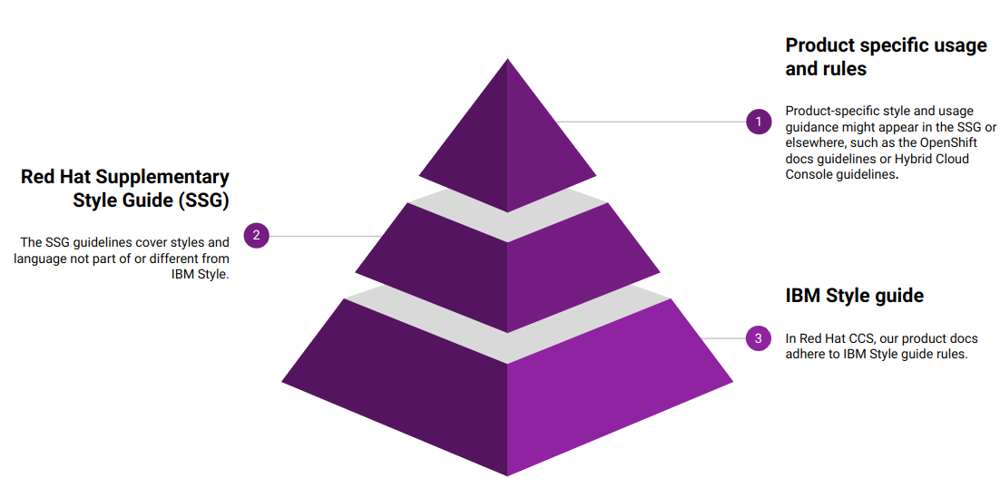

Introduction
About this guide
The style and language guidance in this guide overrides or supplements some guidance provided by the IBM Style guide, which is the primary source of style guidance for Red Hat product and cross-product solution documentation.
The Red Hat Customer Content Services team has created this guide to help ensure that Red Hat product documentation is clear, consistent, and cohesive. Upstream communities who want to align more closely with the standards used by Red Hat product documentation can also use this guide.
|
Other Red Hat technical documentation, including Red Hat training and exam content by Global Learning Services (GLS), follows the Red Hat Technical Writing Style Guide instead of the Red Hat supplementary style guide for product documentation. |
Using style guides for Red Hat product documentation
Red Hat product documentation adheres to the style guidance provided in the IBM Style guide, the Red Hat supplementary style guide for product documentation, and documentation style guidelines specific to Red Hat products, such as Red Hat Enterprise Linux or Red Hat OpenShift Container Platform.
When seeking style guidance, consult the style guide specific to your product documentation project first, if applicable, then the Red Hat supplementary style guide for product documentation, and finally the IBM Style guide. The following image illustrates the hierarchical relationship between the different style guides in Red Hat product documentation:

If you think that a documentation use case needs to deviate from the guidance in this guide, notify the style council by opening an issue. This way, the deviation can be discussed by the style council and, if appropriate, included in this guide.
Related Red Hat guides
In addition to the IBM Style guide and the Red Hat supplementary style guide for product documentation, Red Hat product documentation uses the following reference guides for technical writers:
-
Modular Documentation Reference Guide: Guidance for all things connected to modular documentation, including implementing those guidelines in AsciiDoc.
-
AsciiDoc Mark-up Quick Reference: Guidance specific to writing in AsciiDoc. Includes links to complete documentation for AsciiDoc and Asciidoctor.
-
Getting started with accessibility for writers: Guidance for creating accessible content.
PDF version
The Red Hat supplementary style guide for product documentation is also available as a PDF. You can download the latest version of the guide as a PDF from the GitHub releases section of project’s GitHub repository.
What’s new
Review the history of significant updates to the Red Hat supplementary style guide for product documentation.
|
To view the history of changes from 2020 through 2022, see the What’s new page in the GitHub repository. |
2024
April 2024
-
peer pod: Added glossary entry
-
Red Hat Decision Manager: Added glossary entry
-
Red Hat JBoss BPM Suite: Removed glossary entry
-
Red Hat JBoss BRMS: Removed glossary entry
-
Red Hat Process Automation Manager: Added glossary entry
-
Updated references to Red Hat JBoss BRMS to use the new name of Red Hat Decision Manager
-
Updated references to Red Hat JBoss BPM Suite to use the new name of Red Hat Process Automation Manager
March 2024
-
access mode: Added glossary entry
-
availability: Added glossary entry
-
availability zone: Added glossary entry
-
Bare Metal service: Added glossary entry
-
bind: Added glossary entry
-
block device: Added glossary entry
-
block storage: Added glossary entry
-
block volume: Added glossary entry
-
boot source: Added glossary entry
-
brick: Added glossary entry
-
client: Updated glossary entry to include a generic definition
-
clone (noun): Added glossary entry
-
clone (verb): Added glossary entry
-
cloud storage: Added glossary entry
-
compression: Added glossary entry
-
control plane node: Added glossary entry
-
controller node: Added glossary entry
-
copy: Added glossary entry
-
currently: Added glossary entry
-
data compression: Added glossary entry
-
deduplication: Added glossary entry
-
directory: Added glossary entry
-
disaster recovery: Added glossary entry
-
disk encryption: Added glossary entry
-
dispersed volume: Added glossary entry
-
distributed file system: Added glossary entry
-
distributed volume: Added glossary entry
-
distributed-dispersed volume: Added glossary entry
-
distributed-replicated volume: Added glossary entry
-
dynamically provisioned storage: Added glossary entry
-
egress: Added glossary entry
-
encrypted disk: Added glossary entry
-
encryption: Added glossary entry
-
ephemeral storage: Added glossary entry
-
external mode: Added glossary entry
-
file storage: Added glossary entry
-
FUSE: Added glossary entry
-
geo-replication: Added glossary entry
-
gluster volume: Added glossary entry
-
high-availability cluster: Added glossary entry
-
hyperconverged cluster: Added glossary entry
-
infrastructure node: Added glossary entry
-
initiator: Added glossary entry
-
internal mode: Added glossary entry
-
local storage: Added glossary entry
-
logical cache: Added glossary entry
-
logical volume: Added glossary entry
-
metadata: Added glossary entry
-
multipath: Added glossary entry
-
network encryption: Added glossary entry
-
Network Time Configuration: Added glossary entry
-
n-way replication: Added glossary entry
-
object storage: Added glossary entry
-
OpenShift Container Platform cluster: Added glossary entry
-
phase: Added glossary entry
-
physical disk: Added glossary entry
-
physical volume: Added glossary entry
-
platform: Added glossary entry
-
primary cluster: Added glossary entry
-
primary node: Added glossary entry
-
provision: Added glossary entry
-
proxy: Added glossary entry
-
replicated volume: Added glossary entry
-
restore: Added glossary entry
-
rpm-ostree: Updated glossary entry to add formatting guidance
-
scale out: Added glossary entry
-
scale up: Added glossary entry
-
secondary cluster: Added glossary entry
-
self-healing: Added glossary entry
-
server: Added glossary entry
-
snapshot: Added glossary entry
-
source node: Added glossary entry
-
source volume: Added glossary entry
-
split brain: Added glossary entry
-
storage cluster: Added glossary entry
-
storage pool: Added glossary entry
-
stripe: Added glossary entry
-
subvolume: Added glossary entry
-
target: Updated glossary entry to include a generic definition
-
target volume: Added glossary entry
-
thickly provisioned: Added glossary entry
-
total capacity: Added glossary entry
-
translator: Added glossary entry
-
usable capacity: Added glossary entry
-
virtual disk: Added glossary entry
-
volume file: Added glossary entry
-
volume group: Added glossary entry
-
worker node: Added glossary entry
-
Commands requiring root privileges: Updated guidance to include an example
-
Release notes: Updated guidance about referring to release versions for documentation on deprecated and removed features
-
Using style guides for Red Hat product documentation: Updated to clarify the hierarchy of the IBM Style guide, the Red Hat supplementary style guide for product documentation, and product-specific style guidelines
February 2024
-
Administration Portal: Removed glossary entry because Red Hat Virtualization support is ending
-
Appliance console: Removed glossary entry because Red Hat CloudForms support is ending
-
collect: Removed glossary entry because Red Hat Virtualization support is ending
-
Data Warehouse: Removed glossary entry because Red Hat Virtualization support is ending
-
details view: Removed glossary entry because Red Hat Virtualization support is ending
-
gather: Removed glossary entry because Red Hat Virtualization support is ending
-
header bar: Removed glossary entry because Red Hat Virtualization support is ending
-
host: Removed glossary entry because Red Hat Virtualization support is ending
-
Manager virtual machine: Removed glossary entry because Red Hat Virtualization support is ending
-
MOM: Removed glossary entry because Red Hat Virtualization support is ending
-
Monitoring Portal: Removed glossary entry because Red Hat Virtualization support is ending
-
Red Hat CloudForms: Removed glossary entry because Red Hat CloudForms support is ending
-
Red Hat CloudForms Appliance: Removed glossary entry because Red Hat CloudForms support is ending
-
Red Hat CloudForms server: Removed glossary entry because Red Hat CloudForms support is ending
-
Red Hat Enterprise Linux host: Removed glossary entry because Red Hat Virtualization support is ending
-
Red Hat Virtualization: Removed glossary entry because Red Hat Virtualization support is ending
-
Red Hat Virtualization Host: Removed glossary entry because Red Hat Virtualization support is ending
-
Red Hat Virtualization Manager: Removed glossary entry because Red Hat Virtualization support is ending
-
resource tab: Removed glossary entry because Red Hat Virtualization support is ending
-
results list: Removed glossary entry because Red Hat Virtualization support is ending
-
self-hosted engine: Removed glossary entry because Red Hat Virtualization support is ending
-
self-hosted engine node: Removed glossary entry because Red Hat Virtualization support is ending
-
SmartState analysis: Removed glossary entry because Red Hat CloudForms support is ending
-
sparse: Removed glossary entry because Red Hat Virtualization support is ending
-
sparsify: Removed glossary entry because Red Hat Virtualization support is ending
-
standalone Manager: Removed glossary entry because Red Hat Virtualization support is ending
-
Storage Pool Manager: Removed glossary entry because Red Hat Virtualization support is ending
-
sub-version: Removed glossary entry because Red Hat Virtualization support is ending
-
Virtual Management Database: Removed glossary entry because Red Hat CloudForms support is ending
-
VM Portal: Removed glossary entry because Red Hat Virtualization support is ending
-
Worker Appliance: Removed glossary entry because Red Hat CloudForms support is ending
-
Commands in code blocks: Added guidance to use bold formatting for commands in code blocks and to show only one command per code block
January 2024
-
Customer Portal: Added glossary entry
-
hashbang: Added glossary entry
-
ingress: Updated guidance from uppercase "Ingress" to lowercase "ingress"
-
interpreter directive: Added glossary entry
-
shebang: Added glossary entry
-
Man page references: Added guidance on referencing man pages
2023
December 2023
-
IBM Cloud®: Added glossary entry
-
look up: Removed glossary entry because guidance already exists in the Merriam-Webster Dictionary
-
look-up: Removed glossary entry because guidance already exists in the Merriam-Webster Dictionary
-
lookup: Removed glossary entry because guidance already exists in the Merriam-Webster Dictionary
-
now: Updated glossary entry to "use with caution"
-
previously: Added glossary entry
-
IP addresses and MAC addresses: Added examples of reserved IP addresses and MAC addresses
November 2023
No glossary or style updates.
October 2023
-
Ansible Rulebook: Added glossary entry
-
because: Removed glossary entry because guidance already exists in the IBM Style guidance
-
executable (adjective): Added glossary entry
-
executable (noun): Added glossary entry
-
playbook: Added glossary entry
-
rulebook: Added glossary entry
-
spec file: Updated glossary entry for clarity
September 2023
-
AWS Local Zone: Added glossary entry
-
AWS opt-in Region: Added glossary entry
-
IBM Cloud® Bare Metal (Classic): Added glossary entry
-
IBM eServer System i: Added glossary entry with "do not use" guidance
-
inject: Added glossary entry
-
opt in: Added glossary entry
-
pulldown: Removed glossary entry in favor of following the IBM Style guidance on using "dropdown" and "drop-down"
-
segmentation fault: Updated glossary entry for clarity
August 2023
-
agnostic: Removed glossary entry because it already exists in the IBM Style guide
-
Application Stream: Added glossary entry
-
Appstream repository: Added glossary entry
-
BaseOS repository: Added glossary entry
-
binary RPM: Added glossary entry
-
Boolean dependencies: Added glossary entry
-
byte-compiled program: Added glossary entry
-
client side: Removed glossary entry because it already exists in the IBM Style guide
-
client-side: Removed glossary entry because it already exists in the IBM Style guide
-
cloud: Removed glossary entry because it already exists in the IBM Style guide
-
CodeReady Linux Builder repository: Added glossary entry
-
colocate: Removed glossary entry because it already exists in the IBM Style guide
-
data center: Removed glossary entry because it already exists in the IBM Style guide
-
DevOps: Removed glossary entry because it already exists in the IBM Style guide
-
DNF Automatic: Added glossary entry
-
domain controller: Updated glossary entry to include IdM-specific information
-
file trigger directive: Added glossary entry
-
IBM eServer System p: Updated to "do not use"; use "IBM Power" instead
-
IBM S/390: Updated to "do not use"; use "IBM Z" instead
-
interpreted code: Added glossary entry
-
ISeries: Updated to "do not use"; use "IBM Power" instead
-
module: Added glossary entry
-
module profile: Added glossary entry
-
module stream: Added glossary entry
-
natively compiled code: Added glossary entry
-
pSeries: Updated to "do not use"; use "IBM Power" instead
-
raw-interpreted program: Added glossary entry
-
Rolling Stream: Added glossary entry
-
RPM macro: Added glossary entry
-
scriptlet directive: Added glossary entry
-
Source RPM: Added glossary entry
-
trigger directive: Added glossary entry
-
Weak dependencies: Added glossary entry
-
Minimalism: Added section with guidance on writing with minimalism
July 2023
-
Elastic Load Balancing: Added glossary entry
-
IBM® LinuxONE: Added glossary entry
-
IBM Power®: Added glossary entry
-
IBM Z®: Updated glossary entry
-
Red Hat build of OpenJDK: Added glossary entry
-
Red Hat Java: Added glossary entry
-
Red Hat OpenJDK: Added glossary entry
-
s390x: Added glossary entry
-
Non-breaking spaces: Updated to clarify why non-breaking spaces should be used
-
Titles and headings: Added guidance to use sentence-style capitalization for titles and headings
-
User interface elements: Updated to clarify not to use bold text if an element is not labeled in the user interface
-
User-replaced values: Updated to provide guidance on using user-replaced values in example output
-
Updated the guide to enable clickable section headings.
-
Added a downloadable PDF version of the guide.
June 2023
-
Ansible Playbook: Updated glossary entry for preferred spelling
-
bimodal IT: Updated glossary entry to include link to the Gartner website
-
bimonthly: Updated to "do not use" because the term can be ambiguous
-
biweekly: Updated to "do not use" because the term can be ambiguous
-
codebase: Added glossary entry
-
sos report: Added glossary entry
-
sosreport: Added glossary entry
-
Added a 0-9 section and moved entries starting with a number to it.
-
Added links to the new Red Hat Getting started with accessibility for writers guide.
-
Removed the Cloud services guidelines heading, since all guidelines under it were applicable to all product documentation. Redistributed its guidelines to other sections:
-
Moved Accessibility to its own top-level section.
-
Moved the Localization guideline to a note in Conversational style.
-
Moved Microcopy to Graphical interfaces.
-
Moved Screenshots to Graphical interfaces.
-
-
Renamed Symbols to Special characters.
-
Updated the guide to use a new look and feel.
May 2023
-
64-bit ARM: Added glossary entry
-
64-bit x86: Added glossary entry
-
AArch64: Added glossary entry
-
aarch64: Added glossary entry
-
AMD64: Updated description
-
amd64: Added glossary entry
-
ARM64: Added glossary entry
-
arm64: Added glossary entry
-
Intel 64: Added glossary entry
-
softirq: Added glossary entry
-
x86_64: Added glossary entry
-
External links: Updated to clarify what an external link is
April 2023
-
Apache web server: Updated to remove extraneous IdM definitions
-
certificate authority: Renamed from "certificate authorities", and updated to remove extraneous IdM definitions
-
domain controller: Updated to remove extraneous IdM definitions
-
Kerberos protocol: Updated to remove extraneous IdM definitions
-
Kerberos realm: Updated to remove extraneous IdM definitions
-
POSIX attributes: Updated to remove extraneous IdM definitions
-
web server: Updated to remove extraneous IdM definitions
-
Added a non-breaking space between "Red" and "Hat" in each occurrence within the guide.
-
Short descriptions: Added guidance on writing short descriptions (also known as abstracts).
March 2023
-
devfile: Added glossary entry
-
Updated examples throughout the guide to use a consistent order of "For <information>, see <link>" when referencing other resources.
February 2023
-
Foreman: Updated to remove outdated guidance
-
session persistence: Added glossary entry
-
sticky bit: Added glossary entry
-
sticky session: Added glossary entry
-
want: Updated to "use with caution"
-
we suggest: Updated to remove outdated guidance
-
Added a What’s new section to list what has changed with this guide each month.
January 2023
-
Assisted Installer: Added glossary entry
-
Basic HTTP authentication: Added glossary entry
-
bytecode: Added glossary entry
-
Developer Preview: Added glossary entry
-
Kubernetes: Added glossary entry
-
through: Removed glossary entry in favor of following the IBM Style guidance on number ranges
-
Developer Preview: Added guidance on documenting Developer Preview features
-
Non-breaking spaces: Added guidance on using a non-breaking space between "Red" and "Hat"
Contributing
Submitting a question or suggestion
If you have a suggestion or question, open an issue in the project’s GitHub repository.
Making an update to this guide
If you want to contribute an update to this guide, see the Contributing guide provided in the project’s GitHub repository.
Style guidelines
These recommendations might override existing guidance in the IBM Style guide, or might provide guidance for items not covered in the IBM Style guide.
|
If applicable, these guidelines provide example formatting in AsciiDoc, which is the markup language that Red Hat Customer Content Services currently uses. However, the guidelines can be applied to any language. |
Grammar and language
Conscious language
The Conscious Language Group supports the Red Hat commitment to remove problematic language from our code, documentation, websites, and open source projects with which Red Hat is involved. For more information about the Conscious Language Group, see https://github.com/conscious-lang/conscious-lang-docs.
|
To ensure consistency and success, it is imperative for product team stakeholders to align internally. For example, documentation teams should engage in discussions with their engineering leadership to reach an agreement on replacement terms. This ensures that the product documentation matches the code. |
Blacklist and whitelist
When possible, rewrite documentation to avoid these terms. When it is not possible to remove the terms blacklist and whitelist, replace them with one of the following alternatives:
-
Blocklist / allowlist: This combination is recommended by the IBM Style guide. Use this combination unless your product area has another specific replacement that is agreed between engineering leadership and your documentation team.
-
Denylist / allowlist
-
Blocklist / passlist
-
You can also use a term that has been agreed by your product team stakeholders.
-
Removing blacklist
 Heat blacklists any servers in the list from receiving updated heat deployments. After the stack operation completes, any blacklisted servers remain unchanged. You can also power off or stop the
Heat blacklists any servers in the list from receiving updated heat deployments. After the stack operation completes, any blacklisted servers remain unchanged. You can also power off or stop the os-collect-configagents during the operation. Heat excludes any servers in the list from receiving updated heat deployments. After the stack operation completes, any excluded servers remain unchanged. You can also power off or stop the
Heat excludes any servers in the list from receiving updated heat deployments. After the stack operation completes, any excluded servers remain unchanged. You can also power off or stop the os-collect-configagents during the operation. -
Removing whitelist
The following steps demonstrate adding a new rule to whitelist a custom binary. The following steps demonstrate adding a new rule to allow a custom binary.
Master and slave
When possible, rewrite documentation to avoid these terms. When it is not possible to rewrite, you can use the following alternatives for master / slave:
-
Primary / secondary
-
Source / replica
-
Initiator, requester / responder
-
Controller, host / device, worker, proxy
-
Director / performer
-
Controller / port interface (in networking)
-
You can also use a term that has been agreed by your product team stakeholders.
-
Removing master
A Ceph Monitor maintains the master copy of the Red Hat Ceph Storage cluster map with the current state of the Red Hat Ceph Storage cluster. A Ceph Monitor maintains the primary copy of the Red Hat Ceph Storage cluster map with the current state of the Red Hat Ceph Storage cluster. A Ceph Monitor maintains the main copy of the Red Hat Ceph Storage cluster map with the current state of the Red Hat Ceph Storage cluster. -
Removing slave
Use the following command to copy the public key to the slave node. Use the following command to copy the public key to the secondary node.
Contractions
Avoid contractions in product documentation to leave no ambiguity and to make it easier for translation and international audiences.
If you are writing quick start or other content that uses a more informal conversational style (fairly conversational or more conversational), you may use contractions. In this case, follow the guidance in the IBM Style guide on using contractions.
Conversational style
Follow the IBM Style guide advice of less conversational style in most cases.
Red Hat Enterprise Linux 8 delivers a stable, secure, and consistent foundation across hybrid cloud deployments with the tools needed to deliver workloads faster with less effort.
As needed, adjust the conversational to fairly conversational for an audience of new users or least conversational for API documentation and other very experienced audiences.
|
Documentation for cloud services follows the IBM Style guide for fairly conversational tone. When using fairly conversational tone, use contractions where appropriate. |
Homographs
A homograph is a word that is spelled the same as another word but has a different meaning. Using homographs close together in a sentence or paragraph might confuse readers. Therefore, be aware of this potential issue, and, when possible, avoid writing sentences that use homographs close to one another provided that you can do so without changing the technical meaning.
The following list includes homographs that might commonly appear in technical documentation:
-
Application
-
Attribute
-
Block
-
Coordinates
-
Number
-
Object
-
Project
Minimalism
Minimalism is a methodology for creating targeted documentation focused on your readers' needs. If you understand your customers' needs, you can write shorter and simpler documentation specific to what customers want to do.
Minimalism has five principles:
Principle 1: Customer focus and action orientation
Know what your users do, what their goals are, and why they perform these actions. Minimize how much content customers must wade through to get to something they recognize as real work. Separate conceptual and background information from procedural tasks.
Principle 2: Findability
Findability covers two areas:
-
Ensure your content is findable through Google search and access.redhat.com site searches.
-
Ensure your content is scannable. Use short paragraphs and sentences and bulleted lists where appropriate.
Principle 3: Titles and headings
Use clear titles with familiar keywords for customers. Keep titles and headings between 3 to 11 words. Headings that are too short lack clarity and don’t help customers know what’s in a section. Headings that are too long are less visible in Google searches and harder for customers to understand.
Principle 4: Elimination of fluff
Avoid long introductions and unnecessary context. Shorten unnecessarily long sentences.
Principle 5: Error recovery, verification, and troubleshooting
Recognize that people make mistakes and need to verify that they have completed a task. Be sure to include troubleshooting, error recovery, and verification steps.
Formatting
Commands in code blocks
Use a single command per code block for each procedure step. This approach helps with readability and makes it possible for the copy button in code blocks to work correctly.
By default, use bold formatting for commands in code blocks to visually distinguish the commands from their lead-in sentences and from the command prompts and example outputs. For consistency, use bold formatting for commands even when no command output is shown in the code block.
|
To apply formatting in a code block, you must use the |
Verify that the `libvirt` default network is active and configured to start automatically:
[subs="+quotes"] ---- # *virsh net-list --all* Name State Autostart Persistent -------------------------------------------- default active yes yes ----
This example renders as follows in HTML:
Verify that the libvirt default network is active and configured to start automatically:
# virsh net-list --all Name State Autostart Persistent -------------------------------------------- default active yes yes
For commands and command outputs in code blocks, observe the correct markup for user-replaced values, as described in User-replaced values and User-replaced values for XML.
Date formats
Follow the IBM Style guide advice of day Month year for date formats, for example, 3 October 2019.
When the format day Month year causes a presentation or clarity issue, use Month day, year (for example, October 3, 2019) instead.
Man page references
When referencing a man page in an "Additional resources" section, use the following format:
-
<man_page_name>(<section_number>)man page on your system
Do not link to a website that contains the man page information. The contents of a man page might vary between systems or package versions, so users must run the man command on the target system to view the system-specific information for the named command or utility.
-
sudoers(5)man page on your system
-
nmcli(1),nm-settings(5), andsudoers(5)man pages on your system
Non-breaking spaces
Use a non-breaking space ({nbsp}) between the words "Red" and "Hat". The non-breaking space prevents an automatic line break from separating the two words onto two lines.
A non-breaking space prevents the company name from splitting across a line break.
Before you begin to customize the installer, download the Red{nbsp}Hat-provided boot images.
Product names and version references
Use attributes instead of hard-coded references when you refer to the name of your product in full, to its abbreviated form, or to its major or minor version. Only use hard-coded version references if the version that you are referring to in a particular case never changes.
Attribute file
Define attributes for product name and product version and store them in a dedicated attributes file for each set of product documentation.
For examples of where you can store the shared attributes file inside your documentation repository, see the Example modular documentation repository.
Include the attributes file at the beginning of the master.adoc files of all titles in your documentation set:
include::<path_to_directory_with_attributes_file>/attributes.adoc[]
Minimum required attributes
Define attributes for the following values in each documentation set. Note that the attribute names used in this section are only meant as examples. You can use different attribute names:
- The name of the product
-
Use the product name attribute for all instances of the product name where possible. Avoid using hard-coded product names. For example:
Example AsciiDoc: Product name attribute:name-product: Red{nbsp}Hat JBoss Enterprise Application Platform - The abbreviated form of the product name
-
If it is necessary for your product, you can use an attribute to store a shortened version of the name of your product, for example:
Example AsciiDoc: Abbreviated product name attribute:name-product-abbreviated: JBoss EAP
- The major and minor version of the product
-
Use an attribute for the product version in cases where the product version can change with each release and the content is still correct. For example:
Example AsciiDoc: Product version attributes:version-product-minor: 1.11 :version-product-patch: 1.11.6
Do not use the product version attribute if the version should not change. For example, if a feature was introduced in a certain version, the version should be hard-coded.
You might create additional attributes according to what your documentation requires. For example, you might combine existing product name attributes to create compound names of products or components:
:name-runtime-spring-boot: Spring Boot
:name-runtime-vertx: Eclipse Vert.x
:name-spring-reactive: {name-runtime-spring-boot} with {name-runtime-vertx} reactive components
Single-step procedures
When a procedure contains only one step, use an unnumbered bullet.
For example:
-
Install the
dnf-automaticpackage.
Titles and headings
Write all titles and headings, including the titles of product documentation guides and Knowledgebase articles, in sentence-style capitalization. Do not use headline-style capitalization.
-
Composing a customized RHEL system image
-
Configuring the node port service range
-
How to perform an unsupported conversion from a RHEL-derived Linux distribution to RHEL
User-replaced values
A user-replaced value, also known as a replaceable or variable value, is a placeholder that the user replaces with a value that is relevant for their situation. User-replaced values are often found in places such as code blocks, file paths, and commands.
Use descriptive names for user-replaced values and follow this general format: <value_name>.
|
For XML code blocks, see the guidance on user-replaced values for XML. |
Ensure that user-replaced values have the following characteristics:
-
Surrounded by angle brackets (
< >) -
Separated by underscores (
_) for multi-word values -
Lowercase, unless the rest of the related text is uppercase or another capitalization scheme
-
Italicized
-
If the user-replaced value is referencing a value in code or in a command that is normally monospace, also use monospace for the user-replaced value
-
If you want to use a user-replaced value in example output, format the replaceable value with italics and in angle brackets. Alternatively, if you choose to use an example value instead, do not italicize the example value and do not place it in angle brackets.
Create an Ansible inventory file that is named `/_<path>_/inventory/hosts`.
This example renders as follows in HTML:
Create an Ansible inventory file that is named /<path>/inventory/hosts.
To italicize a user-replaced value in a code block, you must add an attribute to apply text formatting, such as subs="+quotes" or subs="normal", to the attribute list of the code block.
[subs="+quotes"] ---- $ *oc describe node __<node_name>__* ----
This example renders as follows in HTML:
$ oc describe node <node_name>
[subs="+quotes"] ---- connection.id: __<profile_name>__ connection.uuid: b6cdfa1c-e4ad-46e5-af8b-a75f06b79f76 connection.type: 802-3-ethernet connection.interface-name: enp7s0 ----
This example renders as follows in HTML:
connection.id: <profile_name> connection.uuid: b6cdfa1c-e4ad-46e5-af8b-a75f06b79f76 connection.type: 802-3-ethernet connection.interface-name: enp7s0
User-replaced values for XML
Because XML uses angle brackets (< >), the default guidance for user-replaced values does not work well for it. If you are using user-replaced values in an XML code block, use the following format: ${value_name}.
Ensure that user-replaced values in XML have the following characteristics:
-
Surrounded by curly braces and preceded by a dollar sign (
${ }) -
Separated by underscores (
_) for multi-word values -
Lowercase, unless the rest of the related text is uppercase or another capitalization scheme
-
Italicized
-
If the user-replaced value is referencing a value in code or in a command that is normally monospace, also use monospace for the user-replaced value
[source,xml,subs="+quotes"]
----
<ipAddress>__${ip_address}__</ipAddress>
----
This example renders as follows in HTML:
<ipAddress>${ip_address}</ipAddress>[source,xml,subs="+quotes"]
----
<oauth2-introspection client-id="__${client_id}__"/>
----
This example renders as follows in HTML:
<oauth2-introspection client-id="${client_id}"/>Structure
Admonitions
Admonitions should draw the reader’s attention to certain information. Keep admonitions to a minimum, and avoid placing multiple admonitions close to one another. If multiple admonitions are necessary, restructure the information by moving the less-important statements into the flow of the main content.
Valid admonition types:
- NOTE
-
Additional guidance or advice that improves product configuration, performance, or supportability.
- IMPORTANT
-
Advisory information essential to the completion of a task. Users must not disregard this information.
- WARNING
-
Information about potential system damage, data loss, or a support-related issue if the user disregards this admonition. Explain the problem, cause, and offer a solution that works. If available, offer information to avoid the problem in the future or state where to find more information.
- TIP
-
Alternative methods that might not be obvious. Makes applying the techniques and procedures described in the text easier or targets specific needs. Helps users understand the benefits and capabilities of the product. Not essential to using the product.
|
CAUTION, which is another type of AsciiDoc admonition, is not fully supported by the Red Hat Customer Portal. Do not use this admonition type. |
Admonitions should be short and concise. Do not include procedures in an admonition.
Only individual admonitions are allowed, for example, you cannot have a plural NOTES heading.
[NOTE] ==== Text for note. ====
Lead-in sentences
A lead-in sentence in this context is the text that directly follows a Prerequisites or Procedure heading in a task-based module. It is distinct from the module abstract, which describes the goals of the user for the module.
Do not use a lead-in sentence in the Prerequisites or Procedure sections of a module unless it is necessary to aid navigation or add clarity.
The following examples demonstrate when a lead-in sentence might add value.
-
Your module has a long list of prerequisites, and you want to group the prerequisites in sections to make it easier for users to understand what tasks must be performed to complete a procedure.
-
Your module has a complex procedure or set of prerequisites, and you want to emphasize that all steps or prerequisites must be completed.
Use a complete sentence for the lead-in sentence to reduce ambiguity and support translation.
Prerequisites
When writing prerequisites, be as clear and concise as possible. You can use the passive voice, if necessary, to achieve that end.
Write prerequisites as checks that are true or that the user must have completed before they begin a procedure. They can be actions that the user, another person, or piece of technology has completed. Prerequisites can also include items that the user must have ready before beginning the procedure.
-
The passive voice might be appropriate for a prerequisite that is not completed by the current user. For example, having a configuration enabled by a system admin.
-
Avoid using imperative formations.
-
Use parallel language when you write prerequisites. For example, if one bullet is a complete sentence, write the other bullets as complete sentences. But one bullet can be passive voice and another active voice.
-
JDK 11 or later is installed.
Passive voice: the agent is unknown or unimportant.
-
A running Kafka instance in {product}.
Not a complete sentence: This prerequisite is acceptable if all the other prerequisites in your list are also not complete sentences.
-
You are logged in to the Administration Portal.
-
You have validated Thing 1.
Short descriptions
To help readers find the information that they need or to confirm that they are in the right place, every module and assembly must include a short description, also called an abstract.
This description is usually at least 2-3 sentences long, and you can scan it in a few seconds. It exists between the title and the main content, connecting them and providing context and disambiguation.
Follow these guidelines when writing short descriptions:
-
Include user intent:
-
What users must do. This content is similar to what is in the title but should not just repeat the same information.
-
Why users must complete an action. You must build from the information in the title. This content helps users understand why completing an action is important or beneficial to them.
-
-
Make modules findable and reusable. Ensure that the product name is either in the title or the short description of a module or assembly.
-
If you are documenting two or more ways of completing the same procedure, explain why users would want to choose one or the other. If possible, link to the other ways.
-
For complex procedures, include some of the key tasks that a customer must complete.
-
Write in plain English and use simple sentences. You can test the reading level of your sentences by using a readability scoring tool.
-
Use active voice and present tense.
-
Avoid self-referential language, such as "This topic covers…" or "Use this procedure to…".
-
Avoid feature-focused language. Focus on what users can accomplish with a product, not on what a product does. For example, avoid phrases such as "This product allows you to…".
-
Use customer-centric language, such as "You can… by…" or "To…, configure…".
==== Creating a group and adding a system
Group many systems together in the Edge Management application [what] to manage them more easily [why]. For example, you can more easily mitigate vulnerabilities and update systems that are alike.
==== Creating a Kafka instance in OpenShift Streams for Apache Kafka
To connect OpenShift Streams for Apache Kafka to other applications or services [why], create and configure a Kafka instance in the web console [what]. A Kafka instance in OpenShift Streams for Apache Kafka includes the following items:
-
A Kafka cluster
-
A bootstrap server
-
The configurations needed to connect to producer and consumer services
Technical examples
Commands requiring root privileges
Some commands require root privileges to run. Users without root privileges must first do one of the following to run such a command:
-
Preface the command with
sudoto temporarily change their current privileges. -
Run
su -to switch to the root user account.
Use the following guidelines when you document commands that require root privileges:
-
If a command requires a temporary switch to root privileges, use the
sudocommand at the beginning of the sample command syntax rather than thesu -command. -
If you include a shell prompt in a sample command, always show the correct prompt for a regular user (
$) or a user with root privileges (#).Do not rely solely on a shell prompt in a sample command to indicate the required privilege level to run a command. If you include a shell prompt to indicate that a user with root privileges must run the command, also include a statement about this requirement in the step text, the introductory text, or the prerequisites.
-
When a sample command includes
sudo, use the$prompt, not#, as shown in the following example:$ sudo systemctl start firewalld -
If multiple commands in a procedure require root privileges, add introductory content to tell the user about the requirement. The following example shows one way that you could integrate a requirement for root access into the introduction for a procedure:
Example AsciiDocSome tasks in this procedure require root privileges, which you can get temporarily by prefixing commands with `sudo`.
IP addresses and MAC addresses
Use the IP and MAC address ranges that are reserved for documentation purposes to avoid the likelihood of conflicts and confusion.
Reserved IP addresses
Reserved IPv4 addresses for documentation are defined in RFC 5737:
| Network | Subnet mask | Assignable addresses |
|---|---|---|
192.0.2.0 |
24 |
192.0.2.1 - 192.0.2.254 |
198.51.100.0 |
24 |
198.51.100.1 - 198.51.100.254 |
203.0.113.0 |
24 |
203.0.113.1 - 203.0.113.254 |
Reserved IPv6 addresses for documentation are defined in RFC 3849:
| Network | Prefix | Assignable addresses |
|---|---|---|
2001:0DB8:: (long form: 2001:0DB8:0:0:0:0:0:0) |
32 |
2001:0db8:0000:0000:0000:0000:0000:0000 - 2001:0db8:ffff:ffff:ffff:ffff:ffff:ffff |
See the IBM Style guide for additional guidance on using IP addresses in documentation.
Reserved MAC addresses
Reserved MAC addresses for documentation are defined in RFC 7042:
-
For unicast: 00:00:5E:00:53:00 - 00:00:5E:00:53:FF
-
For multicast: 01:00:5E:90:10:00 - 01:00:5E:90:10:FF
Long code examples
All code blocks (regardless of length) must be necessary, accurate, and helpful. Code blocks must be as copy-and-paste friendly as possible, with the exception of variables and callouts. The length of the block is irrelevant, within reason, if the code block follows these guidelines.
Syntax highlighting
Provide the source language if it is supported by the Red Hat Customer Portal toolchain. Do not use the bash source language for terminal commands. It incorrectly interprets the number sign (#) as a comment instead of the prompt for a root command.
[source,yaml]
----
collections:
- name: amazon.aws
source: https://galaxy.ansible.com/api/v2/collections
version: 1.2.1
----
Graphical interfaces
For more detailed guidance on how to document user interface (UI) elements, see PatternFly.
Microcopy
The words in a user interface, commonly referred to as "UX copy" or "microcopy", are just as important as the components or layouts. Microcopy is another element of design, and it can drive better UX decisions and guide users to succeed. Red Hat cloud services are based on PatternFly, an open source design system created to enable consistency and usability across a wide range of applications and use cases.
See UX writing in the PatternFly content style guide for comprehensive guidelines about documenting user interfaces.
Screenshots
Avoid screenshots for both accessibility and localization reasons. If you must use screenshots, use them as judiciously as possible and ensure alt text is unique and descriptive. For more information about proper use of images in user interface documentation, see Accessibility.
Text entry
To indicate that a user should input text, use "enter" as opposed to "type" or "input". The text to enter should be in monospace.
In the *Name* field, enter `test-postgresql`.
User interface elements
Use bold text for all graphical user interface (GUI) element names, including menus, menu items, buttons, dialog boxes, and windows. Use bold text for the element name if the name appears in the GUI, even if the element is not clickable.
On the *Installed Operators* page, click *Metering*.
If an element is not labeled in the GUI, refer to the element by a generic description and do not use bold text. For example, if a search field is not labeled in the GUI, write it as "the search field", not "the Search field".
Legal
Cost references
Avoid all references to the costs and charges of Red Hat products. Although the IBM Style guide recommends against using the term "free", also avoid any references to cost in product documentation because they can confuse users and cause legal concerns. Any cost information is best referenced in marketing materials.
-
"at no initial cost" - Avoid this phrase in documentation because, although it implies there are further costs, it can also be construed to mean that the product is free when it is not.
Future releases or plans
When possible, avoid making statements that predict future releases or plans.
However, some circumstances, such as release notes or deprecation notices, might dictate that you refer to a future release, plan, or event. In these situations, follow these guidelines:
-
When discussing future plans, use words such as "anticipate", "expect", or "plan".
-
Do not promise that a feature or a fix for a known issue will be included in an upcoming release or according to a specific timeline.
-
Do not refer to a specific future release. For example, do not mention a particular release number or a specific release date.
One exception to this rule applies to deprecation and removal notices, which might have to specify a future release in which a feature or functions will be deprecated and removed.
See Deprecated and removed features for guidelines about deprecation and removal notices.
We will fix this issue in the 18.3.4 release next February.
It is anticipated that an upcoming release will include a fix for this issue.
Links
Cross-references
Follow these guidelines when adding cross-references within your documentation:
-
Include cross-references only when necessary.
-
If the information is critical, consider including it instead of cross-referencing.
For more information about <topic>, see xref:<link>[<link_text>].
External links
Follow these guidelines when linking externally:
-
Avoid unnecessary links to external sites not owned and operated by Red Hat or IBM. Links to external sites can change or be unreliable. In addition, customers might infer that Red Hat endorses or supports the linked content, even if that is not the intent.
Links to upstream sites, such as GitHub, are considered to be external links.
-
When possible, link to a top-level page and avoid deep links to a specific page or image. Deep links can break more frequently and can inadvertently bypass a site’s legal notices.
-
Do not use bare URLs for links. Bare URLs are unhelpful because they do not provide adequate context about the link target.
-
Always include meaningful link text. Meaningful link text describes to users what content they will see if they click the link.
-
Use hyperlinks unless the URL is an example URL or is otherwise inaccessible to users.
-
By default, links are followable and crawlable. Do not use the
nofollowlink option unless absolutely necessary.
For information about links and web addresses, including using URLs in examples, see the IBM Style guide.
For more information about <topic>, see link:<link>[<link_text>].
Link text
Follow these guidelines when specifying link text:
-
Contextually describe what the user will find at the target location so that they can decide if they want to leave their current location.
-
Use a concise sentence or sentence fragment as the link text.
-
Avoid irrelevant link text.
Links to Red Hat Knowledgebase articles
-
Use the title of the Knowledgebase article for the link text, or use descriptive running text.
-
When not using running text, call out that this is a Knowledgebase article.
-
When the link appears in Additional resources, put the article title first, followed by
(Red Hat Knowledgebase).
For a non-cloud environment, you can resize the disk and file system. For more information, see the Red Hat Knowledgebase solution Does RHEL 7 support online resize of disk partitions?.
If your Apache web server configuration enables SSL security, verify that you enable only the TLSv1 protocol and disable SSLv2 and SSLv3. This is because of the POODLE SSL vulnerability (CVE-2014-3566).
-
Does RHEL 7 support online resize of disk partitions? (Red Hat Knowledgebase)
Support
Developer Preview
Developer Preview software provides early access to a technology, component, or feature in advance of its possible inclusion in a Red Hat product offering. Customers can use Developer Preview software to test functionality and provide feedback during the development process. Documentation is not required for Developer Preview software, but if documentation is provided, it is subject to change or removal at any time. Also, testing is limited for Developer Preview software. Red Hat might provide ways to submit feedback on Developer Preview software without an associated SLA.
|
Some products, such as Red Hat Openshift Container Platform, do not include Developer Preview content in the documentation. Check with your Content Strategist or Support contact to confirm whether you can publish Developer Preview documentation for your product. |
When documenting a Developer Preview software, follow these guidelines:
-
Add an admonition labeled IMPORTANT at the beginning of the Developer Preview content and include the template text.
-
Use initial uppercase capitalization, that is, Developer Preview.
-
Never use the phrase "supported as a Developer Preview", and avoid using "support" in Developer Preview descriptions. Instead, use neutral words like "available", "provide", "capability", and so on.
-
When the Developer Preview software becomes generally available, remove the IMPORTANT admonition from any document that includes content about the feature.
You might need to replace the Developer Preview admonition with a Technology Preview admonition. For more information, see Technology Preview.
Use the following template. Replace <software_name> with the software name:
[IMPORTANT]
====
<software_name> is Developer Preview software only. Developer Preview software is not supported by Red{nbsp}Hat in any way and is not functionally complete or production-ready. Do not use Developer Preview software for production or business-critical workloads. Developer Preview software provides early access to upcoming product software in advance of its possible inclusion in a Red{nbsp}Hat product offering. Customers can use this software to test functionality and provide feedback during the development process. This software might not have any documentation, is subject to change or removal at any time, and has received limited testing. Red{nbsp}Hat might provide ways to submit feedback on Developer Preview software without an associated SLA.
For more information about the support scope of Red{nbsp}Hat Developer Preview software, see link:https://access.redhat.com/support/offerings/devpreview/[Developer Preview Support Scope].
====-
NUMA-aware scheduling
-
Node Health Check Operator
-
CSI inline ephemeral volumes
For more information about the support scope of Red Hat Developer Preview features, see Developer Preview Support Scope. For a comparison of Developer Preview and Technology Preview features, see Developer and Technology Previews: How they compare.
Technology Preview
Technology Preview features provide early access to upcoming product innovations, enabling customers to test functionality and provide feedback during the development process. However, these features are not fully supported. Documentation for a Technology Preview feature might be incomplete or include only basic installation and configuration information.
When documenting a Technology Preview feature, follow these guidelines:
-
Add an admonition labeled IMPORTANT at the beginning of the Technology Preview content and include the template text.
-
Use initial uppercase capitalization, that is, Technology Preview.
-
Include a brief description of the Technology Preview feature in the release notes.
-
Maintain a list of features that are currently in Technology Preview status in the release notes.
-
Never use the phrase "supported as a Technology Preview", and avoid using "support" in Technology Preview descriptions. Instead, use neutral words like "available", "provide", "capability", and so on.
-
When the Technology Preview feature becomes generally available, remove the IMPORTANT admonition from the release notes and any other document that includes content about the feature.
Use the following template text verbatim, where <feature_name> is your feature name. If you are not referring to a specific feature, you can omit the first sentence of the template text:
[IMPORTANT]
====
<feature_name> is a Technology Preview feature only. Technology Preview features are not supported with Red{nbsp}Hat production service level agreements (SLAs) and might not be functionally complete. Red{nbsp}Hat does not recommend using them in production. These features provide early access to upcoming product features, enabling customers to test functionality and provide feedback during the development process.
For more information about the support scope of Red{nbsp}Hat Technology Preview features, see link:https://access.redhat.com/support/offerings/techpreview/[Technology Preview Features Support Scope].
====-
The Driver Toolkit
-
SSPI connection support on Microsoft Windows
-
Hot-plugging virtual disks
For more information about the support scope of Red Hat Technology Preview features, see Technology Preview Features Support Scope. For a comparison of Developer Preview and Technology Preview features, see Developer and Technology Previews: How they compare.
Release notes
Release notes doc texts
A doc text is a short description of an engineering Bugzilla or Jira issue that is published in product Errata advisories and release notes. Engineering typically supplies draft content, which is a summary of the issue, then technical writers edit or rewrite the draft content in accordance with the IBM Style guide. You can write doc texts in more than one way, depending on the issue type:
-
Enhancement
-
Bug fix
-
Known issue
-
Technology Preview
-
Deprecated functionality
Use the following general structure for consistency.
Enhancement
Use present tense in one of the following formats:
This enhancement <present tense explanation>.
With this update, <present tense explanation>.
This enhancement optimizes migration of an RBD volume from one Cinder back end to another when the volume resides within the same Ceph cluster. If both volumes are in the same Ceph cluster, Ceph performs data migration instead of the cinder-volume process. This reduces migration time.
With this update, you can create application credentials to use keystone to authenticate applications.
Bug fix
Use past tense for the problem and present tense for the solution, in the following format:
Before this update, <X problem> caused <Y situation> (OPTIONAL: under the following <Z conditions>). With this update, <fix> resolves the issue (OPTIONAL: and <agent> can <perform operation> successfully).
Before this update, the loopback device for Cinder iSCSI/LVM backend was not re-created after a system restart, which prevented the cinder-volume service from restarting. With this update, a systemd service re-creates the loopback device and the Cinder iSCSI/LVM backend persists after a restart.
Known issue
Use present tense for the issue and the imperative form for the workaround in the following format:
There is currently a known issue <present tense explanation> under <X conditions>. Workaround: <workaround>.
Currently, you cannot use Orchestration (heat) templates with the director to deploy an overcloud that requires NFS as an Image service (glance) back end. There is currently no workaround for this issue.
The Compute services (nova) might fail to deploy because the `nova_wait_for_compute_service` script is unable to query the Nova API. If a remote container image registry is used outside of the undercloud, the Nova API service might not finish deploying in time. Workaround: Rerun the deployment command, or use a local container image registry on the undercloud.
Technology Preview
For guidance and the template text to use for Technology Preview features, see the Technology Preview section.
Deprecated and removed features
Documenting the deprecation and removal stages of software features requires careful and precise communication. Highlight the following stages to users:
-
Plan to deprecate
-
Deprecate
-
Plan to remove
-
Remove
When alternatives to or workarounds for deprecated features are available, clearly inform users about them.
Referring to releases in deprecation and removal notices
In general, avoid definitive statements about specific releases, release versions, or dates for deprecation or removal. When possible, use the phrase "is planned for a future release" because it accounts for the possibility of changes to the planned deprecation or removal timeline.
If you must be specific about a release, use provisional language to reflect the fluid nature of development plans and to acknowledge the potential for plans to change. For example, if you must cite a specific version, rather than stating "<x> will be deprecated in version 4.16", use "It is currently planned for <x> to be deprecated in version 4.16". Alternatively, if you must cite a deprecation or removal timeline and you want to avoid citing a specific release number, use a phrase such as "<x> is planned to be deprecated in the next release".
Deprecation notice template
In <product_name> <release>, <name_of_capability_or_feature> is deprecated and is planned to be removed in the <deprecation_timeline>. Red{nbsp}Hat will provide bug fixes and support for this feature during the current release lifecycle, but this feature will no longer receive enhancements and will be removed. As an alternative to <name_of_capability_or_feature>, you can use <alternative_capability_or_feature_if_available> instead.
In Red{nbsp}Hat OpenStack Platform (RHOSP) 14, the director graphical user interface is deprecated and is planned to be removed in a future release. Red{nbsp}Hat will provide bug fixes and support for this feature during the current release lifecycle, but this feature will no longer receive enhancements and will be removed.
Removal notice template
In <product_name> <current_release>, <name of capability or feature> has been removed. Bug fixes and support are provided only through the end of the <previous_release> lifecycle. As an alternative to <name_of_capability_or_feature>, you can use <alternative_capability_or_feature_if_available> instead.
In Red{nbsp}Hat OpenStack Platform (RHOSP) 16, the Data Processing service (sahara) has been removed. Bug fixes and support are provided only through the end of the RHOSP 15 lifecycle.
Accessibility
For full information about writing accessible content at Red Hat, see Getting started with accessibility for writers.
Colors and other visual information
Color should not be used as the only visual means of conveying information, indicating an action, prompting a response, or distinguishing a visual element. The documentation interface must provide at least one visual mode of operation that does not require user perception of color. Avoid indicating direction, such as left, right, above and below, since these have no meaning to a screen reader. Instructions provided for understanding and operating the product must not rely solely on sensory characteristics such as shape, size, visual location, or orientation.
-
Avoid instructions that rely solely on sensory characteristics.
-
Information that is conveyed by color differences must also be provided in text form.
-
For images or diagrams in your document, ensure sufficient contrast between foreground and background text or graphical elements. Graphics and diagrams in your document produced by a CCS graphic designer must meet contrast ratio requirements. If you created a graphic or diagram yourself, use the WCAG reference for Contrast, and the Contrast Checker to evaluate contrast compliance.
-
Avoid directional indicators such as left, right, above and below when providing navigational instruction in the user interface.
Images
Use text equivalents for every diagram, image, or other non-text element. Avoid using images of text instead of actual text.
Evaluation:
-
All icons, images, diagrams, and non-text elements that convey information must have meaningful alternative-text descriptions.
-
For icons, use alternative text that describes what the icon does rather than what it looks like. For example, the alt text for a
+icon is "Add" rather than "Plus Sign".
-
-
The document is free from images of text; for example, a screen capture image of an informational table. Make sure that actual text is used to convey information, rather than images of text.
Links and hypertext
The purpose of each link can be determined from the link text alone, or from the link text together with the link context. Links must lead to the correct target locations within the document, or to a valid external web page location. Ensure that all links work as expected.
-
All link URLs and cross-reference links must provide descriptive text that conveys information about the content of the target linked page prior to clicking the link. Do not use a generic phrase like “click here”.
Examples:
-
A link to a different section in the same document shows the section title.
-
An external link provides the site name or title of the target web page.
-
URLs must link to correct and valid web destinations.
Tables
When working with tables, accessibility tools such as a screen reader can programmatically determine the location of the content in each row and column. Screen readers interact with a data table based on the number of columns and rows, and provide table navigation to the user by reading row and column headers in the order they occur.
-
All tables must have a simple, logical reading order from left to right, top to bottom.
-
Avoid tables with irregular headers. Tables with multi-level headers, or spanned rows and cells, do not provide a clear horizontal or vertical association between header and data cells, and are too complex for accessibility tools to interpret.
-
See the example in Tables with irregular headers.
-
-
Avoid blank header cells. Older screen readers often do not handle blank header cells correctly. Simplify tables to remove empty header cells, or add row and column text to each header cell.
-
For more information about adding titles using AsciiDoc, see Add a Title to a Table.
Well-formed HTML and meaningful sequence
The meaning of content relies on the order in which you present it. For example, English content is arranged from left to right and readers usually look at a left-hand column before a right-hand column. Users who rely on assistive technology (such as a screen reader) to interpret content need the content to be presented in a meaningful order. If content is presented out of sequence, readers might become disoriented and unable to understand the content.
-
Correctly nest headings from H1 to H2, H3 and so forth to indicate relative importance. Do not skip heading levels.
-
Use correct AsciiDoc tags to produce the intended HTML.
-
Understanding WCAG 2.0
Glossary of terms and conventions
This glossary is the central location for terms and conventions for technical language in Red Hat product documentation and other technical content.
Word usage
A
AArch64 (noun)
Description: A 64-bit version of the ARM architecture. Use this term when referring to operating systems and server instances, for example RHEL, Fedora, CoreOS, and other Linux distributions. Use this format in general cases when referring to system architecture.
Cloud providers can use different formats of this term when using architectures. If you are documenting hard code, commands, or outputs, confer with your SME on the correct format for the specific use case.
Example:
When running RHEL with an AArch64 system, run the following command:
Use it: yes
Incorrect forms:
See also: aarch64
aarch64 (noun)
Description: A 64-bit version of the ARM architecture. Use this term when referring to operating systems and server instances for example RHEL, Fedora, CoreOS, and other Linux distributions. Use the lowercase format with backticks when referring to objects or parameters.
Cloud providers can use different formats of this term when using architectures. If you are documenting hard code, commands, or outputs, confer with your SME on the correct format for the specific use case.
Example:
Specify the system architecture of your cluster, such as x86_64 or aarch64.
Use it: yes
Incorrect forms:
See also: AArch64
absolute path (noun)
Description: The location of a file or directory from the root directory (/). Provides all information to locate a file or directory.
Use it: yes
Incorrect forms:
See also:
acceptor (noun)
Description: In Red Hat AMQ, an acceptor defines the way a client can connect to a broker instance.
Use it: yes
Incorrect forms:
See also:
access control instruction (noun)
Description: In an LDAP directory, an access control instruction (ACI) grants or denies access to entries or attributes. Write "access control instruction (ACI)" on first use and "ACI" after that.
Use it: yes
Incorrect forms:
See also:
access mode (noun)
Description: Access mode is the concurrency method used when accessing a storage component, such as readwriteonce or readwritemany.
Use it: yes
Incorrect forms:
See also:
access token
Description: An access token is a token that can be provided as part of an HTTP request that grants access to the service being invoked on. This is part of the OpenID Connect and OAuth 2.0 specification.
Use it: yes
Incorrect forms:
See also:
ACK (noun)
Description: Do not use ACK as an abbreviation for "acknowledgment". When writing about the acknowledgment flag ("ACK flag") in a TCP packet, use "ACK flag".
Use it: no
Incorrect forms: ACK
See also: ACK flag
ACK flag (noun)
Description: The acknowledgment flag (ACK flag) in a TCP packet indicates that the acknowledgment field in the packet is relevant. Do not expand the abbreviation on first use. Write "ACK flag".
Use it: yes
Incorrect forms: ack, ACK, ack packet
See also:
action (noun)
Description: In Red Hat OpenShift, an authorization action consists of project, verb, and resource.
Use it: yes
Incorrect forms:
Active Directory forest (noun)
Description: An Active Directory forest (AD) is a set of one or more domain trees which share a common global catalog, directory schema, logical structure, and directory configuration. The forest represents the security boundary within which users, computers, groups, and other objects are accessible.
Use it: yes
Incorrect forms:
See also:
Active Directory global catalog (noun)
Description: The global catalog is a feature of Active Directory (AD) that allows a domain controller to provide information on any object in the forest, regardless of whether the object is a member of the domain controller’s domain. Domain controllers with the global catalog feature enabled are referred to as global catalog servers. The global catalog provides a searchable catalog of all objects in every domain in a multi-domain Active Directory Domain Services (AD DS).
Use it: yes
Incorrect forms:
See also: Active directory forest
Active Directory security identifier (noun)
Description: An Active Directory security identifier (SID) is a unique ID number assigned to an object in Active Directory, such as a user, group, or host. A SID is the functional equivalent of UIDs and GIDs in Linux.
Use it: yes
Incorrect forms:
See also:
ActiveMQ (noun)
Description: In Red Hat JBoss Enterprise Application Platform, do not use "ActiveMQ" by itself to refer to the built-in messaging technology for JBoss EAP.
Use it: no
Incorrect forms: Active MQ, Active-MQ
See also: ActiveMQ Artemis, JBoss EAP messaging
 ActiveMQ Artemis (noun)
ActiveMQ Artemis (noun)
Description: In Red Hat JBoss Enterprise Application Platform, use "ActiveMQ Artemis" only when describing the technology used to implement the built-in messaging for JBoss EAP.
Use it: with caution
Incorrect forms: Active MQ Artemis, Active-MQ Artemis
See also: JBoss EAP messaging
air gap (noun)
Description: Air gap is the physical segregation and isolation of a system as a security measure.
Use it: yes
Incorrect forms: air wall
See also:
alright (adjective)
Description: Alright is the colloquial form of correct.
Use it: no
Incorrect forms:
See also:
AMD64 (noun)
Description: The AMD 64-bit version of the x86 architecture. Use this term for OpenShift Container Platform (OCP) attributes, Kubernetes, Operators, APIs, or CLI objects. Use this format in general sentences when referring to OCP features.
Cloud providers can use different formats of this term when using architectures. If you are documenting hard code, commands, or outputs, confer with your SME on the correct format for the specific use case.
Example:
This Operator is supported on AMD64 and ARM64 platforms.
Use it: yes
Incorrect forms:
See also: amd64
amd64 (noun)
Description: The AMD 64-bit version of the x86 architecture. Use this term for OpenShift Container Platform attributes, Kubernetes, Operators, APIs, or CLI objects. Use the lowercase format and backticks when referring to objects or parameters.
Cloud providers can use different formats of this term when using architectures. If you are documenting hard code, commands, or outputs, confer with your SME on the correct format for the specific use case.
Example:
Valid values are amd64.
Use it: yes
Incorrect forms:
See also: AMD64
AMQ (noun)
Description: The short product name for Red Hat AMQ.
Use it: yes
Incorrect forms: A-MQ, JBoss AMQ, Red Hat A-MQ, Red Hat AMQ
See also: Red Hat AMQ
AMQ Broker (noun)
Description: In Red Hat AMQ, AMQ Broker is a full-featured, message-oriented middleware broker. It offers specialized queueing behaviors, message persistence, and manageability.
Use it: yes
Incorrect forms: A-MQ Broker, The AMQ Broker, Red Hat Broker, JBoss Broker
See also: broker distribution, broker instance
AMQ Clients (noun)
Description: In Red Hat AMQ, AMQ Clients is a suite of messaging libraries supporting multiple languages and platforms. It enables users to write messaging applications that send and receive messages. AMQ Clients is a component of Red Hat AMQ.
Use it: yes
Incorrect forms: A-MQ Clients, Red Hat Clients, JBoss Clients
See also: client application, messaging API
AMQ Console (noun)
Description: In Red Hat AMQ, the AMQ Console is a management tool for administering AMQ brokers and routers in a single graphical interface.
Use it: yes
Incorrect forms: A-MQ Console, Red Hat Console, JBoss Console
See also:
AMQ Core Protocol JMS (noun)
Description: In Red Hat AMQ, the AMQ Core Protocol JMS is an implementation of the Java Message Service (JMS) using the ActiveMQ Artemis Core protocol. This is sometimes called Core JMS.
Use it: yes
Incorrect forms:
See also: JMS, Core protocol
AMQ Interconnect (noun)
Description: In Red Hat AMQ, it is a messaging router that provides flexible routing of messages between any AMQP-enabled endpoints, whether they are clients, servers, brokers, or any other entity that can send or receive standard AMQP messages.
Use it: yes
Incorrect forms: Interconnect, Router, A-MQ Interconnect, Red Hat Interconnect, JBoss Interconnect
See also: router
AMQP (noun)
Description: Advanced Message Queuing Protocol. It is an open standard for passing business messages between applications or organizations (https://www.amqp.org/about/what). AMQ Broker supports AMQP, and AMQ Interconnect uses AMQP to route messages and links.
Use it: yes
Incorrect forms:
See also:
Anaconda (noun)
Description: The operating system installer used in Fedora, Red Hat Enterprise Linux, and their derivatives. Anaconda is a set of Python modules and scripts with additional files like Gtk widgets (written in C), systemd units, and dracut libraries. Together, they form a tool that you can use to set parameters for your target operating system.
Use it: yes
Incorrect forms:
See also:
Ansible play (noun)
Description: Ansible plays are the building blocks of Ansible Playbooks. The goal of an Ansible play is to map a group of hosts to some well-defined roles, represented by Ansible tasks.
Use it: yes
Incorrect forms:
See also: Ansible Playbook
Ansible Playbook (noun)
Description: Playbooks are the configuration, deployment, and orchestration language for Ansible Automation Platform. Playbooks can describe a policy you want your remote systems to enforce or a set of steps in a general IT process. An Ansible Playbook is a file that contains one or more Ansible plays. Write as shown: uppercase A and uppercase P. When using the term playbook without the Ansible prefix, use lowercase p.
Examples:
-
Run an Ansible Playbook.
-
Run a playbook in Ansible.
Use it: yes
Incorrect forms: Ansible playbook
See also: Ansible play, playbook
Ansible Rulebook (noun)
Description: An Ansible Rulebook tells Event-Driven Ansible which sources to monitor for an event and what to do when certain conditions are met. Rulebooks are written in YAML and are used like Ansible Playbooks. Write as shown: uppercase A and uppercase R. When using the term "rulebook" without the Ansible prefix, use lowercase r.
Examples:
-
Use a rulebook in Ansible.
-
Use an Ansible Rulebook.
Use it: yes
Incorrect forms: Ansible rulebook
See also: rulebook
Ansible task (noun)
Description: An Ansible play can contain multiple tasks. Ansible tasks are units of action in Ansible. The goal of each task is to execute a module, with very specific arguments. An Ansible task is a set of instructions to achieve a state defined, in its broad terms, by a specific Ansible role or module, and fine-tuned by the variables of that role or module.
Use it: yes
Incorrect forms:
See also:
Apache web server (noun)
Description: The Apache HTTP Server, colloquially called Apache, is a free and open-source cross-platform web server application, released under the terms of Apache License 2.0. Apache played a key role in the initial growth of the World Wide Web (WWW), and is currently the leading HTTP server. Its process name is httpd, which is short for HTTP daemon.
Use it: yes
Incorrect forms:
See also: certificate, certificate authority, Directory Server
API server (noun)
Description: In Red Hat OpenShift, the API server is a REST API endpoint for interacting with the system. New deployments and configurations can be created with this endpoint, and the state of the system can be interrogated through this endpoint as well.
Use it: yes
Incorrect forms:
See also: endpoint
app (noun)
Description: Acceptable when referring to a mobile or web application.
Use it: yes
Incorrect forms: app.
See also:
application (noun)
Description: In Red Hat OpenShift, although the term application is not a specific API object type, customers still create and host applications, and using the term within certain contexts is acceptable. For example, the term application might refer to some combination of an image, a Git repository, or a replication controller, and this application might be running PHP, MySQL, Ruby, JBoss, or something else.
Use it: yes
Incorrect forms:
See also: app
Application Stream (noun)
Description: Application Streams are multiple versions of Red Hat Enterprise Linux user-space components that are delivered and updated more frequently than the core operating system packages. Application Streams can be packaged as RPM packages, modules, or Software Collections. Do not confuse Application Streams with "AppStream", the repository through which Application Streams and other components are distributed.
Use it: yes
Incorrect forms: AppStream, application stream, Application stream
See also: AppStream repository
Applixware (noun)
Description: Applixware is a suite of proprietary modular applications for Linux.
Use it: yes
Incorrect forms: Applix, ApplixWare
See also:
AppStream repository (noun)
Description: The AppStream repository distributes RHEL content as Application Streams and other components. Do not confuse the AppStream repository with the Application Streams that it distributes.
Use it: yes
Incorrect forms: Appstream, appstream, Application Stream
See also: Application Stream
ARP (noun)
Description: Within a subnet of an Ethernet network, hosts use the Address Resolution Protocol (ARP) to discover the Media Access Control (MAC) address that is associated with an IPv4 address. In IPv6 networks, the Neighbor Discovery Protocol (NDP) provides the functionality of ARP.
Use it: yes
Incorrect forms:
See also:
Artemis (noun)
Description: The upstream project for AMQ Broker (Apache ActiveMQ Artemis). When referring to AMQ Broker, always use the "Red Hat" product name.
Use it: with caution
Incorrect forms:
See also: AMQ Broker
as expected (adverb)
Description: Expectations are relative; use "correctly" instead.
Use it: no
Incorrect forms:
See also:
assertion
Description: An assertion provides information about a user. This usually pertains to an XML blob that is included in a SAML authentication response that provided identity metadata about an authenticated user.
Use it: yes
Incorrect forms:
See also:
asset (noun)
Description: In Red Hat Process Automation Manager and Red Hat Decision Manager, an asset is anything that can be stored as a version in the artifact repository. Assets can be business rules, packages, business processes, decision tables, fact models, or domain-specific language (DSL) files.
Use it: yes
Incorrect forms:
See also: business rule, business process, decision table, data model, DSL
Assisted Installer (noun)
Description: In Red Hat OpenShift, the Assisted Installer is an installation solution that is offered on the Red Hat Hybrid Cloud Console to provide Software-as-a-Service functionality for cluster installations.
Use it: yes
Incorrect forms: AI, assisted installer
See also:
Asynchronous Transfer Mode (noun)
Description: Asynchronous Transfer Mode (ATM) is a network technology based on transferring data in cells or packets of a fixed size. The cell size used with ATM is relatively small compared to units used with older technologies.
Use it: yes
Incorrect forms:
See also:
attribute (noun)
Description: Each entry in an LDAP directory contains attributes. Object classes in an entry control which attributes in an entry are optional and which are required.
Use it: yes
Incorrect forms:
See also:
authentication
Description: Authentication is the process of identifying and validating a user.
Use it: yes
Incorrect forms:
See also:
authentication flow
Description: An authentication flow is a workflow that a user must perform when interacting with certain aspects of the system. A login flow can define what credential types are required. A registration flow defines what profile information a user must enter and whether something like reCAPTCHA must be used to filter out bots. Credential reset flow defines what actions a user must take before they can reset their password.
Use it: yes
Incorrect forms:
See also:
authorization (noun)
Description: An authorization determines whether an identity is allowed to perform any action. It consists of identity and action.
Use it: yes
Incorrect forms:
auto-detect (verb)
Description: Auto-detect means to automatically detect threats, new hardware, software updates, and so on.
Use it: yes
Incorrect forms: autodetect
The term "autodetect" is in the Vale rules and should trigger a GitHub error report.
See also:
autolink (noun)
Description: In Red Hat AMQ, autolink is an AMQ Interconnect configurable entity that defines a link between the router and a queue, topic, or service in an external broker.
Use it: yes
Incorrect forms: auto-link, AutoLink
See also:
availability (adjective)
Description: Availability is the state of being available to perform work in a system, in the context of high availability or availability zones.
Ensure that "availability" is not erroneously used to indicate that a server or disk is online or available. For example, do not say "the server has availability".
Use it: with caution
Incorrect forms:
See also: high-availability, availability zone
availability zone (noun)
Description: A logical context or geographical region used to provide high availability. This grouping can be defined by a technology or according to unique use cases.
Use it: yes
Incorrect forms:
See also: high-availability
Azure CLI 2.0 (noun)
Description: In Microsoft Azure, the Azure CLI 2.0 is a set of open source commands for managing Microsoft Azure platform resources. Typing az at the CLI command prompt lists each of the many Microsoft Azure subcommands. Azure CLI 2.0 is the most current command-line interface and is replacing Microsoft Azure Xplat-CLI.
Use it: yes
Incorrect forms:
ARM64 (noun)
Description: A 64-bit version of the ARM architecture. Use this term for OpenShift Container Platform (OCP) attributes, Kubernetes, Operators, APIs, and CLI objects. Use this format in general sentences when referring to OCP features.
Cloud providers can use different formats of this term when using architectures. If you are documenting hard code, commands, or outputs, confer with your SME on the correct format for the specific use case.
Example:
Creating an ARM64 compute machine set.
Use it: yes
Incorrect forms:
See also: arm64
arm64 (noun)
Description: A 64-bit version of the ARM architecture. Use this term for OpenShift Container Platform attributes, Kubernetes, Operators, APIs, and CLI objects. Use lowercase format and backticks when referring to objects or parameters.
Cloud providers can use different formats of this term when using architectures. If you are documenting hard code, commands, or outputs, confer with your SME on the correct format for the specific use case.
Example:
Valid values are arm64.
Use it: yes
Incorrect forms:
See also: ARM64
AWS Local Zone (noun)
Description: An Amazon Web Services (AWS) Local Zone represents a location that places cloud resources closer to a metropolitan AWS Region. An AWS Local Zone location is prepended by an AWS Region code that is followed by an identifier, such as us-west-2-lax-1a.
Use it: yes
Incorrect forms: Local Zone, LZ, local zone
See also: opt in, AWS opt-in Region
AWS opt-in Region (noun)
Description: An Amazon Web Services (AWS) opt-in Region represents a world-wide location, which hosts Amazon’s cloud-computing resources, where a customer must opt in to the AWS Region before they can deploy their OpenShift Container Platform cluster in this location. An AWS Region is represented by a regional service endpoint code, such as us-east-2.
Use it: yes
Incorrect forms: AWS region, AWS opt in Region
See also: opt in
Azure Resource Manager (noun)
Description: In Microsoft Azure, the Azure Resource Manager (ARM) is a management mode that deploys, manages, and monitors resources in the Microsoft Azure portal. ARM mode is the default for Azure CLI 2.0. Microsoft Azure resources can be managed remotely from a Red Hat Enterprise Linux server. ARM replaces Azure Service Management (ASM) as the preferred mode for managing resources in Microsoft Azure.
Use it: yes
Incorrect forms:
See also: Azure Service Management
Azure Service Management (noun)
Description: In Microsoft Azure, Azure Service Management (ASM) is a management mode that deploys, manages, and monitors resources in the Microsoft Azure portal. The Azure Resource Manager (ARM) has replaced ASM as the preferred method for managing Azure resources.
Use it: yes
Incorrect forms:
See also: Azure Resource Manager
B
backing store (noun)
Description: In Red Hat OpenShift Container Storage, a backing store is a type of storage resource for Multicloud Object Gateway to store data, for example, from RADOS gateway (RGW), Amazon Web Services S3, Azure Blob Storage, IBM Cloud Object Storage.
Use it: yes
Incorrect forms:
See also:
backtrace (noun)
Description: Backtrace is another name for stack trace (or stack backtrace), which is a report of the active stack frames (function calls) at a certain point in time during the execution of a program. The Python programming language uses the term "traceback", possibly because the stack frames are printed in the opposite order of those presented by gdb, the GNU Debugger. "Traceback" is the preferred term when referring to a Python stack trace.
Use it: yes
Incorrect forms:
See also:
backward chaining (verb)
Description: In Red Hat Process Automation Manager and Red Hat Decision Manager, backward chaining is a feature of the rule engine. The backward chaining process is often referred to as derivation queries. It is not as common compared to reactive systems because Red Hat Decision Manager is primarily reactive forward chaining, that is, it responds to changes in your data. The backward chaining added to the rule engine is for product-like derivations.
Use it: yes
Incorrect forms:
See also:
bandwidth (noun)
Description: Bandwidth refers to a range within a band of frequencies or wavelengths, or the amount of data that can be transmitted in a fixed amount of time.
Use it: yes
Incorrect forms:
See also: latency
bare metal (noun)
Description: Bare metal refers to physical hardware as opposed to virtual hardware. Use the two-word form as a noun: "Install on bare metal".
Use it: yes
Incorrect forms: baremetal, bare-metal
See also: bare-metal (adjective)
bare-metal (adjective)
Description: Bare metal refers to physical hardware as opposed to virtual hardware. Use the hyphenated form as an adjective: "Bare-metal servers".
Use it: yes
Incorrect forms: baremetal, bare metal
See also: bare metal (noun)
Bare Metal service (noun)
Description: The Bare Metal service is a Red Hat OpenStack Platform product that provisions bare metal machines.
Use it: yes
Incorrect forms:
See also:
base DN (noun)
Description: In an LDAP directory, the base distinguished name (DN) defines the starting point for operations, such as searches.
Use it: yes
Incorrect forms:
See also: distinguished name
Base64 (noun, adjective)
Description: Base64 is a group of binary-to-text encoding schemes that transforms binary data into a sequence of printable characters, limited to a set of 64 unique characters.
Use it: yes
Incorrect forms: base64, Base-64, base-64
See also: basic-http-authentication
BaseOS repository (noun)
Description: In Red Hat Enterprise Linux, the BaseOS repository contains the core set of the underlying operating system functionality that provides the foundation for all installations.
Use it: yes
Incorrect forms: Baseos, baseos, baseOS
See also:
Basic HTTP authentication (noun)
Description: Basic HTTP authentication, or Basic authentication, is an authorization scheme that uses HTTP to send login credentials encoded in Base64. This scheme is often used by applications to authenticate with servers, services, and API endpoints. Write "Basic HTTP authentication" on first use and "Basic authentication" after that.
Use it: yes
Incorrect forms: basic authentication, Basic Authentication, basic auth, Basic auth, Basic Auth
See also:
basically (adverb)
Description: Basically is another term for in principle or fundamentally.
Use it: no
Incorrect forms:
See also:
batch-jberet subsystem (noun)
Description: In Red Hat JBoss Enterprise Application Platform, the batch-jberet subsystem is used to configure and manage batch jobs. In general text, write in lowercase as two words separated by a hyphen. Write "Batch subsystem" when referring to the batch-jberet subsystem in titles and headings.
Use it: yes
Incorrect forms:
See also:
bean-validation subsystem (noun)
Description: In Red Hat JBoss Enterprise Application Platform, the bean-validation subsystem is used to configure validation of Java bean object data. In general text, write in lowercase as two words separated by a hyphen. Write "Bean Validation subsystem" when referring to the bean-validation subsystem in titles and headings.
Use it: yes
Incorrect forms:
See also:
bimodal IT (noun)
Description: Bimodal IT is the Gartner phrase for the combination of traditional (mode 1 or type 1) and modern (mode 2 or type 2) IT infrastructure and resources. There are many ways to talk about this combination approach. Using only the Gartner term can alienate other analysts or those not familiar with Gartner’s phrasing.
The practice of having both modes together is often referred to as hybrid, agile, or modern IT. "Hybrid IT" is a more general term; for example, it could mean on-premise plus public cloud. "Agile" and "modern IT" can both carry an implication of mode 2. When using those terms, be specific about the exact technology combination you mean.
Use it: with caution
Incorrect forms:
See also:
bimonthly (adverb)
Description: Do not use. Bimonthly can mean either twice a month or every two months. Instead, write "twice a month" or "every two months" to remove ambiguity.
Use it: no
Incorrect forms:
See also:
binary RPM file (noun)
Description: A binary RPM file is an RPM package that contains the binaries built from sources and patches.
Use it: yes
Incorrect forms:
See also: RPM
BIND (noun)
Description: Write "BIND" when referring to the DNS software.
Use it: yes
Incorrect forms: Bind, bind
See also:
bind (verb)
Description: To bind is to associate two or more objects in a particular scope. For example, in OpenShift Container Storage, when a persistent volume claim is created, a persistent volume that matches the claim’s requirements is bound to the persistent volume claim.
Use it: yes
Incorrect forms:
See also: BIND (noun)
bind DN (noun)
Description: A distinguished name (DN) defines the unique location of an entry in the LDAP directory. You can use the DN of an entry to bind (authenticate) to an LDAP directory. The bind DN is similar to a user name in other systems.
Use it: yes
Incorrect forms:
See also: distinguished name, bind (verb)
BIOS (noun)
Description: BIOS is an abbreviation for "Basic Input/Output System". The plural form is "BIOSes". BIOS is the specific name for the system board firmware that provides runtime services for operating systems in older PCs. Modern computers use a different kind of firmware, called either EFI or UEFI.
Do not use "BIOS" as a generic term for computer firmware. Instead, write "firmware" or a specific phrase such as "UEFI firmware" or "legacy BIOS".
Use it: with caution
Incorrect forms: Bios
See also: firmware
biweekly (adverb)
Description: Do not use. Biweekly can mean either twice a week or every two weeks. Instead, write "twice a week" or "every two weeks" to remove ambiguity.
Use it: no
Incorrect forms:
See also:
block device (noun)
Description: A block device is a physical storage device that supports reading and writing data in groups (blocks) of bytes in any order. Do not confuse this term with "block storage" (cloud storage) or "block volume" (OpenShift Virtualization).
Use it: with caution
Incorrect forms: block storage, block volume
See also: block storage, block volume
block storage (noun)
Description: Block storage, as distinct from file storage and object storage, breaks data into chunks that are arbitrarily organized and distributed. These chunks can then be further partitioned and treated as individual storage devices. Do not confuse this term with "block device" (generic) or "block volume" (OpenShift Virtualization).
Use it: with caution
Incorrect forms: block device, block volume
See also: block device, block volume
block volume (noun)
Description: A block volume is a physical volume that supports Block as opposed to Filesystem data formats. Block data are raw chunks of data that are not compatible with any predefined file system mechanism, such as NFS. Do not confuse this term with "block device" (generic) or "block storage" (cloud storage).
Use it: with caution
Incorrect forms: block device, block storage
See also: block device, block storage
blueprint (noun)
Description: In Red Hat Enterprise Linux, blueprints are simple text files in Tom’s Obvious Minimal Language (TOML) format that describe which packages, and what versions, to install into the image. They can also define a limited set of customizations that can be used to build the final image.
Use it: yes
Incorrect forms: blue print, BluePrint
See also:
BlueStore (noun)
Description: In Red Hat Ceph Storage, BlueStore is an OSD back end that uses block devices directly.
Use it: yes
Incorrect forms: bluestore, Blue Store
See also: FileStore, Object Store
Boolean dependencies (noun)
Description: In Red Hat Enterprise Linux, Boolean dependencies are Boolean expressions such as if, and, or, and other expressions that are used in the Requires, Conflicts, and Weak dependency directives. Boolean dependencies are also known as Rich dependencies.
Use it: yes
Incorrect forms:
See also: Weak dependencies
boot disk (noun)
Description: A boot disk is a disk used to start a computer.
Use it: yes
Incorrect forms: boot diskette
See also:
boot loader (noun)
Description: Boot loader is software used to load an operating system when a computer is started.
Use it: yes
Incorrect forms: bootloader
See also:
boot source (noun)
Description: A boot source is a system image containing a bootable operating system (OS) and all of the configuration settings for the OS, such as drivers. Boot sources can be used to create virtual machine templates with specific configurations. These templates can be used to create any number of available virtual machines.
Use it: yes
Incorrect forms: bootsource, boot-source
See also:
bottleneck (noun)
Description: A bottleneck is a limitation in the capacity of software or hardware caused by a single component.
Use it: yes
Incorrect forms: bottle neck, bottle-neck
See also:
bpp (noun)
Description: The abbreviation for "bits per pixel" (bpp) is presented in lowercase letters, unless it is at the beginning of a sentence. Use a non-breaking space between the numeral and the units, for example, "16 bpp", not "16bpp".
Use it: yes
Incorrect forms:
See also:
Bps (noun)
Description: Bps is an abbreviation for "bytes per second".
Use it: yes
Incorrect forms: bps
See also: bps
bps (noun)
Description: The abbreviation for "bits per second" is bps.
Use it: yes
Incorrect forms: Bps
See also: Bps
brick (noun)
Description: A brick is an exported directory on a server that is in a trusted storage pool. It is the basic unit of storage in Red Hat Gluster Storage.
Use it: yes
Incorrect forms:
See also:
broadcast (noun)
Description: When used as a noun, a broadcast is a message sent simultaneously to multiple recipients. Broadcasting is a useful feature in email systems. It is also supported by some fax systems. In networking, a distinction is made between broadcasting and multicasting. Broadcasting sends a message to everyone on the network, whereas multicasting sends a message to a select list of recipients.
Use it: yes
Incorrect forms: broad cast, broad-cast
See also: broadcast (verb)
broadcast (verb)
Description: When used as a verb, broadcast means to simultaneously send the same message to multiple recipients. Broadcasting is a useful feature in email systems. It is also supported by some fax systems. In networking, a distinction is made between broadcasting and multicasting. Broadcasting sends a message to everyone on the network, whereas multicasting sends a message to a select list of recipients.
Use it: yes
Incorrect forms: broad cast, broad-cast
See also: broadcast (noun)
broker cluster (noun)
Description: A group of brokers to be grouped together in order to share message processing load. In JBoss A-MQ 6, this was called a network of brokers.
Use it: yes
Incorrect forms:
See also:
broker distribution (noun)
Description: In Red Hat AMQ, broker distribution is the platform-independent AMQ Broker archive containing the product binaries and libraries.
Use it: yes
Incorrect forms:
See also: AMQ Broker, broker instance
broker instance (noun)
Description: In Red Hat AMQ, a broker instance is a configurable instance of AMQ Broker. Each broker instance is a separate directory containing its own runtime and configuration data. Use this term to refer to the instance, not the product.
Use it: yes
Incorrect forms:
See also: AMQ Broker, broker distribution
brokered messaging (noun)
Description: Any messaging configuration that uses a message broker to deliver messages to destinations. Brokered messaging can include brokers only, or a combination of brokers and routers.
Use it: yes
Incorrect forms:
See also:
Btrfs (noun)
Description: Btrfs is a copy-on-write file system for Linux. Use a capital "B" when referring to the file system. When referring to tools, commands, and other utilities related to the file system, be faithful to those utilities. For more information about this file system, see the Btrfs wiki page. For a list of file system names and how to present them, see the List of file systems wiki page.
Use it: yes
Incorrect forms: btrfs
See also:
bucket (noun)
Description: (1) A bucket in the S3 API contains objects. A bucket also defines access control lists (ACLs). Unlike folders or directories, buckets cannot contain other buckets. A bucket in the S3 API is synonymous with a container in the Swift API. (2) The term "bucket" is also sometimes used in the context of a CRUSH hierarchy, but CRUSH buckets and S3 buckets are mutually exclusive concepts.
Use it: yes
Incorrect forms:
See also: container
bucket index (noun)
Description: A bucket index in the S3 API contains an index of objects within the bucket. The bucket index enables listing the bucket’s contents.
Use it: yes
Incorrect forms:
See also:
bucket sharding (noun)
Description: Bucket sharding is a process of breaking down a bucket index into smaller more manageable shards. Bucket sharding improves performance.
Use it: yes
Incorrect forms:
See also: shard
bug fix (noun)
Description: A bug fix is the resolution to a bug.
Use it: yes
Incorrect forms: bugfix
See also:
build (noun)
Description: The process of transforming input parameters into a resulting object. Most often, the process is used to transform input parameters or source code into a runnable image.
Use it: yes
Incorrect forms:
See also:
build config (noun)
Description: In Red Hat OpenShift, a build config describes a single build definition and a set of triggers for when a new build should be created. The API object for a build config is BuildConfig.
Use it: yes
Incorrect forms:
See also: build
built-in (adjective)
Description: Write "built-in" when referring to something that is included or incorporated into a larger unit.
Use it: yes
Incorrect forms: builtin, built in
See also:
built-in messaging (noun)
Description: In Red Hat JBoss Enterprise Application Platform, built-in messaging is an acceptable term for referring to the built-in messaging system. Capitalize "built-in" only at the beginning of a sentence. Other acceptable terms are "JBoss EAP messaging" and "JBoss EAP built-in messaging".
Use it: yes
Incorrect forms: ActiveMQ, ActiveMQ Artemis
See also: JBoss EAP built-in messaging, JBoss EAP messaging
Business Central (noun)
Description: In Red Hat Process Automation Manager and Red Hat Decision Manager, the Business Central is a web-based user interface. It is the user interface for the business rules manager and has been combined with the core Drools engine and other tools. It enables a business user to manage rules in a multi-user environment and implement changes in a controlled fashion.
Use it: yes
Incorrect forms: Central, BC
See also:
business process (noun)
Description: A business process is a collection of related, structured tasks that results in achieving a specific target. It is presented as as a flowchart comprising a sequence steps necessary to achieve business goals.
Use it: yes
Incorrect forms:
See also:
Business Resource Planner (noun)
Description: In Red Hat Process Automation Manager and Red Hat Decision Manager, the Business Resource Planner is a lightweight, embeddable, planning engine that optimizes planning problems. It helps Java TM programmers solve planning problems efficiently, and it combines optimization heuristics and metaheuristics with very efficient score calculations.
Use it: yes
Incorrect forms: Resource Planner, Planner
See also:
business rule (noun)
Description: A business rule defines a particular aspect of a business that is intended to assert business structure or influence the behaviour of a business. Business rules often focus on access control issues and pertain to business calculations and policies of an organization.
Use it: yes
Incorrect forms:
See also:
bytecode (noun)
Description: A bytecode is a non-human-readable instruction set that is generated by a compiler. Bytecode is typically either run by a virtual machine (VM) or recompiled into machine code. For example, Java bytecode is run on the Java Virtual Machine (JVM).
Use it: yes
Incorrect forms: byte code
See also:
byte-compiled program (noun)
Description: Byte-compiled programs are programs that must be compiled into bytecode before they can run in a language virtual machine.
Use it: yes
Incorrect forms:
See also: interpreted code
C
Cache Manager (noun)
Description: In Red Hat Data Grid, Cache Manager is an interface that you can use to create caches and manage cache lifecycles. Always spell as two words with capital letters when you refer to the abstract notion of a "Cache Manager". When you refer to specific interfaces, such as CacheManager, EmbeddedCacheManager, or RemoteCacheManager, use the appropriate markup language.
Use it: yes
Incorrect forms:
See also:
Camel context (noun)
Description: In Red Hat Fuse, every Camel application is based on a CamelContext object, which is the Camel runtime. The CamelContext object keeps track of and provides access to all services loaded in it, such as components, endpoints, routes, data formats, languages, and registry. In the routing context .xml file, the object is represented by the <camelContext> element, which encloses all <route> elements and their routing rules. In Camel DSL, CamelContext instantiates a new DefaultCamelContext in which to add and configure routes and their routing rules. Use only when referencing code (element or method), otherwise use the generic term "routing context" when talking about the application’s .xml/DSL file or the file’s routing rules.
Use it: with caution
Incorrect forms:
See also: routing context
CapEx (noun)
Description: CapEx is an acronym for "capital expenditures".
Use it: yes
Incorrect forms: Capex, capex, capEx
See also:
Capsule Server (noun)
Description: In Red Hat Satellite, Capsule Server is an additional server that acts as a proxy to the Satellite and can provide services such as DHCP, DNS, and TFTP. Write "Capsule Server" on first use. "Capsule" is acceptable after that.
Use it: yes
Incorrect forms: Capsule server, capsule
See also:
cd (noun)
Description: The change directory command is cd.
Use it: yes
Incorrect forms: CD
See also: CD
CD #1 (noun)
Description: When referring to a specific CD in the Red Hat Enterprise Linux CD set, it is correct to refer to it as "Red Hat Enterprise Linux CD #1". Avoid using "Red Hat Enterprise Linux CD 1".
Use it: yes
Incorrect forms: CD 1
See also:
CD writer (noun)
Description: A CD writer is a device that records data into the CD format.
Use it: yes
Incorrect forms: CD burner, burner
See also:
CDs (noun)
Description: CDs is the plural form of CD. Use "CDs" to describe multiple compact discs.
Use it: yes
Incorrect forms: CDS, Cds
See also: CD
Ceph (noun)
Description: Ceph is a unified, distributed storage system designed for excellent performance, reliability and scalability.
Use it: yes
Incorrect forms: CEPH, ceph
See also: Red Hat Ceph Storage, ceph
ceph (noun)
Description: In Red Hat Ceph Storage, ceph is the Ceph command-line utility. Always mark it correctly (ceph).
Use it: yes
Incorrect forms: CEPH
See also: Ceph, Red Hat Ceph Storage
Ceph Block Device (noun)
Description: In Red Hat Ceph Storage, the Ceph Block Device is the block storage component of Ceph. Also known as the RADOS Block Device, however the term "Ceph Block Device" is preferred.
Use it: yes
Incorrect forms: Ceph block device, Ceph block devices
See also: RADOS Block Device, RBD, rbd, librbd
Ceph File System (noun)
Description: In Red Hat Ceph Storage, the Ceph File System is the POSIX file system component of Ceph.
Use it: yes
Incorrect forms: Ceph filesystem, Ceph file system
See also: Ceph File System
Ceph Monitor (noun)
Description: In Red Hat Ceph Storage, the Ceph Monitor is a node where the ceph-mon daemon is running.
Use it: yes
Incorrect forms: Ceph monitor
See also: ceph-mon
Ceph Object Gateway (noun)
Description: In Red Hat Ceph Storage, the Ceph Object Gateway is the S3/Swift component. Also known as RADOS gateway. However, prefer using the "Ceph Object Gateway".
Use it: yes
Incorrect forms: Ceph object gateway, Ceph object gateways
See also: RADOS Gateway, RGW, ceph-radosgw
ceph-ansible (noun)
Description: In Red Hat Ceph Storage, ceph-ansible is a utility that provides Ansible Playbooks for installing, managing, and upgrading the Ceph Storage Cluster. Always mark it correctly: ceph-ansible.
Use it: yes
Incorrect forms: Ceph Ansible
See also:
ceph-mds (noun)
Description: In Red Hat Ceph Storage, ceph-mds is the Metadata Server daemon. One or more instances of ceph-mds collectively manage the file system namespace, coordinating access to the shared OSD cluster. Always mark it correctly (ceph-mds)
Use it: yes
Incorrect forms:
See also: Metadata Server, MDS
ceph-mon (noun)
Description: In Red Hat Ceph Storage, ceph-mon is the Ceph Monitor daemon. Always mark it correctly (ceph-mon).
Use it: yes
Incorrect forms:
See also: Ceph Monitor
ceph-osd (noun)
Description: In Red Hat Ceph Storage, ceph-osd is the Ceph object storage daemon that is responsible for storing objects on local file system and providing access to them over network. Always mark it correctly (ceph-osd).
Use it: yes
Incorrect forms:
See also: OSD, Object Storage Device,
ceph-radosgw (noun)
Description: In Red Hat Ceph Storage, the ceph-radosgw daemon runs on Ceph Object Gateway nodes. Each instance provides a Civetweb web server and the object gateway functionality.
Use it: yes
Incorrect forms:
See also: Ceph Object Gateway, RADOS Gateway, RGW
CephFS (noun)
Description: In Red Hat Ceph Storage, CephFS is an initialization for the Ceph File System.
Use it: yes
Incorrect forms: cephfs
See also: Ceph File System
certificate (noun)
Description: A certificate is an electronic document used to identify an individual, a server, a company, or other entity and to associate that identity with a public key. A certificate provides generally recognized proof of a person’s identity. Public-key cryptography uses certificates to address the problem of impersonation.
Use it: yes
Incorrect forms:
See also: certificate authority
certificate authority (noun)
Description: An entity that issues digital certificates. In Red Hat Identity Management, the primary CA is ipa.
Use it: yes
Incorrect forms:
See also: certificate
cgroup (noun)
Description: The term cgroup is an abbreviation for "control group". Cgroups allow you to allocate resources, such as CPU time, system memory, network bandwidth, or combinations of these resources, among user-defined groups of processes running on a system.
Use it: yes
Incorrect forms: CGroup, c group
See also:
CIDR (noun)
Description: Classless Inter-Domain Routing (CIDR) is a method to efficiently allocate IP addresses and for IP routing. CIDR replaces the classful network addressing architecture. In CIDR notation, IP addresses contain a suffix that represents the number of bits of the prefix. Write "Classless Inter-Domain Routing (CIDR)" on first use and "CIDR" after that.
Use it: yes
Incorrect forms: cidr, Classless Interdomain Routing, Classless Inter-domain Routing
See also:
ciphertext (noun)
Description: In cryptography, ciphertext is the result of encryption performed on plain text using an algorithm, called a cipher.
Use it: yes
Incorrect forms: cipher text, cyphertext, cypher text, cipher-text, cypher-text
See also:
clean install (noun)
Description: In Red Hat Enterprise Linux, a clean install removes all traces of the previously installed operating system, system data, configurations, and applications and installs the latest version of the operating system.
Use it: yes
Incorrect forms:
See also: upgrade, in-place upgrade
client
Description: Client has multiple meanings, depending on the context:
-
Generically, a client is an entity, such as a machine, process, service, or application, that uses a service provided by a server. Avoid using "client" to refer to an application that manages configuration of such clients or to refer to applications, tools, and so on.
-
In Red Hat Single Sign-On, a client is an entity that can request Red Hat Single Sign-On to authenticate a user. Most often, clients are applications and services that want to use Red Hat Single Sign-On to secure themselves and provide a single sign-on solution. Clients are also entities that request identity information or an access token so that they can securely call other services on the network that are secured by Red Hat Single Sign-On.
Use it: yes
Incorrect forms:
See also:
client adapter
Description: In Red Hat Single Sign-On, client adapters are libraries that make it easy to secure applications and services. Red Hat Single Sign-On has a number of adapters for different platforms that you can download. There are also third-party adapters you can use for environments that Red Hat does not cover.
Use it: yes
Incorrect forms:
See also:
client application (noun)
Description: In Red Hat AMQ, a client application is an application or server that connects to broker instances, routers, or both to send or receive messages. This should not be confused with AMQ Clients, which is the messaging library used to create the client application.
Use it: yes
Incorrect forms:
See also: producer, consumer, AMQ Clients, messaging API
client role
Description: In Red Hat Single Sign-On, a client role is a role namespace that is dedicated to a client. Each client can define roles that are specific to it.
Use it: yes
Incorrect forms:
See also:
client scope
Description: In Red Hat Single Sign-On, when a client is registered, you must define protocol mappers and role scope mappings for that client. To simplify the task of creating clients, you might decide to store a client scope so that you can share some common settings. This is also useful for requesting some claims or roles to be conditionally based on the value of scope parameter. Red Hat Single Sign-On provides the concept of a client scope for this.
Use it: yes
Incorrect forms:
See also:
clone (noun)
Description: A clone is a full data copy from an existing volume or disk drive to a new volume or disk drive. This process is not the same as a virtual machine clone, which copies both storage and configuration.
Use it: yes
Incorrect forms:
See also: clone (verb)
clone (verb)
Description: Cloning is the process of making a full data copy from an existing volume or disk drive to a new volume or disk drive.
Use it: yes
Incorrect forms:
See also: clone (noun)
cloudbursting (verb)
Description: Cloudbursting is an event where a private cloud exceeds its capacity and bursts into and uses public cloud resources.
Use it: yes
Incorrect forms: cloud-bursting
See also:
cloud storage (noun)
Description: Cloud storage refers to data or objects that are saved, accessed, and managed remotely, such as over a network.
Use it: yes
Incorrect forms:
See also:
cloudwashing (verb)
Description: Cloudwashing is the process of rebranding legacy products to include the term "cloud" to increase their appeal to the cloud market.
Use it: yes
Incorrect forms: cloud-washing
See also:
cluster (noun)
Description: (1) A cluster is a collection of interconnected computers working together as an integrated computing resource. Clusters are referred to as the High Availability Add-On in Red Hat Enterprise Linux 6 and later. (2) In OpenShift context, a cluster is the collection of controllers, pods, and services and related DNS and networking routing configuration that are defined on the system. Typically, a cluster is made up of multiple OpenShift hosts (masters, nodes, etc.) working together, across which the aforementioned components are distributed or running.
Use it: yes
Incorrect forms:
See also:
Cockpit web interface (noun)
Description: Cockpit is a web-based server administration user interface.
Use it: yes
Incorrect forms:
See also:
code (noun)
Description: Code refers to programming statements and a set of instructions for a computer. Do not use "code" as a verb.
Use it: yes
Incorrect forms:
See also:
CodeReady Linux Builder repository (noun)
Description: In Red Hat Enterpise Linux, the CodeReady Linux Builder repository provides additional packages for use by developers. Red Hat does not support packages included in the CodeReady Linux Builder repository. Do not use a shortened form of this term. Always mention that packages in this repository are unsupported.
Use it: with caution
Incorrect forms: codeready Linux builder, CRB
See also:
codebase (noun)
Description: A codebase is a complete collection of source code for a software component, application, or system. Write as shown: one word.
Use it: yes
Incorrect forms: code base
See also:
comma-delimited (adjective)
Description: Comma-delimited is an adjective that refers to a data format in which each piece of data is separated by a comma.
Use it: yes
Incorrect forms: comma delimited, commadelimited
See also:
comma-separated values (noun)
Description: Comma-separated values are a set of values in which each value is separated by a comma. Write "comma-separated values (CSV)" on first use and "CSV" after that.
Use it: yes
Incorrect forms: comma-delimited values, comma delimited values, comma separated values
See also: CSV
command language (noun)
Description: Command language is the programming language through which a user communicates with an operating system or an application.
Use it: yes
Incorrect forms: command-language
See also:
command-driven (adjective)
Description: Command-driven is an adjective that refers to programs and operating systems that accept commands in the form of special words or letters.
Use it: yes
Incorrect forms: command driven, commanddriven
See also: menu-driven
commit (noun)
Description: In Red Hat Enterprise Linux, a commit is a release or image version of the operating system. Image Builder generates an OSTree commit for RHEL for Edge images. You can use these images to install or update RHEL on Edge servers.
Use it: yes
Incorrect forms:
See also: OSTree
component (noun)
Description: In Red Hat Fuse, a component is a factory for creating endpoints in a Camel route. For example, you would use the Twitter component to create Twitter endpoints. Each component represents a connection to a specific service or application, such as Atom, CXF, Bean, File, and so on.
Use it: yes
Incorrect forms:
See also: connection, endpoint
compose (noun)
Description: In Red Hat Enterprise Linux, composes are individual builds of a system image, based on a particular version of a particular blueprint. Compose as a term refers to the system image, the logs from its creation, inputs, metadata, and the process itself.
Use it: yes
Incorrect forms:
See also: blueprint
Composite Content View (noun)
Description: In Red Hat Satellite, a Composite Content View is a collection of Content Views. Write "Composite Content View (CCV)" on first use and "CCV" after that.
Use it: yes
Incorrect forms: Composite Content view, composite content view, Composite View, composite view
See also: Content View
composite role
Description: A composite role is a role that can be associated with other roles. For example a superuser composite role can be associated with the sales-admin and order-entry-admin roles. If a user is mapped to the superuser role they also inherit the sales-admin and order-entry-admin roles.
Use it: yes
Incorrect forms:
See also:
compression (noun)
Description: Use compression by itself only after first referring to the specific type of compression, for example, network compression.
Use it: with caution
Incorrect forms:
See also:
compute node (noun)
Description: A compute node is a node that is responsible for executing workloads for cluster users. Also known as worker nodes.
Use it: yes
Incorrect forms:
See also:
config map (noun)
Description: In Red Hat OpenShift, a config map holds configuration data for pods to consume. The API object for a config map is ConfigMap.
Use it: yes
Incorrect forms: configmap, configuration map
See also:
connection (noun)
Description: (1) In Red Hat AMQ, a connection is a channel for communication between two peers on a network. For AMQ, connections can be made between containers (clients, brokers, and routers). These are sometimes also called network connections. (2) In Red Hat Fuse Online, you create a connection using a Fuse Online connector. You can then use the connection in a Fuse Online integration. For example, using the Twitter connector, you can create multiple connections to Twitter, each of which could require unique login credentials.
Use it: yes
Incorrect forms:
connection factory (noun)
Description: In Red Hat AMQ, a connection factory is an object used by a JMS client to create a connection to a broker.
Use it: yes
Incorrect forms:
See also:
connectivity (noun)
Description: Connectivity is the ability of a program or device to link with other programs and devices.
Use it: yes
Incorrect forms:
See also:
connector (noun)
Description: (1) In Red Hat AMQ, a connector is a configurable entity for AMQ brokers and routers. They define an outgoing connection from either a router to another endpoint, or from a broker to another endpoint. (2) In Red Hat Fuse Online, a connector provides a template for creating any number of connections to a particular application or service, each of which can perform a different operation. A Camel component provides the foundation for a connector. For example, the Twitter connector, built on the Camel Twitter component, enables you to create multiple connections to Twitter.
Use it: yes
Incorrect forms:
See also: connection
consent
Description: In Red Hat Single Sign-On, consent is when you as an admin want a user to give permission to a client before that client can participate in the authentication process. After a user provides their credentials, Red Hat Single Sign-On opens a screen identifying the client requesting a login and what identity information is requested of the user. Users can decide whether or not to grant the request.
Use it: yes
Incorrect forms:
See also:
consumer (noun)
Description: (1) In an LDAP replication environment, consumers receive data from suppliers or hubs. (2) In Red Hat AMQ, a consumer is a client that receives messages. (3) In Red Hat Fuse, a consumer is an endpoint that acts as the source of message exchanges entering a route. It wraps received messages in an exchange and then sends the exchange to the next node in the route. A route can have only one consumer.
Use it: yes
Incorrect forms: slave
See also: hub, supplier, client application, message exchange, producer
container (noun)
Description: (1) A container is the fundamental piece of an OpenShift application. A container is a way to isolate and limit process interactions with minimal overhead and footprint. In most cases, a container is limited to a single process providing a specific service (for example web server, database). (2) A container in the Swift API contains objects. A container also defines access control lists (ACLs). Unlike folders or directories, a container cannot contain other containers. A container in the Swift API is synonymous with a "bucket" in the S3 API. (3) In Red Hat AMQ, a container is a top-level application, such as a broker or client. Connections are established between containers.
Use it: yes
Incorrect forms:
See also: bucket, connection
container registry (noun)
Description: A container registry refers to a service that stores and retrieves Docker-formatted container images. A container registry is also a registry that contains a collection of one or more image repositories. Each image repository contains one or more tagged images.
Use it: yes
Incorrect forms:
Container Storage Interface (noun)
Description: The Container Storage Interface (CSI) is a standard for exposing arbitrary block and file storage systems to containerized workloads on Container Orchestration Systems like Kubernetes, and in particular Red Hat OpenShift Container Platform. This allows OpenShift Container Platform to consume storage from third-party storage providers that implement the CSI interface as persistent storage.
Use it: yes
Incorrect forms:
See also:
container-based (adjective)
Description: Use "container-based" as an adjective when referring to applications made up of multiple services that are distributed in containers. "Container-based" can be used interchangeably with "containerized".
Use it: yes
Incorrect forms: container based
See also: containerized
containerized (adjective)
Description: Use "containerized" as an adjective when referring to applications made up of multiple services that are distributed in containers. "Containerized" can be used interchangeably with "container-based".
Use it: yes
Incorrect forms: containerised
See also: container-based
Content View (noun)
Description: In Red Hat Satellite, a Content View is a subset of Library content created by intelligent filtering. Write "Content View (CV)" on first use and "CV" after that.
Use it: yes
Incorrect forms: Content view, content view
See also: Composite Content View
control node (noun)
Description: Any machine with Ansible installed. You can run commands and playbooks, invoking /usr/bin/ansible or /usr/bin/ansible-playbook, from any control node. You can have multiple control nodes. You can use any computer that has Python installed on it as a control node: laptops, shared desktops, and servers can all run Ansible. However, you cannot use a Windows machine as a control node.
Use it: yes
Incorrect forms:
See also: Ansible Playbook
control plane (noun)
Description: The control plane is a container orchestration layer that exposes the API and interfaces to define, deploy, and manage the lifecycle of containers.
Use it: yes
Incorrect forms:
See also: API server, scheduler
control plane node (noun)
Description: In OpenShift Container Platform, control plane node refers to the node that manages other nodes in its Kubernetes cluster and schedules pods to run on nodes.
Use it: yes
Incorrect forms: master node
See also: primary node
control program (noun)
Description: A control program refers to a program that enhances an operating system by creating an environment in which you can run other programs.
Use it: yes
Incorrect forms:
See also: operating environment
controller (noun)
Description: In Red Hat OpenShift, a controller is an object that reads APIs, applies changes to other objects, and reports status or write back to the object.
Use it: yes
Incorrect forms:
See also:
controller node (noun)
Description: A controller node is the Ansible node from which jobs are executed.
Use it: yes
Incorrect forms: master node
See also: primary node
conversion (noun)
Description: In Red Hat Enterprise Linux, an operating system conversion is when you convert your operating system from a different Linux distribution to Red Hat Enterprise Linux.
Use it: yes
Incorrect forms:
See also:
convert (verb)
Description: Use "convert" when referring to changing data from one format to another.
Use it: yes
Incorrect forms:
See also:
cooked (adjective)
Description: Cooked is an adjective that refers to data that is processed before being passed to the I/O device.
Use it: yes
Incorrect forms:
See also: raw
cookie (noun)
Description: A cookie is a message given to a web browser by a web server. The browser stores the message. The message is then sent back to the server each time the browser requests a page from the server.
Use it: yes
Incorrect forms:
See also:
copy (verb)
Description: In a data storage context, copying is the process of creating a duplicate of a file in a different location.
Use it: yes
Incorrect forms:
See also:
Core API (noun)
Description: The Core API is an API for the ActiveMQ Artemis Core protocol. It is not supported by AMQ Broker.
Use it: yes
Incorrect forms:
See also: Core protocol, AMQ Core Protocol JMS
Core protocol (noun)
Description: The Core protocol is the native messaging protocol for ActiveMQ Artemis.
Use it: yes
Incorrect forms:
See also: AMQ Core Protocol JMS
core-management subsystem (noun)
Description: In Red Hat JBoss Enterprise Application Platform, the core-management subsystem is used to register server lifecycle event listeners and track configuration changes. In general text, write in lowercase as two words separated by a hyphen. Use "Core Management subsystem" when referring to the core-management subsystem in titles and headings.
Use it: yes
Incorrect forms:
See also:
crash (verb)
Description: When a program crashes, it terminates unexpectedly. The IBM Style guide suggests to use a more specific term, such as "fail". However, in Red Hat documentation, it is acceptable to use crash in certain cases: When writing errata descriptions, it is possible to use "crash" instead of "terminate unexpectedly" if "terminate unexpectedly" was used in a previous sentence. For example: A utility terminated unexpectedly because of a bug in the underlying source code. With this update, the utility no longer crashes.
Use it: with caution
Incorrect forms:
See also: fail
credentials
Description: In Red Hat Single Sign-On, credentials are pieces of data used to verify the identity of a user. Some examples are passwords, one-time passwords, digital certificates, or even fingerprints.
Use it: yes
Incorrect forms:
See also:
cross-forest trust (noun)
Description: A trust establishes an access relationship between two Kerberos realms, allowing users and services in one domain to access resources in another domain. With a cross-forest trust between an Active Directory (AD) forest root domain and an IdM domain, users from the AD forest domains can interact with Linux machines and services from the IdM domain. From the perspective of AD, Identity Management represents a separate AD forest with a single AD domain.
Use it: yes
Incorrect forms:
See also: Active Directory forest
cross-platform (adjective)
Description: Use cross-platform as an adjective when referring to the capability of software or hardware to run identically on different platforms.
Use it: yes
Incorrect forms: crossplatform, cross platform
See also:
cross-site replication (noun)
Description: In Red Hat Data Grid, cross-site replication is a configuration that allows Data Grid clusters to form a global view and back up data across geographically disperse locations. Multiple clusters running in different data centers replicate data between each other to ensure business continuity in the event of an outage and to present a single, unified caching service to applications.
Use it: yes
Incorrect forms: xsite
See also:
cross-site scripting (adjective)
Description: Use "cross-site scripting" as an adjective when referring to "cross-site scripting" attacks. Another acceptable use is "cross-site scripting" (XSS) attack.
Use it: yes
Incorrect forms: cross site scripting
See also:
CRUSH (noun)
Description: In Red Hat Ceph Storage, CRUSH is an abbreviation for "Controlled Replication Under Scalable Hashing". This is the mechanism of data distribution in a Ceph cluster. Use all capital letters when referring to "CRUSH". Do not expand, only when explaining what the abbreviation means.
Use it: yes
Incorrect forms:
See also: CRUSH map
CRUSH map (noun)
Description: In Red Hat Ceph Storage, a CRUSH map contain a list of OSDs, a list of buckets for aggregating the devices into physical locations, and a list of rules that tell CRUSH how it should replicate data in a Ceph cluster’s pools. For more information, see the CRUSH section in the Red Hat Ceph Storage Architecture Guide.
Use it: yes
Incorrect forms: crush map, crushmap
See also: CRUSH
CSV (noun)
Description: CSV is an abbreviation for "comma-separated values", which is a set of values in which each value is separated by a comma. Write "comma-separated values (CSV)" on first use and "CSV" after that.
Use it: yes
Incorrect forms: csv
See also: comma-separated values
Ctrl (noun)
Description: Ctrl refers to the Ctrl key on a keyboard.
Use it: yes
Incorrect forms: control key, ctrl
See also:
currently (adverb)
Description: Use "currently" to refer to a situation that might change in the future. For example, you can use "currently" in release notes when a known issue will likely be fixed in an upcoming release.
Use it: yes
Incorrect forms:
See also:
custom resource (noun)
Description: In Red Hat OpenShift, a custom resource (CR) is a resource implemented through the Kubernetes CustomResourceDefinition API. Although CRs have the same behaviors as the built-in set of Kubernetes and OpenShift Container Platform resources, CRs are added either manually or by installing Operators. Therefore, CRs might not be available on all clusters by default. Every CR is part of an API group.
Use it: yes
Incorrect forms:
See also:
custom resource definition (noun)
Description: In Red Hat OpenShift, a custom resource definition (CRD) defines a new, unique object Kind in the cluster and lets the Kubernetes API server handle its entire lifecycle.
Use it: yes
Incorrect forms:
See also:
customer (noun)
Description: Use customer to refer to the people who buy, subscribe to, or use Red Hat products and services.
Use it: yes
Incorrect forms: client
See also:
Customer Portal (noun)
Description: Customer Portal is the shortened form of "Red Hat Customer Portal", the official name for https://access.redhat.com. Write "Red Hat Customer Portal" on first use. You can shorten it to "Customer Portal" after that.
Use it: with caution
Incorrect forms: CP, RHCP, customer portal, portal
See also: Red Hat Customer Portal
customization (noun)
Description: In Red Hat Enterprise Linux, customizations are specifications for the system that are not packages. This includes users, groups, and SSH keys.
Use it: yes
Incorrect forms:
See also:
Cygmon (noun)
Description: Cygmon is a type of ROM monitor.
Use it: yes
Incorrect forms: CygMon, cygmon, CYGMON
See also:
D
daisy chain (noun)
Description: When used as a noun, a daisy chain is a hardware configuration in which devices are connected to each other in series.
Use it: yes
Incorrect forms: daisy-chain, daisychain
See also: daisy chain (verb)
daisy chain (verb)
Description: When used as a verb daisy chain means to connect devices in a daisy-chain pattern, that is, in series.
Use it: yes
Incorrect forms: daisy-chain, daisychain
See also: daisy chain (noun)
data compression (noun)
Description: Data compression is a method of encoding data using fewer bits than the original data. How compression is achieved differs across products and should always be clarified.
In Red Hat Enterprise Linux and solutions built on top of it, Virtual Disk Optimization (VDO) uses HIOPS compression, which operates on blocks that have not been identified as duplicates. When unique data is seen for the first time, it is compressed. Subsequent copies of data that have already been stored are then deduplicated without requiring an additional compression step.
Migration compression is specific to Red Hat Virtualization, and is the compression of virtual machine image information while a running virtual machine is moved from one server to another. It uses Xor Based Zero Run Length Encoding (XBZRLE) as the compression mechanism.
LZO compression and LZ4 compression are specific compression algorithms, so they are specific enough.
Use it: with caution
Incorrect forms:
See also:
data enumeration (noun)
Description: In Red Hat Process Automation Manager and Red Hat Decision Manager, data enumeration is an optional type of asset that can be configured to provide drop-down lists for the guided decision table editor.
Use it: yes
Incorrect forms: enum
See also:
Data Grid (noun)
Description: The short product name for Red Hat Data Grid. Use "Red Hat Data Grid" in the first instance and "Data Grid" in all subsequent instances.
Use it: yes
Incorrect forms: JBoss Data Grid
See also: Red Hat Data Grid
Data Grid Console (noun)
Description: In Red Hat Data Grid, the Data Grid Console provides a web interface for creating and managing caches.
Use it: yes
Incorrect forms: JBoss Data Grid Administration Console, Data Grid console
See also:
Data Grid Server (noun)
Description: In Red Hat Data Grid, the Data Grid Server is a standalone server that exposes any number of caches to clients over a variety of protocols, including Hot Rod, Memcached and REST. Always capitalize when referring to a "Data Grid Server" instance.
Use it: yes
Incorrect forms:
See also:
data mirroring (noun)
Description: Data mirroring is the act of copying data from one location to a storage device in real time.
Use it: yes
Incorrect forms: datamirroring, data-mirroring
See also:
data model (noun)
Description: In Red Hat Process Automation Manager and Red Hat Decision Manager, data model is a model of a data object. A data object is a custom complex data type, such as a Person object with data fields Name, Address, and Date of Birth.
Use it: yes
Incorrect forms: pojo
See also:
Data Modeler (noun)
Description: In Red Hat Process Automation Manager and Red Hat Decision Manager, the Data Modeler is a built-in editor for creating facts or data objects as part of a project data model from Business Central. Data objects are custom data types implemented as Java objects. These custom data types can be used in any resource (such as a guided decision table) after they have been imported.
Use it: yes
Incorrect forms:
See also:
data path (noun)
Description: A data path is a collection of functional units (such as arithmetic logic units or multipliers that perform data processing operations), registers, and buses. Along with the control unit, a data path comprises the central processing unit (CPU).
Use it: yes
Incorrect forms: datapath
See also:
datasource subsystem (noun)
Description: In Red Hat JBoss Enterprise Application Platform, the datasource subsystem is used to create and configure data sources and to manage JDBC database drivers. In general text, write in lowercase as one word. Use "Datasource subsystem" when referring to the datasource subsystem in titles and headings.
Use it: yes
Incorrect forms:
See also:
debug (adjective)
Description: Use debug as an adjective to describe a type of command or script that is used to find and remove errors from a program or design, for example, a "debug script".
Use it: yes
Incorrect forms: de-bug
See also: debug (verb)
debug (verb)
Description: When used as a verb, debug means to find and remove errors from a program or design.
Use it: yes
Incorrect forms: de-bug
See also: debug (adjective)
deduplication (noun)
Description: Deduplication is a feature of virtual disk optimization (VDO) that helps conserve storage space by eliminating multiple copies of duplicate blocks.
Use it: yes
Incorrect forms:
See also:
decision table (noun)
Description: A decision table is a collection of rules stored in either a spreadsheet or in the Red Hat Decision Manager user interface.
Use it: yes
Incorrect forms:
See also:
decision tree (noun)
Description: A decision tree is a graphical representation of a decision model in a tree-like manner.
Use it: yes
Incorrect forms:
See also:
delivery (noun)
Description: In Red Hat AMQ, delivery is the process by which a message is sent to a receiver. Delivery includes the message content and metadata, and the protocol exchange required to transfer that content. When the delivery is completed, it is settled.
Use it: yes
Incorrect forms:
See also: message settlement
denial of service (noun)
Description: Denial of service is an interruption in a user’s access to a computer network, usually caused deliberately and with malicious intent. Use "denial of service (DoS)" on first use and "DoS" thereafter.
Use it: yes
Incorrect forms: Denial of Service
See also: denial of service (adjective)
denial-of-service (adjective)
Description: When used as an adjective, spell as "denial-of-service", for example, "denial-of-service attack".
Use it: yes
Incorrect forms: Denial-of-Service
See also: denial of service (noun)
deployment (noun)
Description: In Red Hat OpenShift, a deployment is a statement of intent by a user to deploy a new version of a configuration. To avoid confusion, do not refer to an overall OpenShift Container Platform installation, instance, or cluster as an "OpenShift deployment".
The API object for a deployment can be either a Kubernetes-native Deployment object (which uses replication controllers) or an OpenShift-specific DeploymentConfig object (which uses replica sets).
Use it: yes
Incorrect forms: deployment configuration
See also:
deployment-scanner subsystem (noun)
Description: In Red Hat JBoss Enterprise Application Platform, the deployment-scanner subsystem is used to configure scanners to check for applications to deploy. In general text, write in lowercase as two words separated by a hyphen. Use "Deployment Scanners subsystem" when referring to the deployment-scanner subsystem in titles and headings. When writing the term in its heading form, ensure that you include a plural 's'.
Use it: yes
Incorrect forms:
See also:
desktop (adjective)
Description: Use desktop as an adjective when describing a type of computer, for example, "desktop computer".
Use it: yes
Incorrect forms: desk top, desk-top
See also: desktop (noun)
desktop (noun)
Description: When used as a noun, desktop can refer to a type of computer or the working area of a computer screen.
Use it: yes
Incorrect forms: desk top, desk-top
See also: desktop (adjective)
destination (noun)
Description: In JMS, this is a named location for messages, such as a queue or a topic. Clients use destinations to specify the queue or topic from which to send or receive messages. Only use this term in the context of JMS. In all other instances, use address.
Use it: with caution
Incorrect forms:
See also: message address
Developer Preview (noun)
Description: Developer Preview software provides early access to upcoming product software in advance of its possible inclusion in a Red Hat product offering. Customers can use Developer Preview software to test functionality and provide feedback during the development process. The software might not have any documentation, is subject to change or removal at any time, and has received limited testing. Developer Preview software is not supported by Red Hat in any way and is not functionally complete or production-ready.
Use it: yes
Incorrect forms: Development Preview, Developer preview, dev preview
See also:
devfile (noun)
Description: A devfile is a YAML file that you can include in your local development environment to automate various build processes and apply environment guidelines. Specifically, devfiles can provide guidance for runtime images, example code, build and CI commands, and deployment options such as workspace servers and containerization.
Use it: yes
Incorrect forms: dev file, .dev file, dev-file
See also:
device (noun)
Description: A device is any machine or component that attaches to a computer.
Use it: yes
Incorrect forms:
See also:
DHCP (noun)
Description: The Dynamic Host Configuration Protocol (DHCP) provides an IP address and other configuration information, such as IP addresses of DNS servers and time servers, to clients. DHCP clients use broadcasts to contact a DHCP server. Therefore, a DHCP server or a relay agent must be in the same broadcast domain as the client.
Use it: yes
Incorrect forms:
See also:
different from (preposition)
Description: Use "different from" when comparing two things. Use "different from" when the next part of the sentence is a noun or pronoun.
Use it: yes
Incorrect forms: different than, different to
See also:
direct grant
Description: A direct grant is a way for a client to obtain an access token on behalf of a user through a REST invocation.
Use it: yes
Incorrect forms:
See also:
direct routed messaging (noun)
Description: A messaging configuration that uses routers only to deliver messages to destinations. This can also be called routed messaging.
Use it: yes
Incorrect forms:
See also:
director (noun)
Description: In Red Hat OpenStack Platform (RHOSP), director is a toolset for installing and managing a complete OpenStack environment. Write in lowercase. For example: "Use director to create a RHOSP environment."
Use it: yes
Incorrect forms: The director, Director
See also:
directory (noun)
Description: A directory is a special type of file in a Linux file system that contains a list of objects and their inodes.
Use it: yes
Incorrect forms:
See also:
Directory Manager (noun)
Description: In Red Hat Directory Server, the privileged administrative user is called the Directory Manager. The distinguished name (DN) of this user is cn=Directory Manager.
Use it: yes
Incorrect forms: DM, directory manager
See also:
directory server (noun)
Description: In Red Hat Enterprise Linux, a directory server centralizes user identity and application information. It provides an operating system-independent, network-based registry for storing application settings, user profiles, group data, policies, and access control information. Each resource on the network is considered an object by the directory server. Information about a particular resource is stored as a collection of attributes associated with that resource or object. Red Hat Directory Server conforms to LDAP standards.
Use it: yes
Incorrect forms:
See also: LDAP
Directory Server (noun)
Description: The short product name of Red Hat Directory Server. In the title of guides, use the full product name "Red Hat Directory Server" and, elsewhere, the short name "Directory Server". Because it is the product name, both words start with a capital letter. Additionally, this practice distinguishes the Red Hat Directory Server product from other directory servers.
Use it: yes
Incorrect forms: directory server
See also: Red Hat Directory Server
disaster recovery (adjective)
Description: Disaster recovery refers to processes or methods used to ensure data integrity and the operational continuity of an environment or infrastructure during any malicious or accidental interruption.
Use it: yes
Incorrect forms:
See also:
disconnected (adjective)
Description: In Red Hat OpenShift, use "disconnected" when discussing installing a cluster in an environment that does not have an active connection to the internet. Use "disconnected" regardless of whether the restriction is physical or logical.
"Disconnected" is the preferred term over "restricted", "air-gapped", or "offline" for Red Hat OpenShift, but not for Red Hat build of MicroShift.
Use it: yes
Incorrect forms:
See also: offline
Disk Druid (noun)
Description: A Disk Druid is a partitioning tool incorporated into Red Hat Enterprise Linux.
Use it: yes
Incorrect forms: Disk druid, disk druid, diskdruid
See also:
disk encryption (noun)
Description: Disk encryption is a security feature to protect access to sensitive information stored on a disk by using mathematical functions to convert disk data into a format that cannot be deciphered easily by unauthorized processes or users. Disk encryption is also known as block device encryption or encryption at rest.
Use it: yes
Incorrect forms:
See also:
disk label (noun)
Description: A disk label is a record that contains information about the location of the partitions on a disk.
Use it: yes
Incorrect forms: disklabel, disk-label
See also:
Dispatch Router (noun)
Description: The upstream component for AMQ Interconnect (Apache Qpid Dispatch Router). When referring to "AMQ Interconnect", always use the "Red Hat" product name.
Use it: with caution
Incorrect forms:
See also: AMQ Interconnect
dispersed volume (noun)
Description: A dispersed volume is a Gluster volume that uses erasure coding to write data across three or more bricks to ensure that data remains available even when a certain number of bricks is not available.
Use it: yes
Incorrect forms:
See also: brick
distinguished name (noun)
Description: A distinguished name (DN) is a sequence of relative distinguished names (RDN) connected by commas. A DN defines the unique location of an entry in the LDAP directory. Use "distinguished name" on the first usage and then the abbreviation "DN" subsequently.
Use it: yes
Incorrect forms:
See also:
DNF Automatic (noun)
Description: Use DNF Automatic to refer to a Red Hat Enterprise Linux command-line interface suited for automatic and regular package updates.
Use it: yes
Incorrect forms: DNF automatic, dnf automatic
distributed file system (noun)
Description: A distributed file system is a file system that presents files from several different storage devices, potentially on many different machines and in many different locations, as a single interface to an end user or consuming service.
Use it: yes
Incorrect forms:
See also:
distributed volume (noun)
Description: A distributed volume is a Gluster volume that distributes data across one or more bricks.
Use it: yes
Incorrect forms:
See also:
distributed-dispersed volume (noun)
Description: A distributed-dispersed volume is a Gluster volume that distributes and erasure codes data across one or more bricks.
Use it: yes
Incorrect forms:
See also:
distributed-replicated volume (noun)
Description: A distributed-replicated volume is a Gluster volume that distributes and replicates data across multiple bricks.
Use it: yes
Incorrect forms:
See also:
DNS (noun)
Description: DNS is an abbreviation for "Domain Name System" or "Domain Name Service", a service that translates domain names into IP addresses and vice versa.
Use it: yes
Incorrect forms: dns
See also:
DNS PTR records (noun)
Description: DNS pointer records (PTR) resolve an IP address of a host to a domain or host name. PTR records are the opposite of DNS A and AAAA records, which resolve host names to IP addresses. DNS PTR records enable reverse DNS lookups. PTR records are stored on the DNS server.
Use it: yes
Incorrect forms:
See also:
DNS SRV records (noun)
Description: A DNS service (SRV) record defines the hostname, port number, transport protocol, priority and weight of a service available in a domain. You can use SRV records to locate IdM servers and replicas.
Use it: yes
Incorrect forms:
See also:
Dockerfile (noun)
Description: Docker can build images automatically by reading the instructions from a Dockerfile. A Dockerfile is a text document that contains all the commands you would normally execute manually in order to build a Docker image.
Use it: yes
Incorrect forms: dockerfile
See also:
domain controller (noun)
Description: In Red Hat Enterprise Linux, a domain controller (DC) is a host that responds to security authentication requests within a domain and controls access to resources in that domain. IdM servers work as DCs for the IdM domain. A DC authenticates users, stores user account information and enforces security policy for a domain. When a user logs into a domain, the DC authenticates and validates their credentials and either allows or denies access.
Use it: yes
Incorrect forms:
See also:
domain mode (noun)
Description: In Red Hat JBoss Enterprise Application Platform, do not use "domain mode" to refer to the running instance of JBoss EAP server. For the correct usage, see the managed domain entry.
Use it: no
Incorrect forms:
See also: managed domain
domain name (noun)
Description: A domain name is a name that identifies one or more IP addresses, for example, "redhat.com".
Use it: yes
Incorrect forms: domainname, domain-name
See also:
download (noun)
Description: Use "download" as a noun when referring to software, data, and so on that is being retrieved from another computer.
Use it: yes
Incorrect forms: down-load, down load
See also: download (verb)
download (verb)
Description: Use "download" as a verb when referring to the act or process of downloading data.
Use it: yes
Incorrect forms: down-load, down load
See also: download (noun)
downstream (adjective)
Description: Downstream as an adjective refers to the Red Hat offerings that are based on upstream community projects.
Use it: yes
Incorrect forms: down-stream, down stream
See also: downstream (noun), upstream (adjective), upstream (noun)
downstream (noun)
Description: Downstream as a noun refers to the Red Hat offerings that are based on upstream community projects.
Use it: yes
Incorrect forms: down-stream, down stream
DRL (noun)
Description: In Red Hat Process Automation Manager and Red Hat Decision Manager, DRL is an abbreviation for the "Drools Rule Language", which is a file with the .drl extension. A DRL file stores technical rules as text and can be managed in the Red Hat Decision Manager user interface. A DRL file contains one or more rules.
Use it: yes
Incorrect forms: drl
See also:
Drools Expert (noun)
Description: The Drools Expert is a pattern matching-based rule engine that runs on Java EE application servers, Red Hat Decision Manager platform, or bundled with Java applications. It comprises an inference engine, a production memory, and a working memory. Rules are stored in the production memory, and the facts that the inference engine matches the rules against are stored in the working memory.
Use it: yes
Incorrect forms:
See also:
DSL (noun)
Description: In Red Hat Process Automation Manager and Red Hat Decision Manager, DSL is an abbreviation for "domain-specific language". DSL is used to create a rule language that is dedicated to your problem domain. A set of DSL definitions consists of transformations from DSL sentences to DRL constructs. These constructs let you use all of the underlying rule language and engine features. You can write rules in DSL rule (DSLR) files, which are translated into Drools Rule Language (DRL) files.
Use it: yes
Incorrect forms: dsl
See also:
dual-boot (adjective)
Description: A dual-boot system is a system in which two operating systems are installed on the same hard drive.
Use it: yes
Incorrect forms: dualboot, dual boot
See also:
DVD writer (noun)
Description: A DVD writer is a device that records data into the DVD format.
Use it: yes
Incorrect forms: DVD burner, burner
See also:
dynamically provisioned storage (noun)
Description: Dynamically provisioned storage is a data repository that changes in size depending on the current demand of the application or the user. In OpenShift Container Platform and OpenShift Data Foundation, use "dynamic volume provisioning" to refer to the related StorageClass configuration parameter.
Use it: with caution
Incorrect forms:
See also:
E
ee subsystem (noun)
Description: In Red Hat JBoss Enterprise Application Platform, the ee subsystem is used to configure functionality in the Jakarta Enterprise Edition platform. In general text, write in lowercase as one word. Use "EE subsystem" when referring to the ee subsystem in titles and headings.
Use it: yes
Incorrect forms:
See also:
egress (adjective)
Description: In Red Hat OpenShift, egress describes the process of network traffic leaving a Red Hat OpenShift cluster. Alternatively, data ingress refers to outside network traffic entering an OpenShift cluster.
Use it: yes
Incorrect forms:
See also: ingress
EIP (noun)
Description: EIP is an initialism for "Enterprise Integration Pattern". In Red Hat Fuse, an EIP is a pattern language providing a technology-independent vocabulary and visual notation for designing and documenting enterprise integration solutions. Each pattern provides a proven solution for a recurring problem in integrating disparate applications and services across different enterprises. Red Hat Fuse implements numerous patterns for asynchronous messaging.
Use it: yes
Incorrect forms:
See also: component
ejb3 subsystem (noun)
Description: In Red Hat JBoss Enterprise Application Platform, the ejb3 subsystem is used to configure Enterprise JavaBeans. In general text, write in lowercase as one word. Use "EJB 3 subsystem" when referring to the ejb3 subsystem in titles and headings. When writing the term in its heading form, ensure that you include a space between 'EJB' and '3'.
Use it: yes
Incorrect forms:
See also:
Elastic Load Balancing (noun)
Description: Elastic Load Balancing (ELB) automatically distributes incoming traffic across multiple targets, such as Amazon Elastic Container Service (ECS) instances, and IP addresses in one or more Availability Zones (AZs). ELB supports the following load balancers:
-
Application Load Balancer
-
Classic Load Balancer
-
Gateway Load Balancer
-
Network Load Balancer
Do not abbreviate any of the previously listed load balancer terms.
Use it: yes
Incorrect forms: Elastic Load Balancer
See also:
elytron subsystem (noun)
Description: In Red Hat JBoss Enterprise Application Platform, the elytron subsystem is used to configure server and application security. Write in lowercase in general text. Use "Elytron subsystem" when referring to the elytron subsystem in titles and headings. For the correct usage when referring to the elytron subsystem in the management console, see the Security - Elytron entry.
Use it: yes
Incorrect forms:
See also: Security - Elytron
Emacs (noun)
Description: Emacs is a text editor that is available on the UNIX system and similar operating systems. Like vi, Emacs is a screen editor. Unlike vi, Emacs is not an insertion mode editor, meaning that any character typed in Emacs is automatically inserted into the file, unless it includes a command prefix.
If referring to the program, use "Emacs", for example, "Source-Navigator supports Emacs or vi commands." If referring to the shell prompt command, use emacs. Always mark up the command correctly, for example, "At the prompt, type emacs." The complete and correct name is "GNU Emacs".
Use it: yes
Incorrect forms:
See also:
emit (verb)
Description: Emit means to send something out. Do not use "send out" because that is too informal and imprecise. Alternatively, use "issue".
Use it: yes
Incorrect forms: send out
See also:
encrypted disk (noun)
Description: An encrypted disk contains data that has been encoded for the purpose of ensuring data security.
Use it: yes
Incorrect forms:
See also:
encryption (noun)
Description: Encryption is the encoding of data, either at-rest or in-transit, for the purpose of ensuring data security.
Use it: yes
Incorrect forms:
See also:
endpoint (noun)
Description: (1) The servers that back a service. (2) In Red Hat Fuse, an endpoint provides the starting and terminal ends of a Camel route through which an external system or service can send or receive messages. You use Camel components to create and configure endpoints.
Use it: with caution
Incorrect forms:
Enter (noun)
Description: When referring to the keyboard key, use "Enter". If referring to the keyboard key on Solaris, use "Return".
Use it: yes
Incorrect forms:
See also: return
entitlement (noun)
Description: Entitlement refers to the number of systems that can be attached to an individual subscription. When you use Red Hat Subscription Management (RHSM), you register a system, attach a subscription, and enable repositories. Attaching a subscription to the system consumes one or more of the subscription’s available entitlements. Do not use "entitlement" and "subscription" interchangeably. See https://access.redhat.com/discussions/3119981 for details.
Use it: with caution
Incorrect forms:
See also: subscription, repository
environment (noun)
Description: In IT, environment refers to the state of a computer, usually determined by which programs are running and basic hardware and software characteristics. For example, when one speaks of running a program in a UNIX "environment", it means running a program on a computer that has the UNIX operating system. One ingredient of an environment is the operating system, but operating systems include a number of different parameters. For example, many operating systems allow you to choose your command prompt or a default command path. All of these parameters taken together comprise the environment.
Use it: yes
Incorrect forms:
See also:
ephemeral storage (noun)
Description: Ephemeral storage is a temporary storage location that only exists while an individual pod exists, and that cannot be shared by multiple pods.
Use it: yes
Incorrect forms:
See also:
essentially (adverb)
Description: Do not use "essentially". It does not add anything to the sentence.
Use it: no
Incorrect forms:
See also:
event (noun)
Description: (1) An event is an action or occurrence detected by a program. Events can be user actions, such as clicking a mouse button or pressing a key, or system occurrences, such as running out of memory. (2) An event is an audit stream that administrators view and connect to.
Use it: yes
Incorrect forms:
See also:
examine (verb)
Description: Use "examine" instead of "look at".
Use it: yes
Incorrect forms: look at
See also:
Exec-Shield (noun)
Description: Exec-Shield is a security-enhancing modification to the Linux kernel that makes large parts of specially marked programs including their stack not executable.
Use it: yes
Incorrect forms:
See also:
executable (adjective)
Description: Executable describes a file an operating system can run as a program. For directories, having executable permission allows you to navigate into the directory with the cd command.
Use it: yes
Incorrect forms:
See also:
executable (noun)
Description: When it runs, an executable performs specific operations based on its coded instructions. Write "executable file (executable)" on first use.
Use it: with caution
Incorrect forms:
See also:
Exif (noun)
Description: Exif is an image file format specification that enables metadata tags to be added to existing JPEG, TIFF, and RIFF files. Exif is sometimes referred to as Exif Print.
Use it: yes
Incorrect forms: EXIF, exif
See also:
Expansion Pack (noun)
Description: In Red Hat JBoss Enterprise Application Platform, Expansion Pack is an add-on that enhances JBoss EAP with additional features, such as MicroProfile capabilities.
Use it: yes
Incorrect forms:
See also: XP
extranet (noun)
Description: Extranet refers to an "intranet" that is partially accessible to authorized outsiders. Whereas an intranet resides behind a firewall and is accessible only to people who are members of the same company or organization, an extranet provides various levels of accessibility to outsiders. You can access an extranet only if you have a valid user name and password. Your identity determines which parts of the extranet you can view.
Capitalize "extranet" only at the beginning of a sentence.
Use it: yes
Incorrect forms: Extranet
See also:
external mode (noun)
Description: In the context of externally hosted storage services, external mode refers to a deployment of Red Hat OpenShift Container Storage that uses externally hosted Red Hat Ceph Storage (RHCS) clusters to provide storage. This OpenShift Container Storage deployment type is supported for bare metal and user-provisioned VMware environments.
Use this term only in OpenShift Container Storage.
Use it: with caution
Incorrect forms:
See also:
F
Facter (noun)
Description: Facter is the Puppet system inventory tool.
Use it: yes
Incorrect forms: facter
See also:
fail (verb)
Description: When a program fails, it means that it stops working.
Use it: yes
Incorrect forms:
See also: crash
FAQ (noun)
Description: When referring to a Frequently Asked Questions (FAQ) section of content, refer to it as "an FAQ" (to be read as "an F-A-Q"), not "a FAQ". The plural form is "FAQs".
Use it: yes
Incorrect forms: Faq, faq, F.A.Q
See also:
fault tolerance (noun)
Description: Fault tolerance is the ability of a system to respond gracefully to an unexpected hardware or software failure. There are many levels of fault tolerance, the lowest being the ability to continue operation in the event of a power failure.
Use the two-word "fault tolerance" when using it as a noun.
Use it: yes
Incorrect forms: fault-tolerance
See also: fault-tolerant
fault-tolerant (adjective)
Description: Fault-tolerant systems can respond gracefully to an unexpected hardware or software failure. Many fault-tolerant computer systems mirror all operations, that is, every operation is performed on two or more duplicate systems, so if one fails the other can take over.
Use the hyphenated "fault-tolerant" when using it as an adjective.
Use it: yes
Incorrect forms: fault tolerant
See also: fault tolerance
federated (adjective)
Description: In Red Hat Ceph Storage 1.3, you can configure the Ceph Object Gateway to participate in a federated architecture with multiple regions and with multiple zones for a region.
Use it: yes
Incorrect forms:
See also: multisite
Fedora™ Project (noun)
Description: The Fedora Project is a global partnership of free software community members, sponsored by Red Hat. Red Hat Enterprise Linux is based on the Fedora operating system.
Use it: yes
Incorrect forms: fedora project
See also:
FedRAMP® (noun)
Description: The Federal Risk and Authorization Management Program (FedRAMP®) is managed by the FedRAMP Program Management Office. Write "FedRAMP®" with the registered trademark symbol on first use. For more information, see the FedRAMP Brand Guide.
Use it: yes
Incorrect forms: Fedramp, FedRamp, FEDRAMP
See also:
file storage (noun)
Description: File storage refers to a repository of files and directories organized in a hierarchical way, as distinct from block storage or object storage.
Use it: yes
Incorrect forms:
See also: block storage, object storage
FileStore (noun)
Description: In Red Hat Ceph Storage, FileStore is an OSD back end responsible for the OSD data that writes objects as files on a file system.
Use it: yes
Incorrect forms: filestore, File Store
See also: BlueStore
file trigger directive (noun)
Description: In Red Hat Enterprise Linux, a file trigger directive is a special form of a transaction scriptlet that runs conditionally when matching files from other packages are installed or uninstalled.
Use it: yes
Incorrect forms:
See also:
firewalld (noun)
Description: The firewalld service provides a dynamically managed firewall with support for zones that define the trust level of network connections or interfaces. Write as shown (all lowercase).
Use it: yes
Incorrect forms: Firewalld, firewallD, FirewallD
See also:
FireWire (noun)
Description: FireWire is the Apple name for the IEEE 1394 High Speed Serial Bus, a serial bus architecture for high-speed data transfer.
Do not use "Firewire" or "firewire". Although FireWire is a trademark of Apple Computer, it does not need to be listed with a trademark symbol when mentioned. Only use the trademark symbol when talking about the Apple FireWire software license or specific logos. See http://developer.apple.com/softwarelicensing/agreements/firewire.html for full details.
Use it: yes
Incorrect forms: Firewire, firewire
See also:
firmware (noun)
Description: Firmware is software (programs or data) that has been written onto read-only memory (ROM). Firmware is a combination of software and hardware. ROMs, PROMs (programmable ROMs), and EPROMs (erasable PROMs) that have data or programs recorded on them are firmware.
Use it: yes
Incorrect forms: firm ware, firm-ware
See also: BIOS
floating point (noun)
Description: Floating point derives from the fact that there is no fixed number of digits before and after the decimal point, that is, the decimal point can float.
Use it: yes
Incorrect forms: floating-point
See also:
foreground (noun)
Description: In multiprocessing systems, foreground sometimes refers to the process that is currently accepting input from the keyboard or other input device. On display screens, the foreground consists of the characters and pictures that are displayed on the screen. The background is the uniform canvas behind the characters and pictures.
Use it: yes
Incorrect forms: fore-ground, forground
See also:
Foreman (noun)
Description: The upstream project from which the provisioning and life cycle management functions of Satellite Server are drawn. Use only when required to mention the upstream project.
Use it: with caution
Incorrect forms: foreman
See also:
Fortran (noun)
Description: Fortran is a general-purpose, imperative programming language that is especially suited to numeric computation and scientific computing. For earlier versions up to FORTRAN 77, use "FORTRAN". For later versions beginning with Fortran 90, use "Fortran".
Use it: yes
Incorrect forms: fortran
See also:
FQDN (noun)
Description: FQDN is an abbreviation for "fully qualified domain name". A FQDN consists of a host and domain name, including top-level domain. For example, www.redhat.com is a fully qualified domain name. www is the host, redhat is the second-level domain, and .com is the top-level domain. A FQDN always starts with a hostname and continues all the way up to the top-level domain name, so www.parc.xerox.com is also a FQDN.
Use it: yes
Incorrect forms: Fqdn, fqdn
See also:
fully qualified domain name (noun)
Description: A fully qualified domain name (FQDN) is a domain name that specifies the exact location of a host within the hierarchy of the Domain Name System (DNS). A device with the hostname myhost in the parent domain example.com has the FQDN myhost.example.com. The FQDN uniquely distinguishes the device from any other hosts called myhost in other domains.
Use it: yes
Incorrect forms:
See also:
FUSE
Description: FUSE (File system in USEr Space) is a software interface for Linux and Linux-like systems that lets non-privileged users create and configure their own file systems without interacting directly with kernel code.
Use with caution. It is more typical to refer to FUSE-compatible or FUSE-compliant systems rather than FUSE itself.
Use it: with caution
Incorrect forms:
See also:
Fuse Online (noun)
Description: Fuse Online is the short product name for "Red Hat Fuse Online".
Use it: yes
Incorrect forms: Ignite, Fuse Ignite
See also: Syndesis, Red Hat Fuse Online
FUSE_HOME (noun)
Description: In Red Hat Fuse, FUSE_HOME specifies the Fuse installation directory. Use this when describing which directory to use.
Use it: yes
Incorrect forms: INSTALL_DIR, installDir
See also:
futex (noun)
Description: A futex, which is an abbreviation for "fast userspace mutex", is a Linux kernel system call that programmers can use to implement basic locking or as a building block for higher-level locking abstractions.
Use it: yes
Incorrect forms:
futexes (noun)
Description: Futex is an abbreviation for "fast user-space mutex". "Futexes" is the correct plural form.
Use it: yes
Incorrect forms:
fuzzy (adjective)
Description: It is only correct to use "fuzzy" as an adjective when referring to "fuzzy searches" (the technique of finding strings that match a pattern approximately, rather than exactly). See Avoiding Slang, Metaphors, and Misleading Language for details and examples.
Use it: with caution
Incorrect forms:
See also:
G
G++ (noun)
Description: G++ is a C compiler usually operated by using the command line.
When referring to the program, use "G++".
When referring to the command, use g++, marked up appropriately.
Use it: yes
Incorrect forms:
See also:
GAS (noun)
Description: GAS is an acronym for "GNU Assembler", the assembler used by the GNU Project. When referring to the program, use "GAS".
Use it: yes
Incorrect forms:
See also: gas
gas (noun)
Description: GAS is an acronym for "GNU Assembler", the assembler used by the GNU Project. When referring to the command, use gas, marked up appropriately.
Use it: yes
Incorrect forms:
See also: GAS
GB (noun)
Description: GB is an abbreviation for "gigabyte". Use a space between the value and the abbreviation, for example, "a 2 GB file".
Use it: yes
Incorrect forms: gb, Gb
See also: gigabyte
Gbps (noun)
Description: Gbps is an abbreviation for "gigabits per second", a data transfer speed measurement for high-speed networks such as Gigabit Ethernet. When used to describe data transfer rates, a gigabit equals 1,000,000,000 bits.
Use it: yes
Incorrect forms: gbps, GBPS
See also:
GCC (noun)
Description: GCC is an abbreviation for the "GNU Compiler Collection". GCC is a compiler system produced by the GNU Project supporting various programming languages. When referring to the program, use "GCC".
Use it: yes
Incorrect forms:
See also: gcc
gcc (noun)
Description: GCC is an abbreviation for the "GNU Compiler Collection". GCC is a compiler system produced by the GNU Project supporting various programming languages. When referring to the command, use gcc, marked up appropriately.
Use it: yes
Incorrect forms:
See also: GCC
GCJ (noun)
Description: GCJ is an abbreviation for the "GNU Compiler for Java". GCJ was a free compiler for the Java programming language and part of the GNU Compiler Collection. As of 2015, there were no new developments announced from GCJ. In 2016, GCJ was removed from GCC. When referring to the program, use "GCJ".
Use it: yes
Incorrect forms:
gcj (noun)
Description: GCJ is an abbreviation for the "GNU Compiler for Java". GCJ was a free compiler for the Java programming language and part of the GNU Compiler Collection. As of 2015, there were no new developments announced from GCJ. In 2016, GCJ was removed from GCC. When referring to the command, use gcj, marked up appropriately.
Use it: yes
Incorrect forms:
GDB (noun)
Description: GDB is an abbreviation for "GNU Debugger", the standard debugger for the GNU operating system. It is a portable debugger that runs on many operating systems that are similar to the UNIX system, and works for many programming languages. When referring to the program, use "GDB".
Use it: yes
Incorrect forms:
gdb (noun)
Description: GDB is an abbreviation for "GNU Debugger", the standard debugger for the GNU operating system. It is a portable debugger that runs on many operating systems that are similar to the UNIX system, and works for many programming languages. When referring to the command, use gdb, marked up appropriately.
Use it: yes
Incorrect forms:
geo-replication (noun)
Description: (1) In Red Hat Gluster Storage and related solutions, geo-replication refers to asynchronous replication of data in a Gluster file system from one location to another across a network. (2) In Red Hat Quay, geo-replication refers to replication of data from one central storage engine to other storage engines.
Use it: with caution
Incorrect forms:
See also:
GID (noun)
Description: GID is an abbreviation for "Group ID". Do not use "gid".
Use it: yes
Incorrect forms: gid, Gid
See also:
gigabyte (noun)
Description: A gigabyte is 2 to the 30th power (1,073,741,824) bytes. One gigabyte is equal to 1,024 megabytes. When abbreviating gigabyte, use "GB".
Use it: yes
Incorrect forms:
See also: GB
GIMP (noun)
Description: GIMP is an acronym for "GNU Image Manipulation Program". Do not use "Gimp" or "gimp".
Use it: yes
Incorrect forms: Gimp, gimp
See also:
Git (noun)
Description: Git is an open source version control system. Use "Git" when referring to the software in general, for example, "Clone the Git repository." Do not use lowercase "git" unless you are referring to the git command, which you should mark up in monospace.
Use it: yes
Incorrect forms: git, GIT
See also:
gluster volume (noun)
Description: A gluster volume is a logical collection of bricks across one or more servers in a trusted storage pool.
Use it: yes
Incorrect forms:
See also: brick
GNOME (noun)
Description: GNOME is an open source desktop environment for operating systems that are similar to the UNIX system.
Use it: yes
Incorrect forms: Gnome, gnome
See also: GNOME Classic
GNOME Classic (noun)
Description: Although the desktop team tends to refer to "GNOME Classic" (technically, GNOME Shell with the classic mode extensions enabled) as classic mode in internal and developer-oriented community documents, we should stay consistent with what is displayed to the user on the GNOME Display Manager (GDM) login screen, that is, "GNOME Classic". Refer to "GNOME modern mode" (technically, GNOME Shell with the classic mode extensions disabled) as "GNOME" (on the login screen and elsewhere).
Use it: yes
Incorrect forms: classic mode
See also: GNOME
GNU (noun)
Description: GNU is a recursive acronym for "GNU’s Not UNIX". GNU is an open-source operating system that is similar to the UNIX system. Do not use "Gnu" or "gnu".
Use it: yes
Incorrect forms: Gnu, gnu
See also:
GNUPro (noun)
Description: GNUPro Toolkit for Linux is designed for developing commercial and noncommercial Linux applications on native Linux platforms. It is a set of tested and certified, open-source, GNU standard C, C++, and assembly language development tools. When referring to the Red Hat product, use "GNUPro".
Use it: yes
Incorrect forms:
See also:
GPL (noun)
Description: GPL is an abbreviation for "General Public License". Do not use "Gpl" or "gpl".
Use it: yes
Incorrect forms: Gpl, gpl
See also:
grayscale (noun)
Description: Grayscale is a range of gray shades from white to black, as used in a monochrome display or printout. Do not use "gray-scale" or "gray scale". Only the noun form is currently recognized.
Use it: yes
Incorrect forms: gray-scale, gray scale
See also:
greenboot (noun)
Description: Refer to the Generic Health Check Framework for systemd on rpm-ostree based systems as greenboot.
Use it: yes
Incorrect forms: Greenboot, green boots, GreenBoot
See also:
group (noun)
Description: In Red Hat Single Sign-On, a group manages a collection of users. You can define attributes for a group. You can also map roles to a group. Users that become members of a group inherit the attributes and role mappings in the group’s definition.
Use it: yes
Incorrect forms:
See also:
GRUB (noun)
Description: GRUB is an acronym for "GRand Unified Bootloader", which is a Linux boot loader. Note that GRUB 2 has replaced what was formerly known as GRUB, which was version 0.9x. GRUB version 0.9x is now known as "GRUB Legacy".
Use it: yes
Incorrect forms: Grub, GRUB 2, GRUB2
See also:
GSSAPI (noun)
Description: GSSAPI (or GSS-API) is an abbreviation for "Generic Security Service Application Program Interface". Developers use GSSAPI to abstract how their applications protect data sent to peer applications. Security-service vendors can provide GSSAPI implementations of common procedure calls as libraries with their security software. These libraries present a GSSAPI-compatible interface to application writers who can write their application to use only the vendor-independent GSSAPI. With this flexibility, developers do not have to tailor their security implementations to any particular platform, security mechanism, type of protection, or transport protocol.
Kerberos is the dominant GSSAPI mechanism implementation, which allows Red Hat Enterprise Linux and Microsoft Windows Active Directory Kerberos implementations to be API compatible.
Use it: yes
Incorrect forms:
See also:
GTK+ (noun)
Description: GTK+ is an abbreviation for "GIMP Tool Kit". Do not use "GTK", "Gtk", or "gtk".
Use it: yes
Incorrect forms: GTK, Gtk, gtk
See also:
guest operating system (noun)
Description: A guest operating system refers to the operating system installed in a virtual machine. Do not use "guest" on its own.
Use it: yes
Incorrect forms: guest
See also:
Guestfish (noun)
Description: Guestfish is an interactive shell that supports commands for accessing and modifying virtual disk images used in platform virtualization. You can use Guestfish for viewing and editing virtual machines (VMs) managed by libvirt.
Use it: yes
Incorrect forms:
See also: libvirt
guided editor (noun)
Description: In Red Hat Process Automation Manager and Red Hat Decision Manager, the guided editor is an editor for creating and editing business rules. Rules edited in the guided editor use the Business Rules Language (BRL) format. The guided editor prompts users for input based on the object model of the rule being edited.
Use it: yes
Incorrect forms: Editor, GUI editor, Business Central editor
See also: Business Central
H
hard code (verb)
Description: Hard code means to configure values in source code such that they cannot be altered without modifying the code.
Use it: yes
Incorrect forms: hardcode
See also:
hard-coded (adjective)
Description: A hard-coded value is a value that is configured in the source code such that it cannot be altered without modifying the code.
Use it: yes
Incorrect forms: hardcoded
See also:
hashbang (noun)
Description: Do not use hashbang when referring to a computer language construct that controls which interpreter parses and interprets instructions in a computer program. Write "interpreter directives, also known as shebangs …" on first use.
Use it: no
Incorrect forms:
See also: interpreter directive, shebang
he (pronoun)
Description: Reword the sentence to avoid using "he" or "she".
Use it: no
Incorrect forms:
See also: she
health check (noun)
Description: A health check identifies inefficiencies in your IT systems, applications, and maintenance. "Health check" is only capitalized when it is part of a product name, for example, "Red Hat Enterprise Linux Server Health Check". Do not capitalize "health check" when referring to those services in a general way. For example, "A health check ensures your systems perform at their best."
Use it: yes
Incorrect forms: healthcheck, health-check
See also:
help desk (noun)
Description: A help desk is a service that provides support for computer users.
Use it: yes
Incorrect forms: helpdesk, help-desk
See also:
hertz (noun)
Description: A hertz is a unit of frequency. Capitalize the initial "H" only at the beginning of a sentence. The correct abbreviation is "Hz".
Use it: yes
Incorrect forms:
See also:
hidden replica (noun)
Description: In Red Hat Enterprise Linux, a hidden replica is an IdM replica that has all services running and available, but its server roles are disabled, and clients cannot discover the replica because it has no SRV records in DNS.
Hidden replicas are primarily designed for services such as backups, bulk importing and exporting, or actions that require shutting down IdM services. Since no clients use a hidden replica, administrators can temporarily shut down the services on this host without affecting any clients.
Use it: yes
Incorrect forms:
See also: DNS SRV records
high availability (noun)
Description: High availability is the concept of making a system or service continuously available, even if a particular component experiences a failure. For example, "Support is available 24x7 to help maintain high availability."
Use it: yes
Incorrect forms:
See also: high-availability
high-availability (adjective)
Description: Use high-availability to describe an object that is continuously available, for example, "high-availability cluster".
Use it: yes
Incorrect forms:
See also: high availability
high-availability cluster (noun)
Description: A high-availability cluster is a group of physical or virtual machines that can share work between themselves in order to allow services and resources to be available even if one or more machines in the cluster is offline.
Use it: yes
Incorrect forms:
See also: availability
high-performance computing (noun)
Description: High-performance computing is the use of parallel processing to obtain more efficient processing of complex programs. Use standard hyphenation guidelines to maintain clarity.
Use it: yes
Incorrect forms:
See also:
horizontal pod autoscaler (noun)
Description: In Red Hat OpenShift, a horizontal pod autoscaler, also known as HPA, is implemented as a Kubernetes API resource and a controller. You can use the HPA to specify the minimum and maximum number of pods that you want to run. You can also specify the CPU or memory usage that your pods should target. The HPA scales pods in and out when a given CPU or memory threshold is crossed.
Use it: yes
Incorrect forms:
See also:
host group (noun)
Description: A host group is a group of one or more hosts. Only capitalize the initial "H" at the beginning of a sentence.
Use it: yes
Incorrect forms: hostgroup
See also:
host system (noun)
Description: In Red Hat Enterprise Linux, the host system is the system on which the instrumentation modules, from SystemTap scripts, are compiled to be loaded on target systems.
Use it: yes
Incorrect forms:
See also: target system
hot add (verb)
Description: Hot add is the ability to add physical or virtual hardware to a running system without the need for downtime.
Use it: yes
Incorrect forms: hotadd, hot-add
hot plug (verb)
Description: Hot plug is the ability to add or remove physical or virtual hardware to or from a running system without the need for downtime.
Use it: yes
Incorrect forms: hotplug, hot-plug
Hot Rod (adjective)
Description: In Red Hat Data Grid, Hot Rod is a binary TCP client-server protocol. Java, C#, C++, and Node.js clients, as well as clients written in other programming languages, can access data that resides in remote caches on Data Grid Server clusters via the Hot Rod endpoint. Write as two words and capitalize the first letter of each word.
Use it: yes
Incorrect forms: hot rod, HotRod, hotrod
See also:
hot swap (verb)
Description: Hot swap is the ability to remove and replace physical or virtual hardware on a running system without the need for downtime.
Use it: yes
Incorrect forms: hotswap, hot-swap
hotline (noun)
Description: A hotline is a direct communications link between two points in which communications are automatically directed to a specific destination without the need for additional routing.
Use it: yes
Incorrect forms: hot-line
See also:
HP ProLiant (noun)
Description: HP ProLiant is a Hewlett-Packard (HP) server. Do not use any other variations.
Use it: yes
Incorrect forms: HP Proliant
See also:
HTML (noun)
Description: HTML is an abbreviation for "HyperText Markup Language", a markup language for web pages. When referring to the language, use "HTML", such as "To see the HTML version of this documentation". When referring to a web page file extension, use "html". For example "The main page is index.html."
Use it: yes
Incorrect forms:
See also:
HTTP interface (noun)
Description: In Red Hat JBoss Enterprise Application Platform, do not use "HTTP interface" to refer to the management console. For the correct usage, see the management console entry.
Use it: no
Incorrect forms:
See also: management console
hub (noun)
Description: In an LDAP replication environment, a hub receives data from a supplier and replicates the data to consumers.
Use it: yes
Incorrect forms:
huge page (noun)
Description: Use "huge page" when referring to page sizes on Linux-based systems larger than the default size of 4096 bytes. Use the two-word version in uppercase and lowercase. Capitalize "huge" at the beginning of a sentence, and capitalize both words in titles. If you are documenting a user interface, use the capitalization used in that interface.
Use it: yes
Incorrect forms: large page, super page
See also: huge-page (adjective)
huge-page (adjective)
Description: Use "huge-page" when referring to page sizes on Linux-based systems larger than the default size of 4096 bytes. Normal hyphenation rules apply. See huge page for capitalization rules.
Use it: yes
Incorrect forms:
See also: huge page (noun)
Hyper-Threading (noun)
Description: Hyper-Threading is the Intel implementation of simultaneous multithreading. If you are not referring specifically to the Intel implementation, use "simultaneous multithreading" or "SMT".
Use it: yes
Incorrect forms: hyperthreading, hyper-threading
See also:
Hyper-V (noun)
Description: In the Microsoft Windows operating system, Hyper-V is a native hypervisor. Hyper-V can create virtual machines (VMs) on AMD64 systems running the Microsoft Windows operating system. Hyper-V drivers are required on all Red Hat Enterprise Linux (RHEL) VMs running in Microsoft Azure.
Use it: yes
Incorrect forms:
See also: hypervisor
hyperconverged (adjective)
Description: A hyperconverged system combines compute, storage, networking, and management capabilities into a single solution, simplifying deployment and reducing the cost of acquisition and maintenance.
Use it: yes
Incorrect forms: hyper-converged
See also:
hyperconverged cluster (noun)
Description: A hyperconverged cluster is a generic phrase that refers to the set of physical machines providing compute and storage capabilities in a Red Hat Hyperconverged Infrastructure for Virtualization (RHHI-V) or Red Hat Hyperconverged Infrastructure for Cloud (RHHI-C) cluster.
Use it: yes
Incorrect forms: hyper converged cluster, hyper-converged cluster
See also:
hypervisor (noun)
Description: A hypervisor is software that runs virtual machines. Only capitalize the initial "H" at the beginning of a sentence or as part of Red Hat Enterprise Virtualization Hypervisor.
Use it: yes
Incorrect forms: HyperVisor, Hyperviser
See also:
I
IaaS (noun)
Description: IaaS is an acronym for "Infrastructure-as-a-Service". Always use hyphens when spelling out the acronym.
Use it: yes
Incorrect forms:
IBM Cloud® (noun)
Description: IBM Cloud® refers to a platform where a customer can run an OpenShift Container Platform cluster on hybrid cloud infrastructure. The name IBM Cloud® replaces IBM Cloud VPC.
Use it: yes
Incorrect forms: IBM Cloud® Bare Metal (Classic), IBM Cloud VPC
See also: IBM Cloud® Bare Metal (Classic)
IBM Cloud® Bare Metal (Classic) (noun)
Description: IBM Cloud® Bare Metal (Classic) refers to a platform where a customer can run an OpenShift Container Platform cluster on an IBM bare-metal server. Ensure that "IBM Cloud®" precedes "Bare Metal (Classic)".
Use it: yes
Incorrect forms: IBM Cloud®
See also: IBM Cloud®
IBM eServer System i (noun)
Description: This is a former product name; instead use the official product name "IBM Power".
Use it: no
Incorrect forms: IBM eServer System I
See also: IBM Power®, iSeries
IBM eServer System p (noun)
Description: This is a former product name; instead use the official product name "IBM Power".
Use it: no
Incorrect forms: pSeries
See also: IBM Power®
IBM® LinuxONE (noun)
Description: IBM® LinuxONE represents the IBM® LinuxONE platform (s390x architecture) and its products. "IBM®" must always precede "LinuxONE" in any context.
Use it: yes
Incorrect forms: IBM LinuxONE, LinuxONE, linuxone
IBM Power® (noun)
Description: IBM Power® represents the family of servers based on Power processors that can include combinations of IBM Power® servers and its products. For sub-products of IBM Power®, do not move the registered trademark symbol’s position. For example, IBM Power® Virtual Server.
Use it: yes
Incorrect forms: pSeries, System P, Power Systems
See also:
IBM S/390 (noun)
Description: This is a former product name; instead use the official product name "IBM Z®".
Use it: no
Incorrect forms: S/390, S90
See also: IBM® LinuxONE, IBM Z®, s390x
IBM Z® (noun)
Description: IBM Z® represents the IBM mainframe platform (s390x architecture) and its products.
Use it: yes
Incorrect forms: IBM zSystems, Z, S/390
See also: IBM® LinuxONE, s390x
ID mapping (noun)
Description: In Red Hat Enterprise Linux, SSSD can use the SID of an AD user to algorithmically generate POSIX IDs in a process called ID mapping. ID mapping creates a map between SIDs in AD and IDs on Linux.
-
When SSSD detects a new AD domain, it assigns a range of available IDs to the new domain. Therefore, each AD domain has the same ID range on every SSSD client machine.
-
When an AD user logs in to an SSSD client machine for the first time, SSSD creates an entry for the user in the SSSD cache, including a UID based on the user’s SID and the ID range for that domain.
-
Because the IDs for an AD user are generated in a consistent way from the same SID, the user has the same UID and GID when logging in to any Red Hat Enterprise Linux system.
Use it: yes
Incorrect forms:
ID ranges (noun)
Description: In Red Hat Enterprise Linux, an ID range is a range of ID numbers assigned to the IdM topology or a specific replica. You can use ID ranges to specify the valid range of UIDs and GIDs for new users, hosts and groups. ID ranges are used to avoid ID number conflicts. There are two distinct types of ID ranges in IdM:
-
IdM ID range
Use this ID range to define the UIDs and GIDs for users and groups in the whole IdM topology. Installing the first IdM server creates the IdM ID range. You cannot modify the IdM ID range after creating it. However, you can create an additional IdM ID range, for example when the original one nears depletion.
-
Distributed Numeric Assignment (DNA) ID range
Use this ID range to define the UIDs and GIDs a replica uses when creating new users. Adding a new user or host entry to an IdM replica for the first time assigns a DNA ID range to that replica. An administrator can modify the DNA ID range, but the new definition must fit within an existing IdM ID range.
Note that the IdM range and the DNA range match, but they are not interconnected. If you change one range, ensure you change the other to match.
Use it: yes
Incorrect forms:
See also: ID mapping
ID views (noun)
Description: In Red Hat Enterprise Linux, you can use ID views to specify new values for POSIX user or group attributes, and to define on which client host or hosts the new values will apply. See examples of ID views usage:
-
Define different attribute values for different environments.
-
Replace a previously generated attribute value with a different value.
In an IdM-AD trust setup, the Default Trust View is an ID view applied to AD users and groups. Using the Default Trust View, you can define custom POSIX attributes for AD users and groups, thus overriding the values defined in AD.
Use it: yes
Incorrect forms:
See also: POSIX attributes
identity (noun)
Description: Identity refers to both the user name and the list of groups a user belongs to. Capitalize it only when it starts a sentence.
Use it: yes
Incorrect forms:
See also:
identity provider (noun)
Description: An identity provider (IDP) is a service that authenticates a user. Red Hat Single Sign-On is an IDP.
Use it: yes
Incorrect forms:
identity provider federation (noun)
Description: In Red Hat Single Sign-On, you can delegate authentication to one or more IDPs, and this process is referred to as identity provider federation. Social login through Facebook or Google+ is an example of identity provider federation. You can also hook Red Hat Single Sign-On to delegate authentication to any other OpenID Connect or SAML 2.0 IDP.
Use it: yes
Incorrect forms:
See also: identity provider, identity provider mappers
identity provider mappers (noun)
Description: When doing IDP federation, you can map incoming tokens and assertions to user and session attributes, which you refer to as "identity provider mappers". This helps you propagate identity information from the external IDP to your client requesting authentication.
Use it: yes
Incorrect forms:
identity token (noun)
Description: An identity token provides identity information about the user and is part of the OpenID Connect specification.
Use it: yes
Incorrect forms:
IdM CA renewal server (noun)
Description: In Red Hat Enterprise Linux, if your IdM topology contains an integrated certificate authority (CA), one server has the unique role of the IdM CA renewal server. This server maintains and renews IdM system certificates. By default, the first CA server you install fulfills this role, but you can configure any CA server to be the IdM CA renewal server. In a deployment without integrated CA, there is no IdM CA renewal server.
Use it: yes
Incorrect forms: master CA
See also: certificate authority
IdM CA server (noun)
Description: In Red Hat Enterprise Linux, an IdM CA server is an IdM server on which the IdM certificate authority (CA) service is installed and running.
Alternative names: CA server
Use it: yes
Incorrect forms:
See also: certificate authority
IdM CRL publisher server (noun)
Description: In Red Hat Enterprise Linux, if your IdM topology contains an integrated certificate authority (CA), one server has the unique role of the Certificate revocation list (CRL) publisher server. This server is known as an IdM CRL publisher server and is responsible for maintaining the CRL. By default, the server that fulfills the CA renewal server role also fulfills this role, but you can configure any CA server to be the IdM CRL publisher server. In a deployment without integrated CA, there is no IdM CRL publisher server.
Use it: yes
Incorrect forms:
See also: IdM CA renewal server, certificate authority
IdM deployment (noun)
Description: In Red Hat Enterprise Linux, IdM deployment is a term that refers to the entirety of your IdM installation. Your IdM deployment has many identifying components:
-
Purpose: whether it is a production environment, as opposed to a testing or development environment.
-
Certificate Authority (CA) configuration: you can use the IdM integrated CA as a self-signed root CA, or as an externally-signed CA. Alternatively, if your environment has an external CA, you do not need to use the IdM integrated CA.
-
DNS: IdM integrated DNS, or external DNS solution.
-
Active Directory (AD) integration: whether you have a purely Linux environment, or if you have configured a trust with a Microsoft AD environment.
Use it: yes
Incorrect forms:
See also:
IdM server and replicas (noun)
Description: In Red Hat Enterprise Linux, to install the first server in an IdM deployment, you must use the ipa-server-install command.
Administrators can then use the ipa-replica-install command to install replicas in addition to the first server that was installed. By default, installing a replica creates a replication agreement with the IdM server from which it was created, enabling receiving and sending updates to the rest of IdM.
There is no functional difference between the first server that was installed and a replica. Both are fully functional read/write IdM servers.
Use it: yes
Incorrect forms: master server
See also:
IdM topology (noun)
Description: In Red Hat Enterprise Linux, IdM topology is a term that refers to the structure of your IdM solution, especially the replication agreements between and within individual data centers and clusters.
Use it: yes
Incorrect forms:
See also:
iiop-openjdk subsystem (noun)
Description: In Red Hat JBoss Enterprise Application Platform, the iiop-openjdk subsystem is used to configure Common Object Request Broker Architecture (CORBA) services. In general text, write in lowercase as two words separated by a hyphen. Use "IIOP subsystem" when referring to the iiop-openjdk subsystem in titles and headings.
Use it: yes
Incorrect forms:
See also:
image (noun)
Description: An image is a pre-built, binary file that contains all of the necessary components to run a single container; a container is the working instantiation of an image. Additionally, an image defines certain information about how to interact with containers created from the image, such as what ports are exposed by the container. OpenShift Container Platform uses the same image format as Docker; existing Docker images can easily be used to build containers through OpenShift Container Platform. Additionally, OpenShift Container Platform provides a number of ways to build images, either from a Dockerfile or directly from source hosted in a Git repository.
Use it: yes
Incorrect forms:
See also:
image stream (noun)
Description: In Red Hat OpenShift, an image stream is a series of Docker images identified by one or more tags. Image streams are capable of aggregating images from a variety of sources into a single view, including images stored in the integrated Docker repository of OpenShift Container Platform, images from external Docker registries, and other image streams. The API object for an image stream is ImageStream.
Use it: yes
Incorrect forms:
See also: image
in-memory (adjective)
Description: In-memory systems store data in a computer’s random access memory (RAM). Clusters share memory resources, which reduces waste and boosts application performance by providing access to data in the same memory space where code executes.
Use it: yes
Incorrect forms:
See also:
in-place upgrade (noun)
Description: In Red Hat Enterprise Linux, during an in-place upgrade, you replace the earlier version with the new version without removing the earlier version first. The installed applications and utilities, along with the configurations and preferences, are incorporated into the new version.
Use it: yes
Incorrect forms:
See also: upgrade, clean install
indexless bucket (noun)
Description: An indexless bucket is a bucket that does not maintain an index.
Use it: yes
Incorrect forms:
See also: bucket index
inference engine (noun)
Description: In Red Hat Process Automation Manager and Red Hat Decision Manager, the inference engine is a part of the Red Hat Decision Manager engine, which matches production facts and data to rules. It is often called the brain of a production rules system because it is able to scale to a large number of rules and facts. It makes inferences based on its existing knowledge and performs the actions based on what it infers from the information.
Use it: yes
Incorrect forms: BRMS engine, engine
See also:
InfiniBand (noun)
Description: InfiniBand is a switched fabric network topology used in high-performance computing. The term is both a service mark and a trademark of the InfiniBand Trade Association. Their rules for using the mark are standard ones: append the ™ symbol the first time it is used, and respect the capitalization (including the inter-capped "B") from then on. In ASCII-only circumstances, the "(TM)" string is the acceptable alternative.
Use it: yes
Incorrect forms: Open InfiniBand, Infiniband
See also:
Infinispan (noun)
Description: Infinispan is the open-source, community project on which Red Hat Data Grid is built.
Use it: yes
Incorrect forms:
See also:
infrastructure node (noun)
Description: An infrastructure node is a node that is labeled to run pieces of the OpenShift Container Platform environment, as distinct from a node intended to run applications.
Use it: yes
Incorrect forms:
See also:
ingress (noun, adjective)
Description: In Red Hat OpenShift, Ingress is a Kubernetes API object that developers can use to expose services within the cluster through an HTTP(S) load balancer and a proxy layer by using a public DNS entry. The Ingress resource defines the cluster-wide configuration for ingress traffic, and provides the ability to specify TLS options, a certificate, or a public CNAME that the OpenShift IngressController object can accept for HTTP(S) traffic. Additionally, ingress can also be used to describe the incoming direction of network traffic. In Red Hat OpenShift, for example, this traffic is described as entering (ingress) or leaving (egress) an OpenShift cluster.
Always use Ingress with markup when referencing the Ingress resource or IngressController object in Red Hat OpenShift. Write in lowercase and omit markup when discussing ingress as a traffic direction.
Use it: yes
Incorrect forms:
See also:egress, Ingress Controller
Ingress Controller (noun)
Description: In Red Hat OpenShift, the Ingress Controller is a resource that forwards traffic to endpoints of services.
Use it: yes
Incorrect forms:
See also:
init container (noun)
Description: An init container is a container that you can use to reorganize configuration scripts and binding code. An init container differs from a regular container in that it always runs to completion. Each init container must complete successfully before the next one is started. A pod can have init containers in addition to application containers.
Use it: yes
Incorrect forms:
See also:
initiator (noun)
Description: An initiator is the consumer of storage from a target. An initiator is typically a server with an adapter card. The initiator starts a connection over the network fabric to one or more target ports on a storage system.
Use it: yes
Incorrect forms:
See also:
inject (verb)
Description: When data is injected, an object or function receives other required objects or functions from external code instead of creating them internally. To inject can also mean to populate application input fields with embedded control or command sequences.
Red Hat Trusted Application Pipeline users can configure secrets to inject sensitive data into an application in the form of files or environment variables.
Use it: yes
Incorrect forms:
See also:
insecure (adjective)
Description: Insecure refers to something that is unsafe.
Use it: yes
Incorrect forms: nonsecure, non-secure
See also:
Insight (noun)
Description: Insight is a graphical user interface to the GNU Debugger (GDB). Insight is written in Tcl/Tk and was developed by associates from Red Hat and Cygnus Solutions.
Use it: yes
Incorrect forms: GDBTK
installation program (noun)
Description: An installation program is a program that installs certain software.
Use it: yes
Incorrect forms: the installer
See also:
installer-provisioned infrastructure (noun)
Description: In Red Hat OpenShift, if the installation program deploys and configures the infrastructure that the cluster runs on, it is an installer-provisioned infrastructure installation.
Use it: yes
Incorrect forms: IPI
See also:
instance (noun)
Description: In Red Hat OpenStack Platform, an instance is a running virtual machine, or a virtual machine in a known state such as suspended, that can be used like a hardware server. Use the term "instance" instead of "virtual machine" unless specifically called out in the user interface or a configuration file.
Use it: yes
Incorrect forms:
See also:
instrumentation module (noun)
Description: In Red Hat Enterprise Linux, an instrumentation module is the kernel module built from a SystemTap script; the SystemTap module is built on the host system and will be loaded on the target kernel of the target system.
Use it: yes
Incorrect forms:
See also: host system, target kernel, target system
integration (noun)
Description: In Red Hat Fuse Online, an integration is a Camel route created.
Use it: yes
Incorrect forms:
See also:
Intel® Core™ (noun)
Description: Intel® Core™ refers to a line of Intel brand processors.
Use it: yes
Incorrect forms:
See also:
Intel® EP80579 Integrated Processor (noun)
Description: Intel® EP80579 Integrated Processor is the official brand name of this Intel processor.
Use it: yes
Incorrect forms: Tolapai, Intel Tolapai
See also:
Intel Virtualization Technology (noun)
Description: Write "Intel Virtualization Technology (Intel VT)" or "Itanium architecture (Intel VT-i)" on first use and then "Intel VT" or "Intel VT-i" after that. Do not use the abbreviation in prominent places such as in titles or paragraph headings. Do not include trademark symbols such as "™" or "(TM)".
Use it: yes
Incorrect forms: VT-i, VT
See also:
Intel® Xeon® (noun)
Description: Intel® Xeon® refers to a line of Intel brand processors.
Use it: yes
Incorrect forms:
See also:
Intel 64 (noun)
Description: The Intel 64-bit version of the x86 architecture. Use this format when referring to information that is exclusive to Intel processors. Use only in RHEL documentation.
Cloud providers can use different formats of this term when using architectures. If you are documenting hard code, commands, or outputs, confer with your SME on the correct format for the specific use case.
Example:
This feature can run only on Intel 64 processors
Use it: yes
Incorrect forms:
See also:
Intelligent Process Server (noun)
Description: In Red Hat Process Automation Manager and Red Hat Decision Manager, the Intelligent Process Server is a standalone, out-of-the-box component that can be used to instantiate and execute rules and processes. The Intelligent Process Server is created as a WAR file that can be deployed on any web container.
Use it: yes
Incorrect forms: Kie server
See also:
interesting (adjective)
Description: Avoid using "interesting" as a substitute for showing the reader why something is of interest. For example, instead of writing, "It is interesting to note…", consider using a "Note" admonition.
Use it: no
Incorrect forms:
See also:
internal mode (noun)
Description: Internal-mode describes using Red Hat OpenShift Container Storage where all components of OpenShift Container Storage are deployed within a cluster managed by OpenShift Container Platform and benefit from Operator-based deployment and management. For example, this situation can occur when you are using internally hosted services.
Use it: yes
Incorrect forms:
See also:
interpreted code (noun)
Description: In Red Hat Enterprise Linux, interpreted code is source code that runs step-by-step, without prior transformations by a language interpreter or a language virtual machine.
Use it: yes
Incorrect forms:
See also: raw-interpreted program, byte-compiled program
interpreter directive (noun)
Description: An interpreter directive, such as #!/bin/bash, is a computer language construct that controls which interpreter parses and interprets instructions in a computer program. This term is also commonly known as shebang. Write "interpreter directives, also known as shebangs …" on first use. Do not use "hashbang".
Use it: yes
Incorrect forms: hashbang
inventory (noun)
Description: In Red Hat Enterprise Linux, an inventory is a list of managed nodes. An inventory file is also sometimes called a hostfile. An inventory can specify information like IP address for each managed node. An inventory can also organize managed nodes, creating and nesting groups for easier scaling.
Use it: yes
Incorrect forms:
See also: managed nodes
io subsystem (noun)
Description: In Red Hat JBoss Enterprise Application Platform, the io subsystem is used to define workers and buffer pools used by other subsystems. In general text, write "io" in lowercase as one word. Use "IO subsystem" when referring to the io subsystem in titles and headings.
Use it: yes
Incorrect forms:
See also:
IOPS (noun)
Description: IOPS is an acronym for "input/output operations per second".
Use it: yes
Incorrect forms: Iops, IOPs
See also:
IP (noun)
Description: IP is an abbreviation for "Internet Protocol". Use "IP" to refer to the Internet Protocol in general if the specific versions, IPv4 and IPv6, do not matter. Use "IP address" instead of "IP" when writing about IP addresses. Do not expand the abbreviation on first use.
Use it: yes
Incorrect forms: Ip
IP address (noun)
Description: Use IP address instead of "IP" when writing about IP addresses.
Use it: yes
Incorrect forms: IP
See also: IP
IPv4 (noun)
Description: Use IPv4 to explicitly refer to version 4 of the Internet Protocol. Do not expand the abbreviation on first use.
Use it: yes
Incorrect forms: ipv4, IPV4, Ipv4
See also: IP
IPv6 (noun)
Description: Use IPv6 to explicitly refer to version 6 of the Internet Protocol. Do not expand the abbreviation on first use.
Use it: yes
Incorrect forms: ipv6, IPV6, Ipv6
See also: IP
IP Masquerade (noun)
Description: IP Masquerade is a Linux networking function. IP Masquerade, also called "IPMASQ" or "MASQ", allows one or more computers in a network without assigned IP addresses to communicate with the internet using the Linux server’s assigned IP address. The IPMASQ server acts as a gateway, and the other devices are invisible behind it. To other machines on the internet, the outgoing traffic appears to be coming from the IPMASQ server and not the internal PCs. Because IPMASQ is a generic technology, the server can be connected to other computers through LAN technologies such as Ethernet, Token Ring, and FDDI, as well as dial-up connections such as PPP or SLIP.
Use it: yes
Incorrect forms:
See also:
IP switching (noun)
Description: IP switching is a type of IP routing developed by Ipsilon Networks, Inc. Unlike conventional routers, IP switching routers use ATM hardware to speed packets through networks. Although the technology is new, it appears to be considerably faster than older router techniques.
Use it: yes
Incorrect forms:
See also:
IPsec (noun)
Description: IPsec is an abbreviation for "Internet Protocol security".
Use it: yes
Incorrect forms: IPSec
See also:
iSeries (noun)
Description: This is a former product name; instead use the official product name "IBM Power®".
Use it: no
Incorrect forms: ISeries
See also: IBM Power®, IBM eServer System i
ISO (noun)
Description: ISO is an acronym for the "International Organization for Standardization", which is an international standard-setting body made up of representatives from multiple national standards organizations. Since its founding in February 1947, ISO has promoted worldwide proprietary, industrial, and commercial standards.
Use it: yes
Incorrect forms: iso
See also:
ISO image (noun)
Description: An ISO image is a type of disk image comprising the data contents from every written sector on a media disk. ISO image files use the .iso file extension. According to Wikipedia, the ISO name comes from the ISO 9660 file system used with CD-ROM media, but what is known as an ISO image might also contain a UDF (ISO/IEC 13346) file system, which is often used by DVDs and Blu-ray discs.
Use it: yes
Incorrect forms: iso image
See also:
IT, I.T. (noun)
Description: IT and I.T. are abbreviations for "information technology". Use "I.T." (with periods) only in headlines or subheadings where all uppercase letters are used, to clarify that the word is "IT" rather than "it".
Use it: yes
Incorrect forms:
See also:
Itanium (noun)
Description: Itanium is a 64-bit RISC microprocessor and a member of the Intel Merced family of processors. Based on the Explicitly Parallel Instruction Computing (EPIC) design philosophy, which states that the compiler should decide which instructions be executed together, Itanium has the highest FPU power available. In 64-bit mode, Itanium is able to calculate two bundles of a maximum of three instructions at a time. In 32-bit mode, it is much slower. Decoders must first translate 32-bit instruction sets into 64-bit instruction sets, which results in extra-clock cycle use. The Itanium processor’s primary use is driving large applications that require more than 4 GB of memory, such as databases, ERP, and future internet applications.
Use it: yes
Incorrect forms: IA64, ia64
See also: Itanium 2
Itanium 2 (noun)
Description: Itanium 2 is correct. Do not use "Itanium2" without the space between "Itanium" and "2".
Use it: yes
Incorrect forms: Itanium2
See also: Itanium
J
javascript (adjective)
Description: When referring to a file written using the "JavaScript" language, use all lowercase letters, for example, "Copy the IPA javascript file to the /temp/ directory."
Use it: yes
Incorrect forms:
See also: JavaScript
JavaScript (noun)
Description: JavaScript is a trademark of Oracle Corporation and should be used when referring to the scripting language. When referring to a file written using this language, use "javascript".
Use it: yes
Incorrect forms:
See also: javascript
jaxrs subsystem (noun)
Description: In Red Hat JBoss Enterprise Application Platform, the jaxrs subsystem enables the deployment and functionality of RESTful web services through the Java API for RESTful Web Services (JAX-RS). In general text, write in lowercase as one word. Use "JAX-RS subsystem" when referring to the jaxrs subsystem in titles and headings. When writing the term in its heading form, ensure that you include a hyphen between 'JAX' and 'RS'.
Use it: yes
Incorrect forms:
See also:
JBoss AMQ (noun)
Description: Do not use "JBoss AMQ" to refer to the Red Hat messaging queue product. This product has been renamed "Red Hat AMQ".
Use it: no
Incorrect forms:
See also: Red Hat AMQ
JBoss Community (noun)
Description: Use "JBoss Community" when referring to the community of users and contributors. Do not refer to the community as "JBoss.org".
Use it: yes
Incorrect forms: JBoss.org
See also:
JBoss EAP (noun)
Description: JBoss EAP is the approved shortened form of Red Hat JBoss Enterprise Application Platform.
Use it: yes
Incorrect forms: EAP, JBoss
JBoss EAP built-in messaging (noun)
Description: In Red Hat JBoss Enterprise Application Platform, JBoss EAP built-in messaging is an acceptable term for referring to the built-in messaging system. Other acceptable terms are "built-in messaging" and "JBoss EAP messaging".
Use it: yes
Incorrect forms: ActiveMQ, ActiveMQ Artemis
See also: built-in messaging, JBoss EAP messaging
JBoss EAP messaging (noun)
Description: In Red Hat JBoss Enterprise Application Platform, "JBoss EAP messaging" is an acceptable term for referring to the built-in messaging system. Other acceptable terms are "built-in messaging" and "JBoss EAP built-in messaging".
Use it: yes
Incorrect forms: ActiveMQ, ActiveMQ Artemis
See also: built-in messaging, JBoss EAP built-in messaging
JBoss Way (noun)
Description: Capitalize "JBoss Way" as a formal, branded concept when referring specifically to the JBoss cultural and business climate or practices. If the reference is generic or the way is further specified, do not capitalize "way".
Use it: yes
Incorrect forms:
See also: Red Hat Way
jca subsystem (noun)
Description: In Red Hat JBoss Enterprise Application Platform, the jca subsystem is used to configure settings for the Jakarta EE Connector Architecture (JCA) container. In general text, write in lowercase as one word. Use "JCA subsystem" when referring to the jca subsystem in titles and headings.
Use it: yes
Incorrect forms:
See also:
jdr subsystem (noun)
Description: In Red Hat JBoss Enterprise Application Platform, the jdr subsystem is used to gather diagnostic data to support troubleshooting. In general text, write in lowercase as one word. Use "JDR subsystem" when referring to the jdr subsystem in titles and headings.
Use it: yes
Incorrect forms:
See also:
jgroups subsystem (noun)
Description: In Red Hat JBoss Enterprise Application Platform, the jgroups subsystem is used to configure protocol stacks and communication mechanisms for servers in a cluster. In general text, write in lower case as one word. Use "JGroups subsystem" when referring to the jgroups subsystem in titles and headings. When writing the term in its heading form, ensure that you include an uppercase 'G'.
Use it: yes
Incorrect forms:
See also:
JMS (noun)
Description: The Java Message Service API for sending messages between clients.
Use it: yes
Incorrect forms:
See also:
jmx subsystem (noun)
Description: In Red Hat JBoss Enterprise Application Platform, the jmx subsystem is used to configure remote Java Management Extensions (JMX) access. In general text, write in lowercase as one word. Use "JMX subsystem" when referring to the jmx subsystem in titles and headings.
Use it: yes
Incorrect forms:
See also:
job (noun)
Description: A job is a task performed by a computer system, for example, printing a file is a job. Jobs can be performed by a single program or by a collection of programs.
Use it: yes
Incorrect forms:
See also:
jpa subsystem (noun)
Description: In Red Hat JBoss Enterprise Application Platform, the jpa subsystem is used to manage requirements of the Java Persistence API. In general text, write in lowercase as one word. Use "JPA subsystem" when referring to the jpa subsystem in titles and headings.
Use it: yes
Incorrect forms:
See also:
jsf subsystem (noun)
Description: In Red Hat JBoss Enterprise Application Platform, the jsf subsystem is used to manage JavaServer Faces implementations. In general text, write in lowercase as one word. Use "JSF subsystem" when referring to the jsf subsystem in titles and headings.
Use it: yes
Incorrect forms:
See also:
jsr77 subsystem (noun)
Description: In Red Hat JBoss Enterprise Application Platform, the jsr77 subsystem provides Java EE management capabilities defined by the JSR-77 specification. In general text, write in lowercase as one word. Use "JSR-77 subsystem" when referring to the jsr77 subsystem in titles and headings. When writing the term in its heading form, ensure that you include a hyphen between 'JSR' and '77'.
Use it: yes
Incorrect forms:
See also:
jsvc (noun)
Description: The Apache Commons Daemon jsvc is a set of libraries and applications for making Java applications run on UNIX systems more easily. Capitalize the initial "J" only at the beginning of a sentence.
Use it: yes
Incorrect forms:
See also:
JVM (noun)
Description: "JVM" is an abbreviation for "Java Virtual Machine" and a registered trademark of Oracle Corporation. Due to this registration, use the full phrase "Java Virtual Machine" or "Java VM", or only the noun itself, "virtual machine". You can include "JVM" for clarity because most people know it as such, for example, "Java Virtual Machine (JVM)".
Use it: yes
Incorrect forms: Jvm, jvm
See also:
K
Katello (noun)
Description: The upstream project from which the subscription and repository management functions of Satellite Server are drawn. Use only when required to mention the upstream project.
Use it: with caution
Incorrect forms: katello
See also:
KB (noun)
Description: "KB" is an abbreviation for "kilobyte". One KB equals 1024 bytes.
Use it: yes
Incorrect forms:
See also: kB
kB (noun)
Description: "kB" is an abbreviation for "kilobyte". One kB equals 1000 bytes.
Use it: yes
Incorrect forms:
See also: KB
kerberize (verb)
Description: Do not use "kerberize" or other variants to refer to applications or services that use Kerberos authentication. Refer to such applications as "Kerberos-aware" or "Kerberos-enabled", or rewrite the sentence.
Use it: no
Incorrect forms:
See also: kerberized
kerberized (adjective)
Description: Do not use "kerberized" or other variants to refer to applications or services that use Kerberos authentication. Refer to such applications as "Kerberos-aware" or "Kerberos-enabled", or rewrite the sentence.
Use it: no
Incorrect forms:
See also: kerberize
Kerberos authentication indicators (noun)
Description: Authentication indicators are attached to Kerberos tickets and represent the initial authentication method used to acquire a ticket:
-
otpfor two-factor authentication (password + one-time password) -
radiusfor Remote Authentication Dial-In User Service (RADIUS) authentication (commonly for 802.1x authentication) -
pkinitfor Public Key Cryptography for Initial Authentication in Kerberos (PKINIT), smart card, or certificate authentication -
hardenedfor passwords hardened against brute-force attempts
Use it: yes
Incorrect forms:
See also:
Kerberos keytab (noun)
Description: While a password is the default authentication method for a user, keytabs are the default authentication method for hosts and services. A Kerberos keytab is a file that contains a list of Kerberos principals and their associated encryption keys, so a service can retrieve its own Kerberos key and verify a user’s identity. For example, every IdM client has an /etc/krb5.keytab file that stores information about the host principal, which represents the client machine in the Kerberos realm.
Use it: yes
Incorrect forms:
See also: Kerberos principal
Kerberos principal (noun)
Description: Unique Kerberos principals identify each user, service, and host in a Kerberos realm. "Kerberos principals" adhere to the following naming conventions:
-
For users:
identifier@REALM, such asadmin@EXAMPLE.COM -
For services:
service/fully-qualified-hostname@REALM, such ashttp/server.example.com@EXAMPLE.COM -
For hosts:
host/fully-qualified-hostname@REALMsuch ashost/client.example.com@EXAMPLE.COM
Use it: yes
Incorrect forms:
See also: Kerberos realm
Kerberos protocol (noun)
Description: Kerberos is a network authentication protocol that provides strong authentication for client and server applications by using secret-key cryptography.
Use it: yes
Incorrect forms:
See also:
Kerberos realm (noun)
Description: A Kerberos realm encompasses all the principals managed by a Kerberos Key Distribution Center (KDC).
Use it: yes
Incorrect forms:
See also: IdM deployment, Key Distribution Center
Kerberos ticket policies (noun)
Description: The Kerberos Key Distribution Center (KDC) enforces ticket access control through connection policies, and manages the duration of Kerberos tickets through ticket lifecycle policies. For example, the default global ticket lifetime is one day, and the default global maximum renewal age is one week.
Use it: yes
Incorrect forms:
See also: Key Distribution Center
kernel (noun)
Description: The kernel is the central module of an operating system. It is the part of the operating system that loads first, and it remains in main memory. Because it stays in memory, it is important for the kernel to be as small as possible while still providing all the essential services required by other parts of the operating system and applications. Typically, the kernel is responsible for memory management, process and task management, and disk management.
Do not capitalize the first letter.
Use it: yes
Incorrect forms: Kernel
See also: kernel panic, kernel space, kernel-space
kernel oops (noun)
Description: A kernel oops is an error in the Linux kernel. Do not use "oops" by itself.
Use it: yes
Incorrect forms: oops
See also: kernel, kernel panic
kernel panic (noun)
Description: Numerous circumstances can cause a kernel panic. Unlike a kernel oops, when confronted with a kernel panic, the operating system shuts down to prevent the possibility of further damage or security breaches.
Use it: yes
Incorrect forms:
See also: kernel, kernel oops
kernel space (noun)
Description: Kernel space is the part of the system memory where the kernel executes and provides its services.
Use it: yes
Incorrect forms: kernelspace
See also: kernel, kernel-space
Kernel-based Virtual Machine (noun)
Description: Kernel-based Virtual Machine is a loadable kernel module that converts the Linux kernel into a bare-metal hypervisor. Write "Kernel-based Virtual Machine (KVM)" on first use and "KVM" after that. It is an industry standard and a proper noun.
Use it: yes
Incorrect forms: kernel-based virtual machine
See also: KVM
kernel-space (adjective)
Description: Kernel space is that part of the system memory where the kernel executes and provides its services. When used as modifier, use the hyphenated form "kernel-space".
Use it: yes
Incorrect forms: kernelspace
See also: kernel, kernel space
Key Distribution Center (noun)
Description: The Kerberos Key Distribution Center (KDC) is a service that acts as the central, trusted authority that manages Kerberos credential information. The KDC issues Kerberos tickets and ensures the authenticity of data originating from entities within the IdM network.
Use it: yes
Incorrect forms:
See also:
keystore (noun)
Description: A keystore is a repository for private and self-certified security certificates. Write in lowercase as one word. This is in contrast to a "truststore", which stores trusted security certificates.
Use it: yes
Incorrect forms: key store
See also: truststore
Kickstart (noun)
Description: Kickstart is a tool for Red Hat Enterprise Linux and Fedora-based distributions that allows you to control various aspects of a system install process using commands in a text file. You can use "Kickstart" to change defaults or even do a fully automatic installation. Capitalize the first letter.
Use it: yes
Incorrect forms: kickstart
See also:
KIE (noun)
Description: In Red Hat Process Automation Manager and Red Hat Decision Manager, "KIE" is an abbreviation for "Knowledge Is Everything". KIE is a knowledge solution for Red Hat Decision Manager and Red Hat Process Automation Manager and is used for the generic parts of a unified API, such as building, deploying, and loading.
Use it: yes
Incorrect forms: kie, Kie, knowledge
See also:
KIE API (noun)
Description: In Red Hat Process Automation Manager and Red Hat Decision Manager, the KIE API is a knowledge-centric API, where rules and processes are first class citizens. "KIE" is used for the generic parts of unified API, such as building, deploying, and loading.
Use it: yes
Incorrect forms: kie, Kie, knowledge API
See also:
KIE base (noun)
Description: In Red Hat Process Automation Manager and Red Hat Decision Manager, the KIE base is a repository of the application’s knowledge definitions. The name of the Java object is KieBase. It contains rules, processes, functions, and type models. A KIE base does not contain runtime data; instead KIE sessions are created from the KieBase into which data can be inserted and process instances started.
Use it: yes
Incorrect forms: kbase, knowledge base
See also:
KIE session (noun)
Description: In Red Hat Process Automation Manager and Red Hat Decision Manager, a KIE session stores runtime data created from a KIE base. The name of the Java object is KieSession. After the KIE base is loaded, a session can be created to interact with the engine. The session can then be used to start new processes and signal events.
Use it: yes
Incorrect forms: ksession, knowledge session
See also:
KJAR (noun)
Description: In Red Hat Process Automation Manager and Red Hat Decision Manager, KJARs are simple jar files that include a descriptor for the KIE system to produce KieBase and KieSession. Red Hat Process Automation Manager provides a simplified and complete deployment mechanism that is based entirely on Apache Maven artifacts. The KJAR descriptor is represented as the kmodule.xml file.
Use it: yes
Incorrect forms: kjar, kJAR
See also:
knowledge base (noun)
Description: Use the two-word "knowledge base" unless referring specifically to the "Red Hat Knowledgebase".
Use it: yes
Incorrect forms: knowledgebase
See also: Knowledgebase
knowledge store (noun)
Description: In Red Hat Process Automation Manager and Red Hat Decision Manager, knowledge store is a centralized repository for your business knowledge. The knowledge store connects to the Git repository to store various knowledge assets and artifacts at a single location.
Use it: yes
Incorrect forms:
See also:
Knowledgebase (noun)
Description: Red Hat Knowledgebase includes solutions and articles written mainly by GSS support engineers. The proper spelling is "Knowledgebase", not "KnowledgeBase".
Use it: yes
Incorrect forms: KnowledgeBase
See also: knowledge base
kubelet (noun)
Description: In Kubernetes, the kubelet is the agent that controls a Kubernetes node. Each node runs a kubelet, which handles starting and stopping containers on a node, based on the required state defined by the master.
Use it: yes
Incorrect forms: Kubelet
See also:
Kubernetes (noun)
Description: Kubernetes is an open-source system for automating deployment, scaling, and management of containerized applications. Do not use "k8s" as an abbreviation unless it is a code or variable reference.
Use it: yes
Incorrect forms: kubernetes, k8s
Kubernetes master (noun)
Description: The Kubernetes-native equivalent to the OpenShift master. An OpenShift system runs OpenShift masters, not Kubernetes masters, and an OpenShift master provides a superset of the functionality of a Kubernetes master, so it is generally preferred to use the term "OpenShift master".
Use it: yes
Incorrect forms:
See also: OpenShift master
KVM (noun)
Description: "KVM" is an abbreviation for "Kernel-based Virtual Machine".
Use it: yes
Incorrect forms: kvm
See also: Kernel-based Virtual Machine
L
label (noun)
Description: In Red Hat OpenShift, labels are objects used to organize, group, or select API objects. For example, pods are tagged with labels, and then services use label selectors to identify the pods they proxy to. This makes it possible for services to reference groups of pods, even treating pods with potentially different containers as related entities.
Use it: yes
Incorrect forms:
See also:
LAN (noun)
Description: "LAN" is an acronym for "local area network".
Use it: yes
Incorrect forms: Lan, lan
See also:
latency (noun)
Description: (1) In general, latency is the period of time that one component in a system is waiting for another component, which is wasted time. In accessing data on a disk, latency is the time it takes to position the proper sector under the read/write head. (2) In networking, latency is the amount of time it takes a packet to travel from source to destination. Latency and bandwidth define the speed and capacity of a network.
Use it: yes
Incorrect forms:
See also: bandwidth
LDAP (noun)
Description: The Lightweight Directory Access Protocol (LDAP) defines an industry standard for accessing and maintaining directory servers, such as Red Hat Directory Server. By default, the LDAP protocol is unencrypted. Do not expand the abbreviation on first use.
Use it: yes
Incorrect forms: Lightweight Directory Access Protocol
LDAPS (noun)
Description: The Lightweight Directory Access Protocol over Secure Socket Layer (LDAPS) uses the TLS protocol to encrypt LDAP traffic. Do not expand the abbreviation on first use.
Use it: yes
Incorrect forms: Lightweight Directory Access Protocol over Secure Socket Layer
librados (noun)
Description: In Red Hat Ceph Storage, librados is a shared library allowing applications to access the RADOS object store.
Use it: yes
Incorrect forms: Librados, LIBRADOS
See also: RADOS
librbd (noun)
Description: In Red Hat Ceph Storage, librbd is a shared library allowing applications to access Ceph Block Devices.
Use it: yes
Incorrect forms: Librbd, LIBRBD
See also: Ceph Block Device, RADOS Block Device, RBD
libvirt (noun)
Description: libvirt is an open source API, daemon, and management tool for managing platform virtualization. It can manage several types of virtualization technologies, including KVM and QEMU. libvirt APIs are used in the orchestration layer of hypervisors in the development of cloud-based environments.
Use it: yes
Incorrect forms: Libvirt
See also: KVM
lightweight sub-CA (noun)
Description: In IdM, a lightweight sub-CA is a certificate authority (CA) whose certificate is signed by an IdM root CA or one of the CAs that are subordinate to it. A lightweight sub-CA issues certificates only for a specific purpose, for example to secure a VPN or HTTP connection.
Use it: yes
Incorrect forms:
See also: certificate authority
link (noun)
Description: In Red Hat AMQ, a link is a message path between endpoints. Links are established over connections, and are responsible for tracking the exchange status of the messages that flow through them.
Use it: yes
Incorrect forms:
See also:
link routing (noun)
Description: In Red Hat AMQ, link routing is a routing mechanism in AMQ Interconnect. A link route is a set of links that represent a private message path between a sender and receiver. Link routes can traverse multiple brokers and routers. With link routing, a router makes a routing decision when it receives link-attach frames, and it enables the sender and receiver to use the full AMQP link protocol.
Use it: yes
Incorrect forms:
See also: message routing
Linux (noun)
Description: Linux is an operating system that is similar to the UNIX system. Do not use "LINUX" because it is not an acronym. Do not use "linux" unless you are referring to a command, such as "To start Linux, type linux." In that case, mark it correctly.
Use it: yes
Incorrect forms: LINUX, linux
See also:
listener (noun)
Description: In Red Hat AMQ, a listener is a configurable entity for AMQ routers and messaging APIs. A listener defines a context for accepting multiple, incoming connections on a particular TCP address and port.
Use it: yes
Incorrect forms:
See also: connection
live-only (noun)
Description: In Red Hat AMQ, live-broker is a broker high availability policy for scaling down brokers. If a live-only broker is shut down, its messages and transaction state are copied to another live broker.
Use it: yes
Incorrect forms: live only
See also:
load (verb)
Description: (1) To "load" means to copy a program from a storage device into memory. Every program must be loaded into memory before it can be executed. Usually, the loading process is performed invisibly by a part of the operating system called the loader. (2) In programming, "load" means to copy data from main memory into a data register. (3) In networking, "load" refers to the amount of data (traffic) being carried by the network.
Use it: yes
Incorrect forms:
See also:
load balance (verb)
Description: The compound verb "load balance" means to distribute processing requests among a set of servers.
Use it: yes
Incorrect forms: load-balance, load-balancing
See also:
load balancing (noun)
Description: Load balancing distributes processing and communications activity evenly across a computer network so that no single device is overwhelmed. Load balancing is especially important for networks, where it is difficult to predict the number of requests that might be issued to a server. Busy websites typically employ two or more web servers in a load-balancing scheme. If one server starts to get swamped, requests are forwarded to another server with more capacity. "Load balancing" can also refer to the communications channels themselves.
Use it: yes
Incorrect forms:
See also:
local storage (noun)
Description: Local storage is a method to save, access, and manage data or objects on hardware devices that are part of or closely connected to the machine accessing the data, such as hard drives, solid state drives, or external storage devices. In OpenShift Container Storage, local storage affects scheduling, as local storage can only be accessed by processes running on the node that the storage is physically attached to.
Use it: yes
Incorrect forms:
See also:
logging subsystem (noun)
Description: In Red Hat JBoss Enterprise Application Platform, the logging subsystem is used to configure logging at the system and application levels. Write in lowercase in general text. Use "Logging subsystem" when referring to the logging subsystem in titles and headings.
Use it: yes
Incorrect forms:
See also:
logical cache (noun)
Description: A logical cache is a caching mechanism used to improve the performance of a logical volume. Typically, a smaller and faster device is used to improve I/O performance of a larger and slower logical volume. A logical cache is also known as a virtual cache or LVM cache.
Use it: yes
Incorrect forms:
See also:
logical topology (noun)
Description: Every LAN has a topology, or the way that the devices on a network are arranged and how they communicate with each other. The logical topology (or signal topology) is the way that the signals act on the network media, or the way that the data passes through the network from one device to the next without regard to the physical interconnection of the devices.
Use it: yes
Incorrect forms:
See also: physical topology, signal-topology
logical volume (noun)
Description: A logical volume is a virtual, block storage device that a file system, database, or application can use. To create a logical volume, physical volumes are combined into a volume group (VG). This process creates a pool of disk space out of which logical volumes (LVs) can be allocated. Note that Logical Volume Manager (LVM) is the device mapper framework that provides logical volume management for the Linux kernel.
Use it: yes
Incorrect forms:
See also:
loopback address (noun)
Description: The loopback address is a special IP address (127.0.0.1 for IPv4, ::1 for IPv6) that is designated for the software loopback interface of a machine. The loopback interface has no hardware associated with it, and it is not physically connected to a network. The loopback interface allows IT professionals to test IP software without worrying about broken or corrupted drivers or hardware.
Use it: yes
Incorrect forms:
See also:
LPAR (noun)
Description: "LPAR" is an acronym for "logical partitioning", a system of taking a computer’s total resources (processors, memory, and storage) and splitting them into smaller units that each can be run with its own instance of the operating system and applications. Logical partitioning, which requires specialized hardware circuits, is typically used to separate different functions of a system, such as web serving, database functions, client/server actions, or systems that serve multiple time zones and/or languages. Logical partitioning can also be used to keep testing environments separated from the production environments. Because the logical partitions act as separate physical machines, they can communicate with each other. Logical partitioning was first used in 1976 by IBM.
Use it: yes
Incorrect forms:
See also:
LUN (noun)
Description: A LUN (logical unit number) is a number used to identify a logical unit, which is a device addressed by the SCSI protocol, or Storage Area Network protocols which encapsulate SCSI, such as Fibre Channel or iSCSI.
Always capitalize as shown, with the exception of UI content.
Use it: yes
Incorrect forms: Lun, lun
See also:
M
mail subsystem (noun)
Description: In Red Hat JBoss Enterprise Application Platform, the mail subsystem is used to configure mail services for applications deployed to JBoss EAP. Write in lowercase in general text. Use "Mail subsystem" when referring to the mail subsystem in titles and headings.
Use it: yes
Incorrect forms:
See also:
MAC address (noun)
Description: Hardware vendors assign a unique Media Access Control address (MAC address) to each network interface controller, and typically store the MAC address in the device’s read-only memory or firmware. MAC addresses are represented as six groups of hexadecimal digits, separated by hyphens or colons. Use "MAC address" instead of "MAC".
Use it: yes
Incorrect forms: MAC
See also:
man page (noun)
Description: "Man page" is an abbreviation for "manual page".
Use it: yes
Incorrect forms: manpage
See also: manual page
managed domain (noun)
Description: In Red Hat JBoss Enterprise Application Platform, a "managed domain is a group of JBoss EAP instances managed from a single control point. This is the appropriate way to refer to the managed domain operating mode. For example, "When running the JBoss EAP server in a managed domain".
Use it: yes
Incorrect forms: domain mode
See also: domain mode
managed nodes (noun)
Description: The network devices, servers, or both that you manage with Ansible. "Managed nodes" are also sometimes called “hosts”. Ansible is not installed on managed nodes.
Use it: yes
Incorrect forms:
See also:
management CLI (noun)
Description: In Red Hat JBoss Enterprise Application Platform, use "management CLI" to refer to the command-line interface for the JBoss EAP management tool. Do not capitalize "management" unless it starts a sentence.
Use it: yes
Incorrect forms: CLI, native interface
See also: native interface
management console (noun)
Description: In Red Hat JBoss Enterprise Application Platform, use "management console" when referring to the web-based JBoss EAP management console. Do not capitalize "management" unless it starts a sentence.
Use it: yes
Incorrect forms: GUI, HTTP interface
See also: HTTP interface
manual page (noun)
Description: A manual page is a form of software documentation tied directly with packages providing that software. It is accessible by using the man <utility> command from the command-line interface.
Use it: yes
Incorrect forms:
See also: man page
many (noun)
Description: Use "many" to indicate the number of objects.
Use it: yes
Incorrect forms: lots of, bunches of
See also:
master (noun)
Description: In an LDAP replication environment, do not use "master" to refer to a supplier.
Use it: no
Incorrect forms:
See also: supplier
Master Boot Record (noun)
Description: Master Boot Record (MBR) is a small program that is executed when a computer boots up. Typically, the MBR resides on the first sector of the hard disk. The program begins the boot process by looking up the partition table to determine which partition to use for booting. The program then transfers program control to the boot sector of that partition, which continues the boot process.
Use it: yes
Incorrect forms:
See also: MBR
master broker (noun)
Description: In Red Hat AMQ, the master broker is the broker that serves client requests in a master-slave group.
Use it: yes
Incorrect forms: live broker
See also: master-slave group, slave broker
master-slave group (noun)
Description: In Red Hat AMQ, a master-slave group is a broker high availability configuration in which a master broker is linked to slave brokers. If a failover event occurs, the slave broker(s) take over the master broker’s workload.
Use it: yes
Incorrect forms: live-backup group
See also:
matrixes (noun)
Description: In mathematics, a matrix is a rectangular array of numbers, symbols, or expressions arranged in rows and columns. The correct plural form for US English spelling is "matrixes".
Use it: yes
Incorrect forms: matrices
See also:
MB (noun)
Description: "MB" is an abbreviation for "megabyte", which is 1,000,000 bytes or 1,048,576 bytes, depending on the context.
Use it: yes
Incorrect forms:
See also: Mb
Mb (noun)
Description: "Mb" is an abbreviation for "megabit". One megabit equals 1000 kilobits or 1,000,000 bits.
Use it: yes
Incorrect forms:
See also: MB
MBps (noun)
Description: "MBps" is an abbreviation for "megabytes per second", a measure of data transfer speed. Mass storage devices are generally measured in MBps.
Use it: yes
Incorrect forms:
See also:
MBR (noun)
Description: "MBR" is an abbreviation for "Master Boot Record".
Use it: yes
Incorrect forms:
See also: Master Boot Record
MDS (noun)
Description: In Red Hat Ceph Storage, "MDS" is an abbreviation for the Ceph Metadata Server.
Use it: yes
Incorrect forms:
See also: Metadata Server, ceph-mds
media (noun)
Description: (1) Media are objects on which data can be stored. These objects include hard disks, diskettes, CDs, and tapes. (2) In computer networks, "media" refer to the cables linking workstations together. There are many different types of transmission media, the most popular being twisted-pair wire (normal electrical wire), coaxial cable (the type of cable used for cable television), and fiber optic cable (cables made out of glass). (3) "Media" can also mean the form and technology used to communicate information. Multimedia presentations, for example, combine sound, pictures, and videos, all of which are different types of media.
Use it: yes
Incorrect forms:
See also:
menu-driven (adjective)
Description: Use "menu-driven" to refer to programs whose user interface employs menus rather than command-line interface commands.
Use it: yes
Incorrect forms: menu driven, menudriven
See also: command-driven
MEP (noun)
Description: Message Exchange Pattern. In Red Hat Fuse, the MEP is the part of the message exchange that selects between one of two messaging modes: one-way (InOnly) or request-reply (InOut). The default is InOnly.
Use it: yes
Incorrect forms:
See also: message exchange
message (noun)
Description: (1) In Red Hat AMQ, a message is a mutable holder of application content. (2) In Red Hat Fuse, the message is the fundamental structure for moving data through a route. A message consists of a body (also known as payload), headers, and attachments (optional). Messages flow in one direction from sender to receiver. Headers contain metadata, such as sender IDs, content encoding hints, and so on. Attachments can be text, image, audio, or video files and are typically used with email and web service components.
Use it: yes
Incorrect forms:
See also: message exchange
message address (noun)
Description: In Red Hat AMQ, a message address is the name of a source or destination endpoint for messages within the messaging network. Message addresses can designate entities, such as queues and topics. The term "address" is also acceptable, but should not be confused with "TCP/IP addresses". In JMS, the term "destination" may be used.
Use it: with caution
Incorrect forms:
See also: destination
message exchange (noun)
Description: In Red Hat Fuse, message exchanges deal with conversations and can flow in both directions. They encapsulate messages in containers while the messages are en route to their target endpoints. A message exchange consists of an exchange ID that identifies the conversation, an MEP setting to indicate whether the exchange is one- or two-way (request-reply), an Exception field that is set whenever an error occurs during routing, and global-level properties that users can store/retrieve at any time during the lifecycle of the exchange.
Use it: yes
Incorrect forms:
message routing (noun)
Description: In Red Hat AMQ, message routing is a routing mechanism in AMQ Interconnect. A message route is the message distribution pattern used for a message address. With message routing, a router makes a routing decision on a per-message basis when a message arrives.
Use it: yes
Incorrect forms:
See also: link routing
message settlement (noun)
Description: In Red Hat AMQ, message settlement is the process for confirming that a message delivery has been completed, and propagating that confirmation to the appropriate endpoints. The term "settlement" is also acceptable.
Use it: yes
Incorrect forms:
See also: delivery
Messaging - ActiveMQ (noun)
Description: In Red Hat JBoss Enterprise Application Platform, use "Messaging - ActiveMQ" when describing the messaging-activemq subsystem in the management console. Write as two capitalized words separated by two spaces and a hyphen. Ensure that "MQ" is also in uppercase.
Use it: yes
Incorrect forms:
See also: messaging-activemq, messaging subsystem
messaging API (noun)
Description: In Red Hat AMQ, the messaging API is the client libraries and APIs used to create client applications. These libraries are provided by AMQ Clients.
Use it: yes
Incorrect forms:
See also: AMQ Clients, client application
messaging subsystem (noun)
Description: In Red Hat JBoss Enterprise Application Platform, messaging subsystem is an acceptable generic term for referring to the messaging-activemq subsystem. Capitalize "messaging" only at the beginning of a sentence. However, for the correct usage when referring to the messaging-activemq subsystem in the management console, see the Messaging - ActiveMQ entry.
Use it: yes
Incorrect forms:
See also: messaging-activemq, Messaging - ActiveMQ
messaging-activemq subsystem (noun)
Description: In Red Hat JBoss Enterprise Application Platform, the messaging-activemq subsystem is used to configure messaging in JBoss EAP. In general text, write in lowercase as two words separated by a hyphen. Use "Messaging subsystem" when referring to the messaging-activemq subsystem in titles and headings. For the correct usage when referring to the messaging-activemq subsystem in the management console, see the Messaging - ActiveMQ entry.
Use it: yes
Incorrect forms:
See also: Messaging - ActiveMQ, messaging subsystem
metadata (noun)
Description: Metadata is a generic term for data that provides information about one or more other pieces of data.
Use it: yes
Incorrect forms:
See also:
Metadata Server (noun)
Description: In Red Hat Ceph Storage, "Metadata Server" is another name for the ceph-mds daemon.
Use it: yes
Incorrect forms:
micro release (noun)
Description: "Micro release" refers to the z in an x.y.z product version numbering schema. Use only if required for generic reference to a release and the term is already used by the product. In all other instances refer to the specific release number.
Use it: with caution
Incorrect forms:
See also: z-stream
Microsoft (noun)
Description: Microsoft is a technology company that develops, manufactures, licenses, supports, and sells computer software, consumer electronics, personal computers, and services.
Use it: yes
Incorrect forms: MS, MSFT, MicroSoft
See also: MS-DOS
Microsoft Azure (noun)
Description: Microsoft Azure is a cloud computing platform and infrastructure for building, deploying, and managing applications and services through a global network of Microsoft-managed datacenters. (source: Wikipedia). Always refer to it as "Microsoft Azure" to provide clarity unless the term is repeated multiple times in a sentence or paragraph.
For additional terms and definitions, see the Microsoft Azure glossary.
Use it: yes
Incorrect forms: Azure
See also:
Microsoft Azure Cross-Platform Command-Line Interface (noun)
Description: In Microsoft Azure, the Microsoft Azure Cross-Platform Command-Line Interface (Xplat-CLI) is a set of open source, cross-platform commands for managing Microsoft Azure platform resources. The Xplat-CLI has several top-level commands that correspond to Microsoft Azure features. Typing azure at the Xplat-CLI command prompt lists each of the many Microsoft Azure subcommands. When using the Xplat-CLI, a user can enable ARM mode or ASM mode.
Azure CLI 2.0 is the most current command-line interface and is replacing Xplat-CLI. Do not use all uppercase letters for "Xplat", and do not use any other variant of "Xplat-CLI".
Use it: yes
Incorrect forms: xplat-cli, x-plat-cli, xplat cli, x-plat cli, X-PLAT CLI, X-PLAT-CLI, XPLAT-CLI, XPLAT CLI
See also: Azure CLI 2.0
Microsoft Azure On-Demand Marketplace (noun)
Description: In Microsoft Azure, the Microsoft Azure On-Demand Marketplace is a storefront where users can locate and quickly install operating systems, programming languages, frameworks, tools, databases, and devices into their Microsoft Azure environment. Red Hat Enterprise Linux is available as a VM image within the Microsoft Azure On-Demand Marketplace, along with other Red Hat open source products. Always preface "On-Demand Marketplace" with "Microsoft Azure" to provide clarity unless the term is repeated multiple times in a sentence or paragraph.
Use it: yes
Incorrect forms: On-Demand Marketplace
See also:
Microsoft Azure portal (noun)
Description: In Microsoft Azure, the Microsoft Azure portal is a unified console graphical user interface (GUI) that allows users to build, manage, and monitor resources, web apps, and cloud applications. Do not capitalize "portal"; this is how Microsoft presents the portal’s name.
Use it: yes
Incorrect forms: Microsoft Azure Portal
See also: Azure Resource Manager
Microsoft Windows (noun)
Description: Do not use "Microsoft Windows" to refer to the Windows Server product by Microsoft or to Windows-specific commands and scripts such as standalone.bat. For the correct usage, see the Windows Server entry.
Use it: no
Incorrect forms:
See also: Windows Server
migration (noun)
Description: In Red Hat Enterprise Linux, typically, a migration indicates a change of platform: software or hardware. Moving from Windows to Linux is a migration. Moving a user from one laptop to another or a company from one server to another is a migration. However, most "migrations" also involve "upgrades", and sometimes the terms are used interchangeably.
Use it: with caution
Incorrect forms:
See also: update, upgrade, conversion
minion (noun)
Description: In Red Hat OpenShift, this term is deprecated. Use "node" instead.
Use it: no
Incorrect forms:
See also: node
misconfigure (verb)
Description: "Misconfigure" means to configure something incorrectly. Avoid using it if possible.
Use it: with caution
Incorrect forms: mis-configure
See also:
modcluster subsystem (noun)
Description: In Red Hat JBoss Enterprise Application Platform, the modcluster subsystem is used to configure modcluster worker nodes. In general text, write in lowercase as one word. Use "ModCluster subsystem" when referring to the modcluster subsystem in titles and headings.
Use it: yes
Incorrect forms:
See also:
module (noun)
Description: In Red Hat Enterprise Linux, a module is a collection of packages representing a logical unit: an application, a language stack, a database, or a set of tools. These packages are built, tested, and released together.
Use it: yes
Incorrect forms:
See also:
module profile (noun)
Description: In Red Hat Enterprise Linux, a module profile is a list of recommended packages to be installed together for a particular use case such as for a server, client, development, or minimal installation. These package lists can contain packages outside the module stream, usually from the BaseOS repository or the dependencies of the stream.
Use it: yes
Incorrect forms:
See also: BaseOS repository
module stream (noun)
Description: In Red Hat Enterprise Linux, module streams are filters that can be thought of as virtual repositories in the AppStream physical repository. Module streams represent versions of the Application Stream components.
Use it: yes
Incorrect forms:
See also:
mount (verb)
Description: (1) "Mount" means to make a mass storage device available. In Linux environments, for example, inserting a floppy disk into the drive is called "mounting" the floppy. (2) "Mount" also means to install a device, such as a disk drive or expansion board.
Use it: yes
Incorrect forms:
See also:
mouse button (noun)
Description: Use "mouse button" as two words. If you need to indicate which mouse button to use, use "right", "left", or "center", such as "right mouse button".
Use it: yes
Incorrect forms: mouse-button, mousebutton
See also:
Mozilla Firefox (noun)
Description: Mozilla Firefox is an open source web browser. The first reference must be "Mozilla Firefox". Subsequent references can be "Firefox". Do not use "firefox" unless you are referring to the firefox command; as such, mark it correctly.
Use it: yes
Incorrect forms: firefox
See also: Mozilla Thunderbird
Mozilla Thunderbird (noun)
Description: Mozilla Thunderbird is a free, open source, cross-platform email, news, RSS, and chat client. The first reference must be "Mozilla Thunderbird". Subsequent references can be "Thunderbird". Do not use "thunderbird" unless you are referring to the thunderbird command; as such, mark it correctly.
Use it: yes
Incorrect forms: thunderbird
See also: Mozilla Firefox
MQTT (noun)
Description: MQ Telemetry Transport protocol. It is a lightweight, client-to-server, publish/subscribe messaging protocol (http://mqtt.org/). AMQ Broker supports MQTT.
Use it: yes
Incorrect forms:
See also:
MS-DOS (noun)
Description: MS-DOS is an operating system, mostly developed by Microsoft.
Use it: yes
Incorrect forms: ms-dos, MSDOS, msdos
See also: Microsoft
Multicloud Object Gateway (noun)
Description: Multicloud Object Gateway (MCG) is a lightweight object storage service for OpenShift Container Platform you can use to start with a small storage service and then scale according to your requirements on-premise, in multiple clusters, and with cloud-native storage.
Use it: yes
Incorrect forms:
See also:
multipath (noun)
Description: Device Mapper Multipath Input Output (DM-MPIO), also known as DM Multipathing or multipath, is a Linux utility that enables multiple input/output paths between server nodes and storage arrays to be configured into a single device path to provide redundancy and improve performance.
Use it: with caution
Incorrect forms:
See also:
multiprocessing (noun)
Description: Multiprocessing is the use of two or more central processing units within a single computer system.
Use it: yes
Incorrect forms: multi-processing
See also:
multisite (adjective)
Description: In Red Hat Ceph Storage, you can configure the Ceph Object Gateway to participate in a multisite architecture that consists of one zone group and multiple zones each zone with one or more ceph-radosgw instances.
Use it: yes
Incorrect forms: multi site, multi-site
See also: federated
multitenant (adjective)
Description: "Multitenant" describes a mode where a software instance serves multiple tenants. Do not hyphenate "multitenant".
Use it: yes
Incorrect forms: multi-tenant
See also:
mutex (noun)
Description: "Mutex" is an abbreviation for "mutual exclusion".
Use it: yes
Incorrect forms:
See also: mutual exclusion, Mutexes
mutexes (noun)
Description: "Mutexes" is the plural form of "mutex".
Use it: yes
Incorrect forms:
See also: mutual exclusion, Mutex
mutual exclusion (noun)
Description: In computer science, "mutual exclusion" is a property of concurrency control, which is instituted for the purpose of preventing race conditions. It is the requirement that one thread of execution never enter its critical section at the same time that another concurrent thread of execution enters its own critical section.
Use it: yes
Incorrect forms:
MySQL (noun)
Description: MySQL is the common open source database server and client package from Microsoft. Mark the first mention of MySQL in body text with an r-ball (®) to denote that it is a registered trademark.
Use it: yes
Incorrect forms: MYSQL, mySQL
See also: SQL
N
namespace (noun)
Description: In Red Hat OpenShift, "namespace" is typically synonymous with project in OpenShift parlance, which is preferred.
Use it: with caution
Incorrect forms:
See also: project
namespace bucket (noun)
Description: Namespace buckets enable connecting data repositories on different providers together so that the interaction with data is possible through a single unified view. Data written to namespace buckets are plain and not deduped, compressed, or encrypted. The data can be consumed directly from the repository.
Use it: yes
Incorrect forms:
See also:
namespace store (noun)
Description: In Red Hat OpenShift Data Foundation, which was formerly Red Hat OpenShift Container Storage, a namespace store is a type of a resource for Multicloud Object Gateway that namespace buckets use to store plain data. The supported stores are Amazon Web Services (AWS) S3, Microsoft Azure, and AWS S3 compatible.
Use it: yes
Incorrect forms:
See also:
naming subsystem (noun)
Description: In Red Hat JBoss Enterprise Application Platform, the naming subsystem is used to manage Java naming and directory interface (JNDI) namespaces and interfaces. Write in lowercase in general text. Use "Naming subsystem" when referring to the naming subsystem in titles and headings.
Use it: yes
Incorrect forms:
See also:
NAT (noun)
Description: Network Address Translation (NAT) replaces the source or destination IP address in a network packet.
Use it: yes
Incorrect forms:
See also:
native interface (noun)
Description: In Red Hat JBoss Enterprise Application Platform, do not use "native interface" to refer to the command line interface for the JBoss EAP management tool. For the correct usage, see the management CLI entry.
Use it: no
Incorrect forms:
See also: management CLI
natively compiled code (noun)
Description: Natively compiled code is code written in a programming language that compiles to machine code with a resulting binary executable file. Such code can be run standalone.
Use it: yes
Incorrect forms: natively-compiled code
See also:
need (verb)
Description: Use "need" instead of "desire" or "wish". Use "want" when the reader’s actions are optional; that is, one might not need something but might still want something.
Use it: yes
Incorrect forms: desire, wish
See also: want
neighbor (noun)
Description: "Neighbor" is the accepted spelling.
Use it: yes
Incorrect forms: neighbour
See also:
.NET (noun)
Description: Microsoft’s development platform, .NET, is an open source and cross-platform framework for building cloud-based internet-connected applications, such as web apps, IoT apps, and mobile back ends. All .NET applications can run on .NET or on the .NET Framework. For version 5 and later, refer to it as ".NET". For earlier versions, use ".NET Core".
Use it: yes
Incorrect forms: .Net, dotNet, .NET Core, dotNet Core, .Net Core
See also: .Net Core
.NET Core (noun)
Description: Microsoft’s development platform, .NET Core, is an open source and cross-platform framework for building cloud-based internet-connected applications, such as web apps, IoT apps, and mobile back ends. All .NET Core applications can run on .NET Core or on the .NET Framework. For version 3.1 and earlier, refer to it as ".NET Core". In later versions, Microsoft changed the name to ".NET".
Use it: no
Incorrect forms: dotNet Core, .Net Core, .NET, .Net
See also: .NET
network bond (noun)
Description: A network bond is a method to combine or aggregate physical and virtual network interfaces to provide a logical interface with higher throughput or redundancy. The main difference to a network team is that, in bonding, the kernel handles all operations exclusively.
Use it: yes
Incorrect forms:
See also:
network encryption (noun)
Description: Network encryption refers to the encoding of data that is in transit across a network, for the purpose of ensuring data security.
Use it: yes
Incorrect forms:
See also:
network interface card
Description: Do not use "network interface card" for the acronym "NIC". Use "network interface controller" instead.
Use it: no
Incorrect forms:
See also: network interface controller
network interface controller (NIC)
Description: The physical or virtual hardware that provides Ethernet connectivity between a host or virtual machine and a network.
Use it: yes
Incorrect forms: network interface card
network team (noun)
Description: A network team is a method to combine or aggregate physical and virtual network interfaces to provide a logical interface with higher throughput or redundancy. The main difference to a network bond is that, in teaming, both a small kernel module and a user-space service process the operations.
Use it: yes
Incorrect forms:
See also:
Network Time Configuration (noun)
Description: Network Time Configuration refers to using NTP (Network Time Protocol) to synchronize time settings across all storage servers.
Use it: yes
Incorrect forms:
See also:
network transparency (noun)
Description: Network transparency is a condition where an operating system or other service allows the user access to a remote resource through a network without needing to know if the resource is remote or local. For example, Sun Microsystems' NFS, which has become a de facto industry standard, provides access to shared files through an interface called the Virtual File System (VFS) that runs on top of the TCP/IP stack. Users can manipulate shared files as if they were stored locally on the user’s hard disk.
Use it: yes
Incorrect forms:
See also:
NIC
Description: "NIC" is an acronym for "network interface controller".
Use it: yes
Incorrect forms:
node (noun)
Description: (1) In networks, a node is a processing location. A node can be a computer or other device, such as a printer. Every node has a unique network address, sometimes called a Data Link Control (DLC) address or Media Access Control (MAC) address. In tree structures, a node is a point where two or more lines meet. (2) In the context of OpenShift, a node provides the runtime environments for containers. (3) In the context of OpenStack, a node is a machine running a particular OpenStack service, for example, "a Networking node". Exceptions: In a virtualization use case where the machine resources are being used to host virtual machines, use "host" instead of "node", for example, "a Compute host".
Use it: yes
Incorrect forms:
See also:
now (adverb)
Description: In most content, you can use "now" when you mean the present time, immediately, or at once.
If your release notes are based on the templates in this guide’s Release notes section, use "with this update" rather than "now" to refer to the current release. This is because the temporal context of "now" can cause confusion in release notes that span multiple releases.
Use it: with caution
Incorrect forms: right now
See also: Release notes
n-way replication (noun)
Description: In Red Hat Gluster Storage, the term n-way replication is a generic phrase that refers to data being copied to multiple storage devices so that n copies are available in the storage cluster as a whole.
Use it: yes
Incorrect forms:
See also:
O
O-RAN (noun)
Description: Write as shown (hyphenated, all uppercase) for specific and official references to the "O-RAN" Alliance. For generic references to deploying and managing radio access network features by using open interfaces, use "Open RAN". For references to the Telecom Infra Project, use "OpenRAN".
Use it: with caution
Incorrect forms: ORAN
object bucket (noun)
Description: A container to store objects.
Use it: yes
Incorrect forms:
See also:
object bucket claim (noun)
Description: Creates a new bucket and an application account in Multicloud Object Gateway or RADOS Gateway (RGW) with permissions to the bucket, including a new access key and secret access key. You can use "object bucket claim" to request an AWS S3 compatible bucket for the workloads.
Use it: yes
Incorrect forms:
See also:
object class (noun)
Description: Object classes in an entry that controls attributes that are either optional or required. Write as two words when you refer to object classes in general.
Use it: yes
Incorrect forms: objectClass
See also: objectClass
object storage (noun)
Description: Object storage is a repository of data objects stored in an unstructured way, as distinct from block storage or file storage.
Use it: yes
Incorrect forms:
See also: block storage, file storage
Object Storage Device (noun)
Description: In Red Hat Ceph Storage, Object Storage Device is a storage drive in a Ceph Storage Cluster. Do not confuse "Object Storage Device" with the "Ceph OSD", which is the ceph-osd daemon and the underlying data disk.
Use it: yes
Incorrect forms:
See also: ceph-osd, OSD, OSD daemon
Object Store (noun)
Description: In Red Hat Ceph Storage, Object Store is a core component of the Ceph Storage Cluster. Also referred as "RADOS".
Use it: yes
Incorrect forms:
See also: RADOS
objectClass (noun)
Description: The objectClass attribute in an LDAP entry stores the object classes of this entry.
Use it: yes
Incorrect forms: object class, objectclass
See also: object class
Objective C (noun)
Description: "Objective C" is the name of a programming language.
Use it: yes
Incorrect forms: Objective-C
See also:
OEM (noun)
Description: "OEM" is an abbreviation for "original equipment manufacturer", which is a misleading term for a company that has a special relationship with computer producers. OEMs buy computers in bulk and customize them for a particular application. They then sell the customized computer under their own name. OEMs are not the original manufacturers; they are the customizers.
Use it: yes
Incorrect forms:
See also:
offline (adjective)
Description: In Red Hat build of MicroShift, use offline for endpoints where no network is present or all network cards are unplugged. Also use offline to describe endpoints where both conditions are true. Examples include edge devices in physically remote locations. For situations where a network is present, but devices or hosts are isolated from it, such as in restricted networks or air-gapped networks, use disconnected.
Use it: yes
Incorrect forms:
See also: disconnected
offline backup (noun)
Description: Use "offline backup" to refer to backing up a database while the database is not being accessed by applications.
Use it: yes
Incorrect forms: cold backup
See also: online backup
OK (noun)
Description: When referring to the "OK" button, it is not necessary to use "button" in the sentence.
Use it: yes
Incorrect forms: OK button
See also:
OKD (noun)
Description: The name of the open source, upstream project of OpenShift Container Platform (previously known as OpenShift Origin before August 3, 2018). OKD is a distribution of Kubernetes optimized for continuous application development and multitenant deployment. Officially, the initialism does not stand for anything.
Use it: yes
Incorrect forms: O.K.D., okd, OpenShift Kubernetes Distribution, OpenShift Origin
See also:
omit (verb)
Description: Use "omit" rather than "leave out" and other terms meaning the same thing.
Use it: yes
Incorrect forms: leave out
See also:
on-board (adjective)
Description: Hyphenate "on-board" when using it as an adjective. The term "on board" is also valid, for example, "They are on board with the idea." Try to reword the sentence to avoid using "on board".
Use it: with caution
Incorrect forms:
See also: onboard
on-premise (adjective)
Description: Substitute "on-site" or "in-house" for "on-premise" whenever possible. Although "on-premises" is grammatically correct, "on-premise" is preferred by the industry and the Red Hat Cloud business unit. Capitalize "on-premise" only when using it as part of the name of the Red Hat product "Red Hat Storage Server for On-premise".
Use it: with caution
Incorrect forms: on premise, on-premises, on-prem
See also:
onboard (verb)
Description: "Onboard" is usually used to describe the process of introducing a new employee to the company.
Use it: with caution
Incorrect forms:
See also: on-board
online backup (noun)
Description: From webopedia: In storage technology, "online backup" means to back up data from your hard drive to a remote server or computer using a network connection.
Use it: yes
Incorrect forms:
See also: offline backup
opcode (noun)
Description: An opcode is the portion of a machine language instruction that specifies the operation to be performed.
Use it: yes
Incorrect forms: op-code
See also:
open architecture (noun)
Description: An open architecture is an architecture whose specifications are public. This includes officially approved standards and privately designed architectures whose specifications are made public by the designers. The opposite of "open architecture" is "closed architecture" or "proprietary architecture".
Use it: yes
Incorrect forms:
See also:
Open RAN (noun)
Description: Write as shown (two words, uppercase "O", uppercase "RAN") for generic references to deploying and managing radio access network features by using open interfaces. For specific and official references to the O-RAN Alliance, use "O-RAN". For references to the Telecom Infra Project, use "OpenRAN".
Use it: with caution
Incorrect forms:
OpenShift Container Platform cluster (noun)
Description: An OpenShift Container Platform cluster is a group of physical machines that contains the controllers, pods, services, and configurations required to build and run containerized applications.
Use it: yes
Incorrect forms:
See also:
open source (noun)
Description: "Open source" means that the source code of a program or utility can be viewed, modified, and shared. See What is Open Source for details.
Use it: yes
Incorrect forms: open-source, OpenSource, opensource
See also:
OpenRAN (noun)
Description: Write as shown (one word, uppercase "O", uppercase "RAN") for references to the Telecom Infra Project. For specific and official references to the O-RAN Alliance, use "O-RAN". For generic references to deploying and managing radio access network features by using open interfaces, use "Open RAN".
Use it: with caution
Incorrect forms:
OpenShift (noun)
Description: The "OpenShift" product name should be paired with its product distribution or variant name whenever possible. For example:
-
OpenShift Container Platform
-
OpenShift Online
-
OpenShift Dedicated
-
OpenShift Kubernetes Engine
Previously, the upstream distribution was called "OpenShift Origin", however it is now called "OKD"; use of the "OpenShift Origin" name is deprecated.
Avoid using the name "OpenShift" on its own when referring to something that applies to all distributions, as OKD does not have OpenShift in its name. However, the following components currently use "OpenShift" in the name and are allowed for use across all distribution documentation:
-
OpenShift Ansible Broker (deprecated in 4.2 / removed in 4.4)
-
OpenShift Pipeline
-
OpenShift SDN
Use it: with caution
Incorrect forms:
See also: OKD
OpenShift CLI (noun)
Description: In Red Hat OpenShift, the oc tool is the command-line interface of OpenShift Container Platform 3 and 4.
Use it: yes
Incorrect forms:
See also:
OpenShift Container Registry (noun)
Description: In Red Hat OpenShift, the OpenShift Container Registry is the integrated container registry that is deployed as part of an installation. This container registry adds the ability to easily provision new image repositories. With OpenShift Container Registry users can automatically have a place for their builds to push the resulting images. OpenShift Container Platform has an installation option you can use to have the OpenShift Container Registry deployed, but with none of the other build options enabled.
Use it: yes
Incorrect forms:
See also: container registry, Red Hat Container Catalog
OpenShift master (noun)
Description: Provides a REST endpoint for interacting with the system and manages the state of the system, ensuring that all containers expected to be running are actually running and that other requests such as builds and deployments are serviced. New deployments and configurations are created with the REST API, and the state of the system can be interrogated through this endpoint as well. An OpenShift master comprises the API server, scheduler, and SkyDNS.
Use it: yes
Incorrect forms:
See also: endpoint, API server, scheduler
OpenShift Origin (noun)
Description: The previous name of the open source, upstream project of OpenShift Container Platform. This project has been renamed "OKD".
Use it: no
Incorrect forms:
See also: OKD
OpenWire (noun)
Description: A cross-language wire protocol that enables JMS clients to communicate with AMQ Broker (http://activemq.apache.org/openwire.html).
Use it: yes
Incorrect forms:
See also:
operating environment (noun)
Description: An operating environment is the environment in which a user can run application software. An operating environment consists of a user interface provided by an applications manager and usually includes an application programming interface (API).
Use it: yes
Incorrect forms: Operating Environment
See also: control program
operating system (noun)
Description: From Wikipedia: An operating system is system software that manages computer hardware and software resources and provides common services for computer programs. All computer programs, excluding firmware, require an operating system to function.
Use it: yes
Incorrect forms: OS, Operating System
See also:
Operator (noun)
Description: In the context of Kubernetes, an Operator is a method of packaging, deploying, and managing a
Kubernetes application. A Kubernetes application is an application that is both deployed on a Kubernetes cluster (including OpenShift clusters) and managed using the Kubernetes APIs and kubectl or oc tooling.
The term "Operator" in the context of Kubernetes is always capitalized to distinguish it from other types of operators, such as human or mathematical operators.
= Support policy for unmanaged Operators Individual Operators have a `managementState` parameter in their configuration.
The following operators and operands are supported in Drools Rule Language: * + (addition) * - (subtraction) ...
The full name of an "Operator" must be a proper noun, with each word initially capitalized. If it includes a product name, defer to the product’s capitalization style guidelines. For example:
-
Red Hat OpenShift Logging Operator
-
Prometheus Operator
-
etcd Operator
-
Node Tuning Operator
-
Cluster Version Operator
Although "containerized" is allowed, do not use "Operatorize" to refer to building an Operator that packages an application.
When referring generally to other Kubernetes components, such as pods, nodes, or image streams, use lowercase. When referring to a specific component, follow the capitalization of the component name and apply monospace formatting, such as "the Pod spec", "a Node object", or "an ImageStream resource".
|
Use it: yes
Incorrect forms: Kubernetes operator, operatorize
See also:
Operator Framework (noun)
Description: In Red Hat OpenShift, Operator Framework is a family of tools and capabilities to deliver on the customer experience. Operator Framework includes open source tools such as Operator SDK, Operator Lifecycle Manager (OLM), Operator Registry, and OperatorHub.
Use it: yes
Incorrect forms:
See also:
Operator Lifecycle Manager (noun)
Description: In Red Hat OpenShift, Operator Lifecycle Manager (OLM) helps users install, update, and manage the lifecycle of Kubernetes native applications (Operators) and their associated services running across their OpenShift Container Platform clusters. OLM is part of the Operator Framework, which is an open source toolkit designed to manage Operators in an effective, automated, and scalable way.
Use it: yes
Incorrect forms: The Operator Lifecycle Manager
See also:
OperatorHub (noun)
Description: In Red Hat OpenShift, OperatorHub is a central location where you can find a wide array of useful Operators to install.
Use it: yes
Incorrect forms:
See also:
OpEx (noun)
Description: "OpEx" is an abbreviation of "operating expenses".
Use it: yes
Incorrect forms: Opex, Opex, OPEX, opEx
See also:
opt in (verb)
Description: For Amazon Web Services (AWS), opt in refers to manually selecting AWS opt-in Regions, which are usually locations that can offer higher security requirements than default commercial AWS Regions. A Red Hat customer who wants to deploy an OpenShift Container Platform cluster in an AWS Region or AWS Local Zone location must opt in to the location by configuring their AWS management account. For the gerund form of the phrase, use "opting in".
Use it: yes
Incorrect forms: opt into, opting into
See also: AWS opt-in Region, AWS Local Zone
Organization Administrator (noun)
Description: From Roles and Permissions for Red Hat Customer Portal: Organization Administrator: This is the highest permission level for a Red Hat account with full access to content and features. This is the only role that can manage users and control their access and permissions on an account.
Use Organization Administrator as a proper noun when referring to the Organization Administrator role for a Red Hat corporate account.
Use it: yes
Incorrect forms: Organization administrator, Org Admin, org admin
See also:
organizational unit (noun)
Description: In Red Hat Process Automation Manager and Red Hat Decision Manager, an organizational unit is a directory comprising repositories that store business assets.
Use it: yes
Incorrect forms:
See also:
OSD (noun)
Description: In Red Hat Ceph Storage, OSD is the ceph-osd daemon and the underlying data disk.
Use it: yes
Incorrect forms: ceph-osd, Object Storage Device, OSD daemon
See also: ceph-osd, Object Storage Device, OSD daemon
OSD Daemon (noun)
Description: In Red Hat Ceph Storage, "OSD Daemon" is another name of the ceph-osd daemon.
Use it: yes
Incorrect forms:
See also: ceph-osd, OSD, Object Storage Device
OSTree (noun)
Description: A tool used for managing Linux-based operating system versions. The OSTree tree view is similar to Git and is based on similar concepts.
Use it: yes
Incorrect forms:
See also:
output device (noun)
Description: An output device is any machine capable of representing information from a computer, such as display screens, printers, plotters, and synthesizers.
Use it: yes
Incorrect forms:
See also:
overcloud (noun)
Description: In Red Hat OpenStack Platform (RHOSP), the overcloud is the resulting RHOSP environment that is created by using the undercloud. Write in lowercase.
Use it: yes
Incorrect forms: Overcloud
See also: undercloud
override (verb)
Description: In computing, "override" means to force the use of a specific setting or value instead of the one that would otherwise be used, for example, "Apply a setting from a configuration file to override the default ones."
Use it: yes
Incorrect forms: over-ride, over ride
See also:
P
PaaS (noun)
Description: PaaS is an acronym for Platform-as-a-Service. In the spelled-out version of this term and its variants (for example, "Infrastructure-as-a-Service" and "Software-as-a-Service"), hyphens are always used. Note for Marketing, Brand, or Customer Portal usage: For all-uppercase text, such as banners, use "<VARIANT>-AS-A-SERVICE" for the spelled-out version. The same acronym is used across all groups.
Use it: yes
Incorrect forms:
package (noun)
Description: In Red Hat Process Automation Manager and Red Hat Decision Manager, a package is a deployable collection of assets. Rules and other assets must be collected into a package before they can be deployed. When a package is built, the assets contained in the package are validated and compiled into a deployable package.
Use it: yes
Incorrect forms:
See also:
packet (noun)
Description: Computers use network packets to transmit data over networks. A packet contains control information and the data.
Use it: yes
Incorrect forms: package
See also:
password policy (noun)
Description: In Red Hat Enterprise Linux, a password policy is a set of conditions that the passwords of a particular IdM user group must meet. The conditions can include the following parameters:
-
The length of the password
-
The number of character classes used
-
The maximum lifetime of a password
Use it: yes
Incorrect forms:
See also:
PC (noun)
Description: PC is an abbreviation for personal computer.
Use it: yes
Incorrect forms:
See also:
peer pod (noun, adjective)
Description: In Red Hat OpenShift sandboxed containers, a peer pod extends the concept of a standard pod. For bare metal servers, workloads run as containers inside a standard pod on a virtual machine that is created on a worker node. For public clouds or environments that do not support nested virtualization, workloads run as containers inside a peer pod on a virtual machine that is created on a hypervisor, such as VMware, or a public cloud instance, such as Azure or AWS.
Use it: yes
Incorrect forms: peer-pod
See also:
peer-to-peer messaging (noun)
Description: A messaging operation in which a client sends messages directly to another client without using a broker or router. This term should only be used to refer to client-to-client communication, not direct routed messaging.
Use it: yes
Incorrect forms:
See also: direct routed messaging
performance counter (noun)
Description: A performance counter is a utility for collecting and analyzing performance data. Always use "performance counter" unless referring to a code element named perfcounter and as such, mark it up appropriately (perfcounter).
Use it: yes
Incorrect forms: perfcounter
See also:
permission (noun)
Description: A permission is a property of an object. The term is usually used in the context of file systems and their objects, such as files and directories. Permissions for an object determine which agents, such as a user group, are allowed to access the object and what they can do to that object, such as read, write, or modify it.
When combined with privileges, permissions define a user’s or resource’s overall access to a system and what the system allows the user or resource to do.
Use it: yes
Incorrect forms:
See also: privilege
persistent storage (noun)
Description: Persistent storage is a type of storage that preserves data even after the computer is turned off or after the process that created the data ends. A hard disk, tape, or flash memory are examples of persistent storage.
Use it: yes
Incorrect forms:
See also: volatile storage
persistent volume (noun)
Description: (1) Generically, a persistent volume (PV) is a piece of storage in the cluster that an administrator provisions or uses storage classes to dynamically provision. (2) A storage volume for data in an Red Hat OpenShift cluster that remains available and usable after the pod that created it has been destroyed. A persistent volume provides persistent storage to Red Hat OpenShift applications, as distinct from the ephemeral storage provided by default. This term is sometimes abbreviated as PV, so it is important to clearly distinguish this term from physical volume in contexts where logical volume management is discussed, such as when discussing storage for both Red Hat Enterprise Linux and OpenShift Container Platform.
Use it: yes
Incorrect forms:
See also:
persistent volume claim (noun)
Description: A persistent volume claim (PVC) is a request for storage in the cluster by a user.
Use it: yes
Incorrect forms:
See also:
PG (noun)
Description: In Red Hat Ceph Storage, PG is an abbreviation for placement group.
Use it: yes
Incorrect forms:
See also: placement group
phase (noun)
Description: In Red Hat OpenShift, a phase is the state of an object (storage or otherwise). For example, an object’s phase can be available, bound, released, or failed.
Use it: yes
Incorrect forms:
See also:
PHP (noun)
Description: Use PHP when referring to the programming language in general. Use php when referring to the specific command or some other literal use. See http://www.php.net/ for specific PHP language information. See http://en.wikipedia.org/wiki/PHP for more general information.
Use it: yes
Incorrect forms:
See also:
physical disk (noun)
Description: A physical disk is a hardware component that stores data, such as a hard disk or solid-state drive.
Use it: yes
Incorrect forms:
See also: virtual disk
physical topology (noun)
Description: Every LAN has a topology, or the way that the devices on a network are arranged and how they communicate with each other. The physical topology is the way that the workstations are connected to the network through the actual cables that transmit data.
Use it: yes
Incorrect forms:
See also: logical topology, signal topology
physical volume (noun)
Description: A physical volume is a storage unit, a partition, or a whole disk that has been configured for use by Logical Volume Manager. Before this configuration, the physical volume is just a block device. This term is sometimes abbreviated as PV, so be sure that you clearly distinguish this term from persistent volume in contexts where Red Hat OpenShift is discussed, such as when discussing storage for both Red Hat Enterprise Linux and OpenShift Container Platform.
Use it: yes
Incorrect forms:
See also:
picketlink-federation subsystem (noun)
Description: In Red Hat JBoss Enterprise Application Platform, the picketlink-federation subsystem is used to configure single sign-on (SSO) using security assertion markup language (SAML). In general text, write in lowercase as two words separated by a hyphen. Use "PicketLink Federation subsystem" when referring to the picketlink-federation subsystem in titles and headings. When writing the term in its heading form, ensure that you include an uppercase "L".
Use it: yes
Incorrect forms:
See also:
picketlink-identity-management subsystem(noun)
Description: In Red Hat JBoss Enterprise Application Platform, the picketlink-identity-management subsystem is used to configure identity management services. In general text, write in lowercase as three words separated by hyphens. Use "PicketLink Identity Management subsystem" when referring to the picketlink-identity-management subsystem in titles and headings. When writing the term in its heading form, ensure that you include an uppercase "L".
Use it: yes
Incorrect forms:
See also:
Pico (noun)
Description: Capitalize "Pico" when referring to the text editor or to the programming language. Do not capitalize "pico" when referring to the SI prefix.
Use it: yes
Incorrect forms:
See also:
PID (noun)
Description: In Red Hat Fuse, the persistent identifier (PID) of a registered OSGi service is used to identify the service across container restarts. In Fuse (Karaf), PIDs map to .cfg configuration files located in the FUSE_HOME/etc/ directory. A .cfg file contains a list of attribute/value pairs that configure a service. You can edit any .cfg file to configure/reconfigure the corresponding OSGi service.
Use it: yes
Incorrect forms:
See also:
placement group (noun)
Description: In Red Hat Ceph Storage, a placement group aggregates a series of objects into a group, and maps the group into a series of OSDs. Write "Placement Group" (both first letters in uppercase) only when explaining the PC abbreviation, then write "placement group" (in lowercase).
Use it: yes
Incorrect forms:
See also: PG
placement target (noun)
Description: In Red Hat Ceph Storage, a placement target is a configurable rule that determines where bucket data is stored.
Use it: yes
Incorrect forms:
See also:
plain text (adjective)
Description: "Plain text" is correct in almost all cases. We use "plain text" as a plain English denotation of all unencrypted information, whether it is being stored or is being fed to an encryption algorithm. Unless it is necessary to make the cryptographer’s distinction, do not use "plaintext" or "cleartext". Cryptographers distinguish between "cleartext" (unencrypted data) and "plaintext" (unencrypted data as input to an encryption algorithm).
Use it: yes
Incorrect forms: plaintext, plain-text, cleartext, clear text
See also:
platform (noun)
Description: A platform is a set of technological building blocks, such as hardware and an operating system, that is used to develop and run applications, software, services, workflows, and so forth. Use with caution, because this term is vague.
Use it: with caution
Incorrect forms:
See also:
playbook (noun)
Description: Playbooks are the configuration, deployment, and orchestration language for Ansible Automation Platform. Playbooks can describe a policy you want your remote systems to enforce or a set of steps in a general IT process. When using the term "playbook" without the Ansible prefix, use lowercase p.
Examples:
-
Run a playbook in Ansible.
-
Run an Ansible Playbook.
Use it: yes
Incorrect forms: Playbook
See also: Ansible Playbook
pluggable (noun)
Description: "Pluggable" refers to something that is capable of being plugged in, especially in terms of (for example) software modules. "Hot-pluggable" is also widely used with respect to hardware to indicate that it can be connected and recognized without powering down the system.
Use it: yes
Incorrect forms:
See also:
plugin (adjective)
Description: Use to distinguish software code separate from the core application or service that adds new features or extends the functionality. Use "plugin" rather than "plug-in", unless you are updating existing content that uses the hyphenated form.
Use it: yes
Incorrect forms: plug in, plug-in
See also: plugin
plugin (noun)
Description: A plugin is a software component that adds new features or extends the functionality of an existing application or service. Use "plugin" rather than "plug-in", unless you are updating existing content that uses the hyphenated form.
Use it: yes
Incorrect forms: plug in, plug-in
See also: plug-in
plug-in (noun)
Description: Use with caution. Write as shown only when updating existing content that uses the hyphenated form. For new content, use "plugin".
Use it: with caution
Incorrect forms: plug in
See also: plugin
pod (noun)
Description: In Kubernetes, a pod is a set of one or more containers deployed together to act as if they are on a single host, sharing an internal IP, ports, and local storage. OpenShift Container Platform treats pods as immutable. Any changes to the underlying image, Pod configuration, or environment variable values, cause new pods to be created and phase out the existing pods. Being immutable also means that any state is not maintained between pods when they are re-created. The API object for a pod is Pod.
Use it: yes
Incorrect forms:
See also: container
pojo subsystem (noun)
Description: In Red Hat JBoss Enterprise Application Platform, the pojo subsystem enables deployment of applications containing JBoss Microcontainer services. In general text, write in lowercase as one word. Use "POJO subsystem" when referring to the pojo subsystem in titles and headings.
Use it: yes
Incorrect forms:
See also:
pool (noun)
Description: In Red Hat Ceph Storage, a pool is a logical unit in which Ceph stores data. You can create pools for particular types of data, such as for Ceph Block Devices, Ceph Object Gateways, or to separate one group of users from another.
Use it: yes
Incorrect forms:
See also:
pop-up (noun)
Description: A pop-up is a graphical user interface (GUI) display area, usually a small window, that is suddenly displayed in the foreground of the visual interface. Pop-ups can be initiated by a single or double mouse click or rollover, which is sometimes called a "mouseover". A "pop-up window" must be smaller than the background window or interface; otherwise, it’s a "replacement interface".
Use it: yes
Incorrect forms: popup, Pop-up
See also:
POSIX (noun)
Description: "POSIX" is an acronym for "Portable Operating System Interface [for UNIX]".
Use it: yes
Incorrect forms: Posix, posix, variations
See also:
POSIX attributes (noun)
Description: POSIX attributes are user attributes for maintaining compatibility between operating systems.
Use it: yes
Incorrect forms:
See also:
PostScript (noun)
Description: "PostScript" is a registered trademark of Adobe.
Use it: yes
Incorrect forms: Postscript
See also:
PowerPC (noun)
Description: Depending on context, "PowerPC" refers to either "64-bit PowerPC", which covers most 64-bit PowerPC implementations, or "64-bit IBM POWER Series", which covers the IBM POWER2 and IBM POWER8 series. The PowerPC version of Red Hat Enterprise Linux runs on 64-bit IBM POWER series hardware in almost all cases.
Use it: yes
Incorrect forms: PPC, P-PC, PPC64
See also:
PPP (noun)
Description: "PPP" is an abbreviation for "Point-to-Point Protocol", a data link (layer 2) protocol used to establish a direct connection between two nodes. PPP can provide connection authentication, transmission encryption (using ECP, RFC 1968), and compression.
Use it: yes
Incorrect forms: Ppp, ppp
See also:
previously (adverb)
Description: In most content, you can use "previously" to refer to something that was true or in effect at an earlier time but is no longer true or in effect now.
If your release notes are based on the templates in this guide’s Release notes section, use "before this update" rather than "previously" to refer to the current release. This is because the temporal context of "previously" can cause confusion in release notes that span multiple releases.
Use it: with caution
Incorrect forms:
See also: Release notes
primary cluster (noun)
Description: In Red Hat Gluster Storage, a primary cluster is the storage cluster in active or production use.
Use it: yes
Incorrect forms:
See also:
primary node (noun)
Description: Generically, a primary node is the machine that contains or runs the main components of a product.
Use "control plane node" for the OpenShift Container Platform node that manages other nodes in its Kubernetes cluster and schedules pods to run on nodes.
Use "controller node" for the Ansible node from which jobs are executed.
Use "source node" for the node in the active cluster when discussing geo-replication in Red Hat Gluster Storage.
Use it: with caution
Incorrect forms: master node
See also: control plane node, controller node, source node
processor (noun)
Description: In Red Hat Fuse, a processor is a node that is capable of using, creating, or modifying an incoming message exchange in a Camel route. Processors are typically implementations of EIPs, but can be custom made.
Use it: yes
Incorrect forms:
producer (noun)
Description: (1) In Red Hat AMQ, a producer is a client that sends messages. (2) In Red Hat Fuse, a producer is an endpoint that acts as the source of messages exiting a Camel route. It can create and send processed messages to their target destination, such as external systems or services. The producer populates the messages it creates with data that is compatible with the target destination. A route can have multiple producers.
Use it: yes
Incorrect forms:
See also: client application, consumer
Product (noun)
Description: In Red Hat Satellite, a Product is a collection of repositories.
Use it: yes
Incorrect forms: product
See also:
project (noun)
Description: (1) In Red Hat OpenShift, a project corresponds to a Kubernetes namespace. They organize and group objects in the system, such as services and deployments, as well as provide security policies specific to those resources. (2) In Red Hat Process Automation Manager and Red Hat Decision Manager, a project is a container that comprises packages of assets (business processes, rules, work definitions, decision tables, fact models, data models, and DSLs) and is located in the knowledge repository. This container defines the properties of the KIE base and KIE session that are applied to its content. You can edit these entities in the project editor in Business Central.
Use it: yes
Incorrect forms:
See also: action, business rule, business process
privilege (noun)
Description: A privilege is a right granted to an agent to perform certain restricted actions. A user is one example of an agent. "Privilege" generally refers to an interaction of an agent with the system or with an application rather than with a file system and its objects. For example, a user might have privileges granted that allow that user to add or remove user accounts or to install applications. Use "privilege" in the context of system actions and the abilities of an agent, such as a user account, to perform non-object-specific tasks.
When combined with permissions, privileges define an agent’s overall access to a system and what the system allows the agent to do.
Use it: yes
Incorrect forms:
See also: permission
PROM (noun)
Description: "PROM" is an acronym for "programmable read-only memory" and is a variation of "ROM". PROMs are manufactured as blank chips on which data can be written with a device called a PROM programmer.
Use it: yes
Incorrect forms: prom, Prom
See also: ROM
proof of concept (noun)
Description: Use the following rules to form the plural of this phrase: Use "proofs of concept" for multiple proofs but only one concept. Use "proofs of concepts" for multiple proofs and multiple concepts.
Use it: yes
Incorrect forms: proof of concepts
See also:
Properties View (noun)
Description: In Red Hat Fuse, Properties view displays, by default, the properties of the node that is selected on the canvas for editing. It also displays the selected node’s user documentation on the Documentation tab.
Use it: yes
Incorrect forms: Properties editor
See also:
protocol mapper
Description: For each client, you can tailor what claims and assertions are stored in the OIDC token or SAML assertion. You do this for each client by creating and configuring protocol mappers.
Use it: yes
Incorrect forms:
See also:
provision (verb)
Description: To provision is to create, configure, and assign a resource for use. For example, you can provision more storage to ensure you have sufficient storage space in a cluster. Use with caution; this term can have different meanings in different contexts.
Use it: with caution
Incorrect forms:
See also:
provisioning (verb)
Description: When discussing virtual machines (VMs), "provisioning" refers to a set of actions to prepare a VM with appropriate configuration options, data, and software to make it ready for operating in a cloud environment. In Microsoft Azure, RHEL VMs are provisioned using Azure CLI 2.0 or using the Azure Resource Manager (ARM) in the Microsoft Azure portal.
Use it: yes
Incorrect forms:
See also:
proxy (noun)
Description: A proxy is a production environment that denies direct access to the Internet and provides an available HTTP or HTTPS proxy instead. Use with caution; support levels vary, so the exact method and limitations must be explained clearly.
Use it: with caution
Incorrect forms:
See also:
pSeries (noun)
Description: This is a former product name; instead use the official product name "IBM Power".
Use it: no
Incorrect forms:
See also: IBM Power
pseudo-ops (noun)
Description: "Pseudo-ops" is an abbreviation for "pseudo operations" and is sometimes called an assembler directive. These keywords do not directly translate to a machine instruction.
Use it: yes
Incorrect forms: pseudo ops, pseudoops
See also:
Puppet (noun)
Description: Puppet is a tool for applying and managing system configurations.
Use it: yes
Incorrect forms: puppet
See also:
Puppet Forge (noun)
Description: Puppet Forge is a Puppet Labs Git repository for community supplied Puppet modules.
Use it: yes
Incorrect forms: puppet forge
See also:
Puppetize (verb)
Description: To apply Puppet manifests and methods to a system. This is unnecessary industry jargon or slang.
Use it: no
Incorrect forms: puppetize
See also: Puppet
PXE (noun)
Description: "PXE" is an acronym for "Pre-Boot Execution Environment". Pronounced "pixie", PXE is one of the components of the Intel Wired for Management (WfM) specification. It allows a workstation to boot from a server on a network in preference to booting the operating system on the local hard drive. PXE is a mandatory element of the WfM specification. To be considered compliant, PXE must be supported by the computer’s BIOS and its NIC.
Use it: yes
Incorrect forms:
See also:
Q
Q and A (noun)
Description: Q and A is an abbreviation for Question and Answer, as defined by the American Heritage Dictionary. In DocBook XML, the title is defined by the DocBook style sheets for the <qandadiv> element. The relevant generated text in English is "Q & A" and is localized automatically.
Use it: yes
Incorrect forms: q & a, q&a Q & A, Q&A
See also:
QCOW2 (noun)
Description: QCOW2 is an abbreviation for QEMU Copy On Write version 2. QCOW2 is a file format for disk image files used by QEMU, a hosted virtual machine monitor. Always write this term in uppercase letters.
Use it: yes
Incorrect forms: qcow2, Qcow2
See also: KVM
qdmanage (noun)
Description: In Red Hat AMQ, qdmanage is a generic AMQP management client used for managing AMQ Interconnect.
Use it: yes
Incorrect forms: Qdmanage, QDMANAGE
See also:
qdstat (noun)
Description: In Red Hat AMQ, qdstat is a management client used for monitoring the status of an AMQ Interconnect router network.
Use it: yes
Incorrect forms: Qdstat, QDSTAT
See also:
qeth (adjective)
Description: Messages with a prefix qeth are issued by the qeth device driver. The qeth device driver supports a multitude of network connections, for example, connections through Open Systems Adapters (OSA), HiperSockets™, guest LANs, and virtual switches.
Use it: yes
Incorrect forms: Qeth, QETH
See also:
queue (noun)
Description: In Red Hat AMQ, a queue is a stored sequence of messages. In AMQ, queues are hosted on brokers.
Use it: yes
Incorrect forms:
See also:
quick start (noun)
Description: In Red Hat OpenShift, there are two types of quick starts:
-
Quick starts that provide a guided tutorial in the web console.
-
Quick start templates that enable users to start creating new applications quickly.
Ensure that you provide context about which type of "quick start" you are referring to.
Use it: yes
Incorrect forms: quickstart, Quickstart
See also:
quiescent (adjective)
Description: This lofty-sounding word means "at rest", "quiet", or "inactive". With reference to a measurable property or system, it can also mean "not active". A system can be quiescent, meaning it is inactive, or, by extension, in a known, unchanging state. If this is what you mean, this is what you should write. If a system is, or needs to be inactive, write "inactive". If a system is, or needs to be safe, write "safe".
Use it: no
Incorrect forms:
See also:
R
RADOS (noun)
Description: In Red Hat Ceph Storage, RADOS is an acronym for Reliable Autonomic Distributed Object Storage. A core component of the Ceph Storage Cluster. Do not expand, unless explaining what the acronym means. Also referred as Object Store.
Use it: yes
Incorrect forms: rados
See also: Object Store
RADOS Block Device (noun)
Description: In Red Hat Ceph Storage, the RADOS Block Device is the block storage component of Ceph. Also known as the "Ceph Block Device", which is the preferred form. Use "RADOS Block Device" only when expanding the RBD abbreviation.
Use it: with caution
Incorrect forms: RADOS block device
See also: Ceph Block Device, RBD, rbd, librbd
RADOS Gateway (noun)
Description: In Red Hat Ceph Storage, RADOS Gateway is the S3/Swift component. Also known as the "Ceph Object Gateway", which is the preferred form. Use "RADOS Gateway" only when expanding the RGW abbreviation.
Use it: with caution
Incorrect forms: RadosGW, RADOS gateway
See also: Ceph Object Gateway, RGW, ceph-radosgw
RAM (noun)
Description: RAM is an acronym for random access memory.
Use it: yes
Incorrect forms: Ram, ram
See also: RAM disk
RAM disk (noun)
Description: RAM disk refers to RAM that has been configured to simulate a disk drive. You can access files on a RAM disk as you would access files on a physical disk. RAM disks, however, are approximately a thousand times faster than hard disk drives. They are particularly useful for applications that require frequent disk accesses.
Use it: yes
Incorrect forms: RAMdisk, ramdisk, RAM-disk
See also: RAM
raw (adjective)
Description: In computing terms, raw means unprocessed. The term refers to data that is passed to an I/O device without being interpreted. In contrast, cooked refers to data that is processed before being passed to the I/O device. The term comes from the UNIX system, which supports cooked and raw modes for data output to a terminal. In cooked mode, special characters, such as erase and kill, are processed by the device driver before being sent to the output device.
Use it: yes
Incorrect forms: RAW
See also: cooked
raw data (noun)
Description: Raw data is information that has not been organized, formatted, or analyzed.
Use it: yes
Incorrect forms:
See also:
raw-interpreted program (noun)
Description: A Raw-interpreted program is a program that does not need to be compiled and is directly run by a language interpreter.
Use it: yes
Incorrect forms:
See also: interpreted code
RBD (noun)
Description: In Red Hat Ceph Storage, RBD is an abbreviation for RADOS Block Device.
Use it: yes
Incorrect forms: rbd
See also: Ceph Block Device, RADOS Block Device, rbd, librbd
rbd (noun)
Description: In Red Hat Ceph Storage, rbd is a command to create, list, introspect, and remove Ceph Block Device images. Always mark it correctly (rbd).
Use it: yes
Incorrect forms:
See also: Ceph Block Device, RADOS Block Device, RBD, librbd
read (noun)
Description: When used as a noun, "read" refers to the act of reading, for example, "A fast disk drive performs 100 'reads' per second."
Use it: yes
Incorrect forms:
See also: read (verb)
read (verb)
Description: To read means to copy data to a place where it can be used by a program. Read is commonly used to describe copying data from a storage medium, such as a disk, to main memory. It is also used to refer to the act of determining the contents of a variable or parameter.
Use it: yes
Incorrect forms:
See also: read (noun)
realm
Description: (1) A realm manages a set of users, credentials, roles, and groups. A user belongs to and logs into a realm. Realms are isolated from one another and can only manage and authenticate the users that they control. (2) In Red Hat Ceph Storage, a realm is a namespace context for storing a multisite configuration. The notion of a realm enables Ceph to provide multiple namespaces in the same cluster.
Use it: yes
Incorrect forms:
See also: zone group
Realtime Decision Server (noun)
Description: In Red Hat Decision Manager and Red Hat Process Automation Manager, the Realtime Decision Server is a standalone, built-in component that can be used to instantiate and execute rules through interfaces available for REST, JMS, or a Java client-side applications. Created as a web deployable WAR file, this server can be deployed on any web container. The current version of the Realtime Decision Server is included with default extensions for both Red Hat Decision Manager and Red Hat Process Automatio Manager.
Use it: yes
Incorrect forms: Decision Server, Kie Server
See also:
receiver (noun)
Description: In Red Hat AMQ, a receiver is a channel for receiving messages from a source.
Use it: yes
Incorrect forms:
recommend (verb)
Description: Avoid "recommends". Instead of "Red Hat recommends", direct users to take the recommended action. This allows Red Hat to be more prescriptive in documentation and prevent any user uncertainty, and is easier for upstream or downstream coordinated efforts.
For example, instead of "Red Hat recommends using X package because", write "Use this package because" or "Use this package when".
Use it: no
Incorrect forms: we recommend, we suggest, Red Hat recommends
See also: we suggest
Red Hat AMQ (noun)
Description: A lightweight messaging platform that delivers information and easily integrates applications. Red Hat AMQ consists of several components, such as message broker, interconnect router, and clients, that support a variety of configurations. Always use the full product name, "Red Hat AMQ", or short product name, "AMQ".
Use it: yes
Incorrect forms: A-MQ, AMQ, Red Hat A-MQ, Red Hat JBoss AMQ
Red Hat build of OpenJDK (noun)
Description: Red Hat build of OpenJDK is the Red Hat distribution of the Open Java Development Kit (OpenJDK).
Use it: yes
Incorrect forms: Red Hat Java, Red Hat OpenJDK, RHOJDK
See also: Red Hat Java, Red Hat OpenJDK
Red Hat Ceph Storage (noun)
Description: Red Hat Ceph Storage is a Red Hat offering of the Ceph storage system.
Use it: yes
Incorrect forms:
See also: Ceph
Red Hat Cloud Access (noun)
Description: Red Hat Cloud Access is a Red Hat partner program that allows customers to use their Red Hat subscriptions to build resources and import images on qualified Red Hat Certified Cloud and Service Providers (CCSPs).
Use it: yes
Incorrect forms:
See also:
Red Hat Container Catalog (noun)
Description: Red Hat Container Catalog was the Red Hat-hosted registry for enterprise-ready containers located at https://catalog.redhat.com/.
The Red Hat Container Catalog no longer exists; it has become part of the Red Hat Ecosystem Catalog, which holds not only information about container images, but also information about certified software, hardware, and cloud service providers. The old Red Hat Ecosystem Catalog link redirects to the Container images section of the Red Hat Ecosystem Catalog.
Use it: no
Incorrect forms:
See also: container registry, OpenShift Container Registry
Red Hat Customer Portal (noun)
Description: Red Hat Customer Portal is the official name for https://access.redhat.com. Use "Red Hat Customer Portal" on the first use. You can shorten it to "Customer Portal" after that.
Use it: yes
Incorrect forms: CP, RHCP, customer portal, portal
See also: Customer Portal
Red Hat Data Grid (noun)
Description: Red Hat Data Grid, which was formerly Red Hat JBoss Data Grid, is a high-performance, distributed, in-memory data store. Use "Red Hat Data Grid" in the first instance and "Data Grid" in all subsequent instances. In 2019, Red Hat JBoss Data Grid was rebranded as Red Hat Data Grid.
Use it: yes
Incorrect forms: Red Hat JBoss Data Grid, JDG
See also: Data Grid, Red Hat JBoss Data Grid
Red Hat Decision Manager (noun)
Description: Red Hat Decision Manager is a comprehensive platform for business rules management, business resource optimization, and complex event processing (CEP). Red Hat Decision Manager is a subset of Red Hat Process Automation Manager. Organizations can use Red Hat Decision Manager to incorporate sophisticated decision logic into line-of-business applications and quickly update underlying business rules as market conditions change.
Use it: yes
Incorrect forms: BRMS, BRM, JBoss BRMS, DM
See also: Red Hat Process Automation Manager
Red Hat Directory Server (noun)
Description: Red Hat Directory Server (RHDS) is an LDAPv3-compliant directory server and the name of the product. Use the full product name in titles of guides. Outside of titles, refer to the product as "Directory Server". Use the product name without an article. Do not use the acronym "RHDS" in documentation.
Use it: yes
Incorrect forms: RHDS
See also: Directory Server
Red Hat Ecosystem Catalog (noun)
Description: The Red Hat Ecosystem Catalog is the official source for discovering and learning more about the Red Hat Certified Technology Ecosystem and certified third-party products and services. The Red Hat Ecosystem Catalog is a repository for all certified partner software, hardware, and public cloud provider images that run on, in, or under Red Hat software, such as Red Hat Enterprise Linux, OpenShift Container Platform, Red Hat OpenStack Platform, and Ansible.
Write this name in full the first time that you use it in a document. Subsequent uses can be shortened to "Ecosystem Catalog".
Use it: yes
Incorrect forms:
See also: Red Hat Container Catalog
Red Hat Enterprise Linux
Description: Red Hat Enterprise Linux is an open source operating system based on Fedora and developed by Red Hat.
Use it: yes
Incorrect forms:
See also: RHEL
Red Hat Enterprise Linux OpenStack Platform (noun)
Description: Spell out in full. This product name applies to Red Hat Enterprise Linux OpenStack Platform 7 and earlier versions.
Use it: with caution
Incorrect forms: RHELOSP, RHEL-OSP
See also: Red Hat OpenStack Platform
Red Hat Fuse Online (noun)
Description: The distribution of Red Hat Fuse for non-expert integrators with a simplified workflow that is accessed through a browser-based UI.
Use it: yes
Incorrect forms: Ignite, Fuse Ignite
See also: Syndesis, Fuse Online
Red Hat Java (noun)
Description: Do not use Red Hat Java to refer to the Red Hat distribution of the Open Java Development Kit (OpenJDK).
Java is a registered trademark of Oracle and its affiliates.
Always use the approved product name Red Hat build of OpenJDK instead.
Use it: no
Incorrect forms:
See also: Red Hat build of OpenJDK, Red Hat OpenJDK
Red Hat JBoss Data Grid (noun)
Description: This product name applies to Red Hat Data Grid 7.2 and earlier versions.
Use it: no
Incorrect forms:
See also: Red Hat Data Grid
Red Hat JBoss Enterprise Application Platform (noun)
Description: Red Hat JBoss Enterprise Application Platform is an enterprise-grade Java application server. Spell out on first use in a guide, and use the approved abbreviation "JBoss EAP" thereafter.
Use it: yes
Incorrect forms: Red Hat JBoss EAP, JBoss Enterprise Application Platform
See also: JBoss EAP
Red Hat Network Proxy Server (noun)
Description: Use "Red Hat Network Proxy Server" for the first occurrence; use "RHN Proxy Server" or omit the word "Server" from any of the previous constructions on subsequent mentions. With sufficient context, you can refer to "Satellite" and "Proxy", for example, "RHN Satellite and Proxy" instead of "RHN Satellite and RHN Proxy".
Use it: yes
Incorrect forms: Red Hat Proxy (Server)
See also: Red Hat Network Satellite Server
Red Hat Network Satellite Server (noun)
Description: Use "Red Hat Network Satellite Server" for the first occurrence; use "RHN Satellite Server" or omit the word "Server" from any of the previous constructions on subsequent mentions. With sufficient context, you can refer to "Satellite" and "Proxy", for example, "RHN Satellite and Proxy" instead of "RHN Satellite and RHN Proxy".
Use it: yes
Incorrect forms: Red Hat Satellite (Server)
See also: Red Hat Network Proxy Server
Red Hat OpenJDK (noun)
Description: Do not use Red Hat OpenJDK to refer to the Red Hat distribution of the Open Java Development Kit (OpenJDK).
OpenJDK is a registered trademark of Oracle and its affiliates.
Always use the approved product name Red Hat build of OpenJDK instead.
Use it: no
Incorrect forms:
See also: Red Hat build of OpenJDK, Red Hat Java
Red Hat OpenShift Cluster Manager (noun)
Description: A managed service for Red Hat OpenShift that lets users create, subscribe, and manage different types of OpenShift clusters from a single user interface. After the first mention, you can use "OpenShift Cluster Manager". OpenShift Cluster Manager is part of the Red Hat Hybrid Cloud Console.
Use it: yes
Incorrect forms: OCM, Cluster Manager, the OpenShift Cluster Manager, the OpenShift Cluster Manager site
See also:
Red Hat OpenShift Container Platform (noun)
Description: A Red Hat private, on-premise cloud application deployment and hosting platform.
Use it: yes
Incorrect forms: OpenShift, OpenShift CP, Openshift, OCP
See also:
Red Hat OpenShift Container Storage (noun)
Description: Red Hat software-defined storage for containers that helps to develop and deploy applications quickly and efficiently across cloud platforms. In 2021, Red Hat OpenShift Container Storage was rebranded as Red Hat OpenShift Data Foundation.
Use it: no
Incorrect forms: OCS
See also: Red Hat OpenShift Data Foundation
Red Hat OpenShift Data Foundation (noun)
Description: Red Hat software-defined, container-native storage that helps to develop and deploy applications quickly and efficiently across cloud platforms. Formerly Red Hat OpenShift Container Storage.
Use it: yes
Incorrect forms: ODF
See also: Red Hat OpenShift Container Storage
Red Hat OpenShift Dedicated (noun)
Description: A Red Hat managed public cloud application deployment and hosting service.
Use it: yes
Incorrect forms: Openshift, OpenShift, OD, Dedicated
See also:
Red Hat OpenShift Online (noun)
Description: A Red Hat public cloud application deployment and hosting platform.
Use it: yes
Incorrect forms: Openshift, OpenShift, Openshift online, OO
See also:
Red Hat OpenStack Platform (noun)
Description: On first use in a module, use the complete product name and the abbreviation in parentheses: "Red Hat OpenStack Platform (RHOSP)". After the first instance, use "RHOSP". This product name applies to RHOSP version 8 and later. If you need to use the indefinite article before "RHOSP", use 'a' not 'an'.
Use it: yes
Incorrect forms: OpenStack Platform, RHOS, RH-OSP
Red Hat Process Automation Manager (noun)
Description: Red Hat Process Automation Manager is the Red Hat platform for Business Process Management (BPM). With Red Hat Process Automation Manager enterprise business and IT users can document, simulate, manage, automate, and monitor business processes and policies. It is designed to empower business and IT users to collaborate more effectively, so business applications can be changed more easily and quickly.
Use it: yes
Incorrect forms: BPMS, BPM, JBoss BPMS, PAM
See also: Red Hat Decision Manager
Red Hat Way (noun)
Description: Red Hat Way refers to the culture valued and maintained by Red Hat associates.
Use it: yes
Incorrect forms: Red Hat way
See also:
RedBoot (noun)
Description: RedBoot is an abbreviation for Red Hat Embedded Debug and Bootstrap firmware. RedBoot is a complete bootstrap environment for embedded systems. Based on the eCos Hardware Abstraction Layer, RedBoot inherits the eCos qualities of reliability, compactness, configurability, and portability.
Use it: yes
Incorrect forms: Redboot, Red Boot, red
See also:
refs (noun)
Description: Represents a branch in OSTree. Refs always resolve to the latest commit. For example, rhel/8/x86_64/edge.
Use it: yes
Incorrect forms:
See also: OSTree
region (noun)
Description: In Red Hat Ceph Storage, a region is the deprecated term for referring to a zone group. Red Hat Ceph Storage 1.3 uses regions.
Use it: yes
Incorrect forms:
See also: zone group
regex (noun)
Description: Regex is an abbreviation for "regular expression". Do not use "regex" as a replacement for "regular expression".
Use it: no
Incorrect forms:
See also: regular expression
regular expression (noun)
Description: A regular expression is a string of letters, numbers, and symbols that defines a pattern. When searching a body of text, software can use this pattern to match characters or groups of characters and return results.
Use it: yes
Incorrect forms: regex
See also: regex
relative path (noun)
Description: The path related to the present working directory. Because it does not provide enough information for a program to locate a file, it must be combined with an additional path to access a file.
Use it: yes
Incorrect forms:
See also:
remote (noun)
Description: The HTTP or HTTPS endpoint that hosts the OSTree content. This is analogous to the baseurl for a yum or dnf repository.
Use it: yes
Incorrect forms:
See also: OSTree
remote access (noun)
Description: Remote access is the ability to log on to a network from a distant location. Generally, this implies a computer, a modem, and some remote access software to connect to the network. Remote control refers to taking control of another computer, while remote access means that the remote computer actually becomes a full-fledged host on the network. The remote access software dials in directly to the network server. The only difference between a remote host and workstations connected directly to the network is slower data transfer speeds.
Use it: yes
Incorrect forms: remote-access
See also: remote access server
remote access server (noun)
Description: A remote access server is a server that is dedicated to handling users that are not on a LAN but need remote access to it. The remote access server allows users to gain access to files and print services on the LAN from a remote location. For example, a user who dials in to a network from home by using an analog modem or an ISDN connection dial in to a remote access server. After the user is authenticated, they can access shared drives and printers as if they were physically connected to the office LAN.
Use it: yes
Incorrect forms: remote-access server
See also: remote access
remoting subsystem (noun)
Description: In Red Hat JBoss Enterprise Application Platform, the remoting" subsystem is used to configure inbound and outbound connections for local and remote servers. Write in lowercase in general text. Use "Remoting subsystem" when referring to the remoting subsystem in titles and headings.
Use it: yes
Incorrect forms:
See also:
replica (noun)
Description: In Red Hat Directory Server, a replica is a copy of the Directory Server database on a different host. For example, a consumer can also be called a "replica" because it has a copy of the data received from the supplier.
Use it: yes
Incorrect forms:
See also:
replicated volume (noun)
Description: A replicated volume is a Red Hat Gluster Storage volume that clones data on one brick to one or more other bricks.
Use it: yes
Incorrect forms:
See also:
replication agreement (noun)
Description: In Red Hat Enterprise Linux, a replication agreement is an agreement between two IdM servers in the same IdM deployment. The replication agreement ensures that the data and configuration is continuously replicated between the two servers. IdM uses two types of replication agreements: domain replication agreements, which replicate identity information, and certificate replication agreements, which replicate certificate information.
Use it: yes
Incorrect forms:
See also: IdM deployment
replication controller (noun)
Description: In Red Hat OpenShift, a replication controller is a Kubernetes object that ensures a specified number of pods for an application are running at a given time. The replication controller automatically reacts to changes to deployed pods, both the removal of existing pods, for example, deletion or crashing, or the addition of extra pods that are not wanted. The pods are automatically added or removed from the service to ensure its uptime.
Use it: yes
Incorrect forms:
See also:
repository (noun)
Description: Repositories provide the packages required for Red Hat products. Using Red Hat Subscription Management (RHSM), you register a system, attach a subscription, and enable repositories. Do not confuse this with "Red Hat Network" (RHN), where you subscribed to channels.
Use it: yes
Incorrect forms: channel
See also: subscription, entitlement
request-controller subsystem (noun)
Description: In Red Hat JBoss Enterprise Application Platform, the request-controller subsystem is used to configure settings to suspend servers or to shut them down gracefully. In general text, write in lowercase as two words separated by a hyphen. Use "Request Controller subsystem" when referring to the request-controller subsystem in titles and headings.
Use it: yes
Incorrect forms:
See also:
required (adjective)
Description: Required can mean needed, essential, or obligatory. Example 1: "The module is missing essential parts." Example 2: "Filling in the Class field is obligatory."
Use it: yes
Incorrect forms:
See also:
required action
Description: A required action is an action that a user must perform during the authentication process. A user cannot completes the authentication process until these actions are complete. For example, an admin might schedule users to reset their passwords every month. An update password required action is set for all these users.
Use it: yes
Incorrect forms:
See also:
Resilient Storage Add-On (noun)
Description: Resilient Storage Add-On is an add-on to Red Hat Enterprise Linux that allows a shared storage or clustered file system to access the same storage device over a network. The Resilient Storage Add-On creates a pool of data that is available to each server in a group by creating consistent storage across a cluster of servers that is protected if any one server fails.
Use it: yes
Incorrect forms:
See also:
resource-adapters subsystem (noun)
Description: In Red Hat JBoss Enterprise Application Platform, the resource-adapters subsystem is used to configure and maintain resource adapters for communication between Java EE applications and an Enterprise Information System (EIS). In general text, write in lowercase as two words separated by a hyphen. Use "Resource Adapters subsystem" when referring to the resource-adapters subsystem in titles and headings.
Use it: yes
Incorrect forms:
See also:
restore (verb)
Description: In Red Hat OpenShift, to restore is to correct or replace data that was lost or corrupted after a problem occurred in the cluster.
Use it: yes
Incorrect forms:
See also:
return (verb)
Description: When referring to the keyboard key on Solaris or Mac, use "Return" or "return", respectively. See "enter" for other platforms.
Use it: yes
Incorrect forms:
See also: enter
revision (noun)
Description: Revision (Rev) represents SHA-256 for a specific OSTree commit.
Use it: yes
Incorrect forms:
See also: OSTree
RGW (noun)
Description: In Red Hat Ceph Storage, RGW is an abbreviation for RADOS Gateway.
Use it: yes
Incorrect forms:
See also: RADOS Gateway, Ceph Object Gateway
RHEL (noun)
Description: RHEL is an acronym for Red Hat Enterprise Linux. The conventions for using this acronym vary for different products and teams. If you are not sure whether to use the acronym or only the full version, ask your team members.
Use it: with caution
Incorrect forms:
See also: Red Hat Enterprise Linux
role
Description: A role identifies a type or category of user. administrator, user, manager, and employee are all typical roles that might exist in an organization. Applications often assign access and permissions to specific roles rather than individual users because dealing with users can be too granular and hard to manage.
Use it: yes
Incorrect forms:
See also:
Rolling Stream (noun)
Description: Rolling Streams, also referred to as Rolling Application Streams, include Red Hat Enterprise Linux tools and applications that are updated frequently. Later versions of these streams replace earlier versions. Therefore, only one version at a time is supported.
Use it: yes
Incorrect forms: rolling stream
See also:
roll out (verb)
Description: In marketing, to roll out a product means to introduce it in stages to the public. In computing, to roll out software means to install a new product across a network.
Use it: yes
Incorrect forms: rollout
See also: rollout
rollout (noun)
Description: In marketing, rollout describes a series of related product announcements. When a company installs new equipment or software, this process is also called a "rollout".
Use it: yes
Incorrect forms: roll out
See also: roll-out
ROM (noun)
Description: ROM is an acronym for read-only memory, that is, computer memory on which data has been prerecorded. After data has been written onto a ROM chip, it cannot be removed and can only be read.
Use it: yes
Incorrect forms: Rom, rom
See also: PROM
Rook (noun)
Description: Rook is an orchestrator for multiple storage solutions, each with a specialized Kubernetes Operator to automate management.
Use it: yes
Incorrect forms:
See also:
Rook-Ceph Operator (noun)
Description: In Red Hat OpenShift Data Foundation, which was formerly Red Hat OpenShift Container Storage, the Rook-Ceph Operator automates the packaging, deployment, management, upgrading, and scaling of persistent storage and file, block, and object services.
Use it: yes
Incorrect forms:
See also:
round table (noun)
Description: Use "round table" when referring to a circular table.
Use it: yes
Incorrect forms: roundtable
See also: roundtable
roundtable (noun)
Description: Use "roundtable" when referring to a type of event or gathering.
Use it: yes
Incorrect forms: round table
See also: round table
route (noun)
Description: (1) In Red Hat OpenShift, a route exposes a service at a hostname, like www.example.com, so that external clients can reach it by name. (2) In Red Hat Fuse, routes specify paths through which messages move. A route is basically a chain of processors that execute actions on messages as they move between the route’s consumer and producer endpoints. A routing context can contain multiple routes.
Use it: yes
Incorrect forms:
See also: consumer, endpoint, processor, producer, routing context
router (noun)
Description: In Red Hat AMQ, a router is a configurable instance of AMQ Interconnect. Routers are application layer programs that route AMQP messages between message producers and consumers. Routers are typically deployed in networks of multiple routers with redundant paths. When using this term, be careful not to confuse it with network device routers.
Use it: yes
Incorrect forms:
See also: AMQ Interconnect
routine (noun)
Description: A routine is a set of programming instructions designed to perform a specific limited task.
Use it: yes
Incorrect forms:
See also:
routing context (noun)
Description: In Red Hat Fuse, a routing context specifies the routing rules for a Camel application. Among other things, routing rules specify the source and type of input, how to process it, and where to send the output when processing is done. For Spring-based projects, the default name of the routing context file is camelContext.xml. For Blueprint-based projects, the default name of the routing context file is blueprint.xml.
Use it: yes
Incorrect forms:
See also: Camel context, routing rules
routing mechanism (noun)
Description: In Red Hat AMQ, a routing mechanism is the type of routing to be used for an address. Routing mechanisms include message routing and link routing.
Use it: yes
Incorrect forms:
See also:
routing pattern (noun)
Description: In Red Hat AMQ, a routing pattern is the path messages sent to a particular address can take across the network. Messages can be distributed in balanced, closest, and multicast routing patterns.
Use it: yes
Incorrect forms:
See also:
routing rules (noun)
Description: In Red Hat Fuse, routing rules are declarative statements that define the paths that messages take from their origin to their target destination. The origin is known as the source, and the target destination is known as the sink. Routing rules, which are written in Java or XML DSL, start with a from consumer endpoint, and typically end with one or more to producer endpoints. Between the consumer and producer endpoints, messages can enter various processors, which might transform them or redirect them to other processors or to specific producer endpoints.
Use it: yes
Incorrect forms:
See also: routing context
RPM (noun)
Description: RPM is the recursive initialism for the RPM Package Manager. RPM manages files in the RPM format. Those files are referred to as "RPM packages". Even though RPM packages are known informally as rpm files, do not use this informal term in Red Hat documentation to avoid confusion with the command name.
Use it: yes
Incorrect forms: rpm
See also:
RPM macro (noun)
Description: An RPM macro is a straight text substitution that can be conditionally assigned based on the optional evaluation of a statement when certain built-in functionality is used. RPM macros help to make package maintenance simpler and to automate certain repetitive tasks or patterns that are common across all types of packages.
Use it: yes
Incorrect forms:
See also:
rpm-ostree (noun)
Description: A hybrid image or system package that hosts operating system updates. Use lowercase format and backticks.
Use it: yes
Incorrect forms:
See also: OSTree
rts subsystem (noun)
Description: In Red Hat JBoss Enterprise Application Platform, the rts subsystem is an implementation of REST AT that is not supported in JBoss EAP. In general text, write in lowercase as one word. Use "RTS subsystem" when referring to the rts subsystem in titles and headings.
Use it: yes
Incorrect forms:
See also:
rule (noun)
Description: In Red Hat Decision Manager and Red Hat Process Automation Manager, a rule provides the logic for the rule engine to execute against. A rule includes a name, attributes, a “when” statement on the left side of the rule, and a “then” statement on the right side of the rule.
Use it: yes
Incorrect forms: technical rule
See also:
rule template (noun)
Description: In Red Hat Decision Manager and Red Hat Process Automation Manager, a rule template enables the user to define a rule structure. Rule templates provide a placeholder for values and data, and they populate templates to generate many rules.
Use it: yes
Incorrect forms:
See also:
rulebook (noun)
Description: A rulebook is a YAML file containing a list of rules, event source definitions, and hosts to run against. Rulebooks are used in Event-Driven Ansible. When using the term "rulebook" without the Ansible prefix, use lowercase r.
Examples:
-
Use a rulebook in Ansible.
-
Use an Ansible Rulebook.
Use it: yes
Incorrect forms: Rulebook
See also: Ansible Rulebook
runlevel (noun)
Description: A runlevel is a preset operating state on a UNIX system and similar operating systems. A system can be booted in to (that is, started up in to) any of several runlevels, each of which is represented by a single-digit integer. Each runlevel designates a different system configuration and allows access to a different combination of processes (that is, instances of executing programs). There are differences in the runlevels according to the operating system. Seven runlevels are supported in the standard Linux kernel.
Use it: yes
Incorrect forms: run level, run-level
See also:
runtime manager (noun)
Description: In Red Hat Decision Manager and Red Hat Process Automation Manager, the runtime manager is an interface that enables and simplifies the usage of a KIE API within the processes. The name of the interface is RuntimeManager. It provides configurable strategies that control actual runtime execution. The strategies are singleton, per request, and per process instance.
Use it: yes
Incorrect forms:
See also: KIE API
S
s390x (noun)
Description: A 64-bit version of the IBM z/Architecture. Use this term for OpenShift Container Platform attributes, Kubernetes, Operators, APIs, and CLI objects. Use lowercase format and backticks when referring to objects or parameters.
If you are documenting hard code, commands, or outputs, confer with your SME on the correct format for the specific use case.
Example:
Specify the system architecture of your cluster, such as s390x or x86_64.
Use it: yes
Incorrect forms:
See also: IBM Z
S-record (noun)
Description: Motorola S-record is a file format that stores binary information in ASCII hex text form.
Use it: yes
Incorrect forms: s-record, S-Record, s-Record, SREC, or any other variation
See also:
SaaS (noun)
Description: SaaS is an acronym for "Software-as-a-Service". In the spelled-out version and its variants (for example, Infrastructure-as-a-Service and Platform-as-a-Service), hyphens are always used. Note for Marketing, Brand, or Customer Portal usage: For all-uppercase text (such as banners), use "<VARIANT>-AS-A-SERVICE" for the spelled-out version. The same acronym is used across all groups.
Use it: yes
Incorrect forms:
Samba (noun)
Description: Samba provides file, printing, and Active Directory (AD) domain services for Microsoft Windows and other clients that use the Server Message Block (SMB) protocol to access network resources.
Use it: yes
Incorrect forms: samba, SAMBA
See also:
sar subsystem (noun)
Description: In Red Hat JBoss Enterprise Application Platform, the sar subsystem enables deployment of SAR archives containing MBean services. In general text, write in lowercase as one word. Use "SAR subsystem" when referring to the sar subsystem in titles and headings.
Use it: yes
Incorrect forms:
See also:
Satellite Server (noun)
Description: In Red Hat Satellite, Satellite Server synchronizes the content from Red Hat Customer Portal and other sources, and provides lifecycle management, user and group role-based access control, integrated subscription management, as well as GUI, CLI, and API access. It is the core component of Red Hat Satellite, the systems management tool for Linux-based infrastructure. Use the two-word name on first use in a section; the single term "Satellite" is acceptable thereafter.
Use it: yes
Incorrect forms: Satellite server
See also:
scale out (verb)
Description: To scale out is to improve the ability of a cluster to do work by adding more machines. Scaling out refers to increasing the amount of load that the system can handle at one time by increasing the number of servers doing work.
Use it: yes
Incorrect forms:
See also: scale up
scale up (verb)
Description: To scale up is to improve the ability of a specific machine or cluster to do work by adding more resources to the machines. Scaling up refers to increasing the amount of load that the system can handle by increasing the resources available to its components.
Use it: yes
Incorrect forms:
See also: scale out
scheduler (noun)
Description: In Red Hat OpenShift, the scheduler is a control plane component that manages the state of the system, places pods on nodes, and ensures that all containers that are expected to be running are actually running.
Use it: yes
Incorrect forms:
See also:
Scorecard (noun)
Description: In Red Hat Process Automation Manager and Red Hat Decision Manager, Scorecard is a risk management tool that is a graphical representation of a formula used to calculate an overall score. It is mostly used by financial institutions or banks to calculate the risk they can take to sell a product in the market. It can predict the likelihood or probability of a certain outcome. Red Hat Decision Manager supports additive scorecards that calculates an overall score by adding all partial scores assigned to individual rule conditions.
Use it: yes
Incorrect forms:
See also:
screen saver (noun)
Description: A screen saver is an image or animation that replaces a computer’s display after a set amount of time without user activity.
Use it: yes
Incorrect forms: screensaver
See also:
scriptlet directive (noun)
Description: A scriptlet directive is a fragment of code in a SPEC file, such as a shell script, that runs during build time ("build scriptlet") or transaction time ("transaction scriptlet") to change the user’s system. Build scriptlets are more limited than transaction scriptlets because build scriptlets do not receive arguments and can only be shell scripts.
Use it: yes
Incorrect forms:
See also:
scrollbar (noun)
Description: A scrollbar is a long, thin rectangle on the edge of the screen that allows a user to view information that does not fit on a single screen display.
Use it: yes
Incorrect forms: scroll bar, scroll-bar
See also:
scrubbing (noun)
Description: In Red Hat Ceph Storage, scrubbing is a process when Ceph OSD Daemons compare object metadata in one placement group with its replicas in placement groups stored on other OSD node.
Use it: yes
Incorrect forms:
See also:
secondary cluster (noun)
Description: In Red Hat Gluster Storage, a secondary cluster is a cluster that exists as a backup if the primary cluster becomes unavailable.
Use it: yes
Incorrect forms:
See also:
Security - Elytron (noun)
Description: In Red Hat JBoss Enterprise Application Platform, use "Security - Elytron" when describing the elytron subsystem in the management console. Write as two capitalized words separated by two spaces and a hyphen.
Use it: yes
Incorrect forms:
See also: elytron
security subsystem (noun)
Description: In Red Hat JBoss Enterprise Application Platform, the legacy security subsystem is called security. Write in lowercase in general text. Use "Security subsystem" when referring to the legacy security subsystem in titles and headings.
Use it: yes
Incorrect forms:
See also:
security-manager subsystem (noun)
Description: In Red Hat JBoss Enterprise Application Platform, the security-manager subsystem is used to configure security policies used by the Java Security Manager. In general text, write in lowercase as two words separated by a hyphen. Use "Security Manager subsystem" when referring to the security-manager subsystem in titles and headings.
Use it: yes
Incorrect forms:
See also:
see (verb)
Description: Use "see" to refer readers to another resource, for example, "For more information, see the Red Hat Enterprise Linux Installation Guide." Avoid using "refer to" in this context.
Use it: yes
Incorrect forms: refer to
See also:
segmentation fault (noun)
Description: A segmentation fault occurs when a process tries to access a memory location that it is not allowed to access, or tries to access a memory location in a way that is not allowed (for example, if the process tries to write to a read-only location or to overwrite part of the operating system). Do not use the abbreviation "segfault" unless absolutely necessary. Never use the abbreviation "segfault" as a verb.
Use it: yes
Incorrect forms: segfault as a verb
See also:
self-healing (noun)
Description: After an error has occurred in a Red Hat Gluster Storage cluster, self-healing refers to the ability of the system to determine automatically which data is most correct and then to copy the correct data to the correct location in the cluster.
Use it: yes
Incorrect forms:
See also:
SELinux (noun)
Description: SELinux is an abbreviation for "Security-Enhanced Linux". SELinux uses Linux Security Modules (LSM) in the Linux kernel to provide a range of minimum-privilege-required security policies. Do not use alternatives such as "SE-Linux", "S-E Linux", or "SE Linux".
Use it: yes
Incorrect forms: SE-Linux, S-E Linux, SE Linux, selinux
See also:
sender (noun)
Description: In Red Hat AMQ, a sender is a channel for sending messages to a target.
Use it: yes
Incorrect forms:
server (noun)
Description: A server is a physical or virtual machine that runs software that provides the primary features of a product. Do not use "server" by itself unless you have previously qualified it with another defined term, such as storage server, metadata server, or database server.
Use it: yes
Incorrect forms:
See also:
server cluster (noun)
Description: A server cluster is a group of networked servers housed in one location. This organization of servers streamlines internal processes by distributing the workload between the individual components of the group. It also expedites computing processes by harnessing the power of multiple servers. The clusters rely on load-balancing software that accomplishes tasks such as tracking demand for processing power from different machines, prioritizing the tasks, and scheduling and rescheduling them, depending on priority and demand on the network. When one server in the cluster fails, another server can serve as a backup.
Use it: yes
Incorrect forms: computer farm, computer ranch
See also: server farm
server farm (noun)
Description: A server farm is a group of networked servers housed in one location. This organization of servers streamlines internal processes by distributing the workload between the individual components of the group. It also expedites computing processes by harnessing the power of multiple servers. The farms rely on load-balancing software that accomplishes tasks such as tracking demand for processing power from different machines, prioritizing the tasks, and scheduling and rescheduling them, depending on priority and demand on the network. When one server in the farm fails, another server can serve as a backup.
Use it: yes
Incorrect forms: computer farm, computer ranch
See also: server cluster
service (noun)
Description: (1) Generically, software that performs automated tasks and listens to and responds to hardware events and requests from other software. (2) In Red Hat OpenShift, a service functions as a load balancer and proxy to underlying pods. Services are assigned IP addresses and ports and delegate requests to an appropriate pod that can field it. The API object for a service is Service.
Use it: yes
Incorrect forms:
See also:
service account (noun)
Description: In Red Hat Single Sign-On, each client has a built-in service account to obtain an access token.
Use it: yes
Incorrect forms:
See also:
session (noun)
Description: (1) In Red Hat Single Sign-On, when a user logs in, a session is created to manage the login session. A session contains information such as when the user logged in and what applications have participated within single sign-on during that session. Both administrators and users can view session information. (2) In Red Hat AMQ, a session is a serialized context for producing and consuming messages. Sessions are established between AMQ peers over connections. Sending and receiving links are established over sessions. Use this term with caution, as users typically do not need to understand it to use AMQ.
Use it: with caution
Incorrect forms:
See also: connection
session externalization (noun)
Description: In Red Hat Data Grid, clusters can provide external cache containers that store application-specific data. These external caches store HTTP sessions and other data to make applications stateless and achieve elastic scalability as well as high availability.
Use it: yes
Incorrect forms:
See also:
session persistence (noun)
Description: Session persistence, also known as a sticky session, is a process in which a load balancer sends all requests in a user session to a specific network server. Session persistence can improve performance and network resource usage. Depending on which term your audience is most familiar with, use either "session persistence" or "sticky session" consistently.
Use it: yes
Incorrect forms:
See also: sticky session
SHA-1 (noun)
Description: SHA is an acronym for "Secure Hash Algorithm" and is a cryptographic hash function. SHA-1 is an earlier hashing algorithm that is being replaced by SHA-2.
Use it: yes
Incorrect forms:
See also: SHA-2
SHA-2 (noun)
Description: SHA is an acronym for "Secure Hash Algorithm" and is a cryptographic hash function. The encryption hash used in SHA-2 is significantly stronger and not subject to the same vulnerabilities as SHA-1. SHA-2 variants are often specified using their digest size, in bits, as the trailing number, instead of 2. "SHA-224", "SHA-256", "SHA-384", and "SHA-512" are all correct when referring to these specific hash functions.
Use it: yes
Incorrect forms:
See also: SHA-1
shadow passwords (noun)
Description: Shadow passwords are a method of improving system security by moving the encrypted passwords (normally found in /etc/passwd) to /etc/shadow, which is readable only by root. This option is available during installation and is part of the shadow utilities package. "Shadow passwords" is not a proper noun and is only capitalized at the beginning of a sentence.
Use it: yes
Incorrect forms: Shadow passwords
See also:
shadow utilities (noun)
Description: Shadow utilities are the specific system programs that operate on the shadow password files. "Shadow utilities" is not a proper noun and is only capitalized at the beginning of a sentence.
Use it: yes
Incorrect forms: Shadow utilities
See also:
Shadowman (noun)
Description: Shadowman is a Red Hat corporate logo and is a trademark of Red Hat, Inc., registered in the United States and other countries.
Use it: yes
Incorrect forms: Shadow Man, ShadowMan
See also: Red Hat Brand Standards: Our history
shard (noun)
Description: (1) A database shard is a horizontal partition of data in a database or search engine. Each individual partition is referred to as a shard or database shard. To spread load, each shard is held in a separate database server instance. (2) In storage, a shard is a small part of a larger container. Shards replicate independently in parallel with other shards. Operations on shards take less time than operations on the whole container, which makes replication and maintenance more reliable.
Use it: yes
Incorrect forms:
See also: bucket sharding
sharded queue (noun)
Description: In Red Hat AMQ, a sharded queue is a distributed queue in which a single logical queue is hosted on multiple brokers. Routers are typically used with sharded queues to enable clients to access the entire sharded queue instead of only a single shard of the queue.
Use it: yes
Incorrect forms:
See also: queue
share name (noun)
Description: Share name is the name of a shared resource. Use it as two words unless you are quoting the output of commands, such as "smbclient -L".
Use it: yes
Incorrect forms: sharename, Sharename
See also:
she (pronoun)
Description: Reword the sentence to avoid using "he" or "she".
Use it: no
Incorrect forms:
See also: he
shebang (noun)
Description: A shebang is a common term for an interpreter directive, such as #!/bin/bash, which is a computer language construct that controls which interpreter parses and interprets instructions in a computer program. On the first mention, include both "interpreter directive" and "shebang", for example, "Interpreter directives, also known as shebangs …". Do not use "hashbang".
Use it: yes
Incorrect forms: hashbang
See also: interpreter directive, hashbang
shell (noun)
Description: A shell is a software application (for example, /bin/bash or /bin/sh) that provides an interface to a computer. Do not use this term to describe the prompt where you type commands.
Use it: yes
Incorrect forms:
See also: shell prompt
shell prompt (noun)
Description: The shell prompt is the character at the beginning of the command line, for example "$" or "#". It indicates that the shell is ready to accept commands. Do not use "command prompt", "terminal", or "shell".
Use it: yes
Incorrect forms: command prompt, terminal, shell
See also: shell
signal topology (noun)
Description: Every LAN has a topology, or the way that the devices on a network are arranged and how they communicate with each other. The signal topology is the way that the signals act on the network media, or the way that the data passes through the network from one device to the next without regard to the physical interconnection of the devices. The signal topology is also called "logical topology".
Use it: yes
Incorrect forms:
See also: logical topology, physical topology
singleton subsystem (noun)
Description: In Red Hat JBoss Enterprise Application Platform, the singleton subsystem is used to configure the behavior of singleton deployments. Write in lowercase in general text. Use "Singleton subsystem" when referring to the singleton subsystem in titles and headings.
Use it: yes
Incorrect forms:
See also:
skill set (noun)
Description: Use "skills" or "knowledge" instead of "skill set" (n) or "skill-set" (adj). For example, "Do you have the right skill set to be an RHCE?" is incorrect. Use "Do you have the right skills to be an RHCE?" instead.
Use it: no
Incorrect forms: skill set, skillset, skill-set, skill-set knowledge
See also:
SkyDNS (noun)
Description: In Red Hat OpenShift 3.11, SkyDNS is a component that provides cluster-wide DNS resolution of internal hostnames for services and pods.
Use it: yes
Incorrect forms:
See also:
slave (noun)
Description: In an LDAP replication environment, do not use "slave" to refer to a consumer or hub.
Use it: no
Incorrect forms:
slave broker (noun)
Description: In Red Hat AMQ, in a master-slave group, slave broker is the broker (or brokers) that takes over for the master broker to which it is linked.
Use it: yes
Incorrect forms: passive broker
See also: master-slave group, master broker
smart card (noun)
Description: A smart card is a removable device or card used to control access to a resource. They can be plastic credit card-sized cards with an embedded integrated circuit (IC) chip, small USB devices such as a Yubikey, or other similar devices. Smart cards can provide authentication by allowing users to connect a smart card to a host computer, and software on that host computer interacts with key material stored on the smart card to authenticate the user.
Use it: yes
Incorrect forms:
See also:
SmartNIC
Description: SmartNIC is a type of network interface controller (NIC) that uses its own integrated processor to handle certain low-level networking tasks.
Use it: yes
Incorrect forms: smart NIC, Smart-NIC
snap (noun)
Description: In Red Hat Ceph Storage, a snap is the snapshot identifier of an object. The only writable version of the object is called "head". If an object is a clone, this field includes its sequential identifier. Always mark it correctly (snap).
Use it: yes
Incorrect forms:
See also: snapshot set
snapshot (noun)
Description: A snapshot is a point-in-time copy of the current state of a volume or disk drive. Do not use "snapshot" as a verb, such as "snapshot the drive". Instead, say "take a snapshot" or "create a snapshot"
Use it: yes
Incorrect forms:
See also:
snapshot set (noun)
Description: In Red Hat Ceph Storage, the snapshot set stores information about a snapshot as a list of key-values pairs. The pairs are called attributes of a snapshot set.
Use it: yes
Incorrect forms: snapset, snapsets
See also: snap
snippet (noun)
Description: A snippet is a small piece or brief extract. Use "piece" instead of snippet. Use "excerpt" to refer to samples taken from a more-extensive section of text.
Use it: no
Incorrect forms:
See also:
SOCKS (noun)
Description: SOCKS is an abbreviation for "Socket Secure", which is an internet protocol that exchanges network packets between a client and server through a proxy server. When specifying a SOCKS version, use "SOCKSv4" or "SOCKSv5".
Use it: yes
Incorrect forms: socks
See also:
softcopy (noun)
Description: Softcopy is an electronic copy of some type of data, for example, a file viewed on a computer screen. Use "online" instead of softcopy, for example, "To view the online documentation…".
Use it: no
Incorrect forms:
See also:
softirq (noun)
Description: A software interrupt request (softirq) is a deferrable kernel routine that performs the required actions in response to an interrupt. For example, softirqs clear the receive ring buffer after a network adapter receives a packet.
Use it: yes
Incorrect forms: SoftIRQ
See also:
Software Collection (noun)
Description: A Software Collection (SCL) allows for building and concurrent installation of multiple versions of the same software component on a single system. Always capitalize as shown. The abbreviation "SCL" (plural form "SCLs") is acceptable only for use in technical documents or documents shared with upstream projects.
Use it: yes
Incorrect forms: software collection, collection, Software collection, Collection
See also:
sos report (noun)
Description: In RHEL 8 and later, an sos report is a collection of files that contain configuration details, system information, and diagnostic data.
Red Hat Support engineers review an sos report when troubleshooting system problems.
To generate the sos report, customers run the sos report command; that is, the sos command with the report argument.
Write as shown: two words. (In RHEL 7 and earlier, use the one-word term sosreport instead of sos report.)
The sos in the command name is an acronym for "son of sysreport", and the official pronunciation is "ess-oh-ess".
Therefore, if you need to use the indefinite article before "sos report", use an not a.
Use it: with caution
Incorrect forms: sosreport, SoSreport, SOSreport, SOSREPORT, SoS report, SOS report, sos Report, SoS Report, SOS Report, SOS REPORT
See also: sosreport
sosreport (noun)
Description: In RHEL 7 and earlier, an sosreport is a collection of files that contain configuration details, system information, and diagnostic data.
Red Hat Support engineers review an sosreport when troubleshooting system problems.
To generate the sosreport, customers run the sosreport command.
Write as shown: one word. (In RHEL 8 and later, use the two-word term sos report instead of sosreport.)
The sos in the command name is an acronym for "son of sysreport", and the official pronunciation is "ess-oh-ess".
Therefore, if you need to use the indefinite article before "sosreport", use an not a.
Use it: with caution
Incorrect forms: SoSreport, SOSreport, SOSREPORT, sos report, SoS report, SOS report, sos Report, SoS Report, SOS Report, SOS REPORT
See also: sos report
sound card (noun)
Description: A sound card is a device slotted into a computer to allow the use of audio components for multimedia applications.
Use it: yes
Incorrect forms: soundcard, sound-card
See also:
source (noun)
Description: In Red Hat AMQ, source is a message’s named point of origin.
Use it: yes
Incorrect forms:
See also: target
Source RPM (noun)
Description: Source RPM, or SRPM, is an RPM package that contains the complete source code, including any patches, and a SPEC file that describes how to build the source code into a binary RPM file.
Use it: yes
Incorrect forms: srpm
Source-NavigatorTM (noun)
Description: Source-NavigatorTM is a source code analysis tool and is a Red Hat trademark.
Use it: yes
Incorrect forms: Source Navigator (without trademark symbol)
See also:
source node (noun)
Description: When discussing geo-replication in Red Hat Gluster Storage, source node refers to a node in the active cluster.
Use it: yes
Incorrect forms: master node
See also: primary node
Source-to-Image (S2I) (noun)
Description: Source-to-Image is a tool for building reproducible, Docker-formatted container images. It produces ready-to-run images by injecting application source into a container image and assembling a new image.
Use it: yes
Incorrect forms: STI, source to image
See also:
source volume (noun)
Description: Generically, source volume refers to the volume from which information is obtained for reference.
Use it: yes
Incorrect forms:
See also:
space (noun)
Description: Use "space" to refer to white space, for example, "Ensure there is a space between each command." Use "spacebar" when referring to the keyboard key.
Use it: yes
Incorrect forms:
See also: spacebar
spacebar (noun)
Description: Use "spacebar" when referring to the keyboard key, for example, "Press the spacebar and type the correct number." Use "space" to refer to white space.
Use it: yes
Incorrect forms:
See also: space
spec (noun)
Description: In Red Hat OpenShift, use "spec" and "spec file" when you want to describe an RPM spec file. You can also use "spec" for general usage when you describe Kubernetes or OpenShift Container Platform object specs, manifests, or definitions.
Example of correct usage:
Update the Pod spec to reflect the changes.
Use it: yes
Incorrect forms: Spec
See also:
spec file (noun)
Description: The rpmbuild tool uses a spec file to build an RPM package. A spec file defines instructions in a series of sections.
Use it: yes
Incorrect forms: specfile
See also: RPM
specific (noun)
Description: When used as a modifier, put a hyphen before "specific", for example, "Linux-specific" or "chip-specific".
Use it: yes
Incorrect forms: Linux specific, chip specific, and so on
See also:
spelled (verb)
Description: Spelled is the past tense of "to spell" in U.S. English. Do not use the Commonwealth English variant "spelt".
Use it: yes
Incorrect forms: spelt
See also:
SPICE (noun)
Description: SPICE stands for "Simple Protocol for Independent Computing Environments". It is a remote connection protocol for viewing a virtual machine in a graphical console from a remote client.
Always capitalize as shown, except in commands, packages, or UI content.
Use it: yes
Incorrect forms: Spice, spice
See also:
split brain (noun)
Description: A split brain state refers to a state that a server cluster can enter, where nodes and their associated data diverge from each other and have conflicts when handling incoming I/O operations. As a result, these servers might record the same data inconsistently or might compete for resources.
Use it: yes
Incorrect forms:
See also:
SQL (noun)
Description: SQL is an abbreviation for "Structured Query Language". The ISO-standard SQL (ISO 9075 and its descendants) is pronounced "ess queue ell" and takes "an" as its indefinite article. Microsoft’s proprietary product, SQL Server, is pronounced as a word ("sequel") and takes "a" as its indefinite article. Oracle also pronounces its SQL-based products (such as PL/SQL) as "sequel". When referring to a specific Relational Database Management System (RDBMS), use the appropriate product name. For example, when discussing Microsoft SQL Server, write out the full name, "Microsoft SQL Server".
Use it: yes
Incorrect forms:
See also: MySQL
SR-IOV (noun)
Description: SR-IOV is an abbreviation for "Single-Root I/O Virtualization". It is a virtualization specification that allows a PCIe device to appear to be multiple separate physical PCIe devices.
Use it: yes
Incorrect forms: SR/IOV
See also:
SSH (noun)
Description: SSH is an abbreviation for "Secure Shell", which is a network protocol that allows data exchange using a secure channel. For the protocol, do not use "SSH", "ssh", "Ssh", or other variants. For the command, use "ssh". Do not use "ssh" as a verb; for example, write "Use SSH to connect to the remote server" instead of "ssh to the remote server".
Use it: yes
Incorrect forms: SSH as a verb
See also:
SSL (noun)
Description: SSL is an abbreviation for "Secure Sockets Layer", which is a protocol developed by Netscape for transmitting private documents over the internet. SSL uses a public key to encrypt data that is transferred over the SSL connection. The majority of web browsers support SSL. Many websites use the protocol to obtain confidential user information, such as credit card numbers. By convention, URLs that require an SSL connection start with "https:" instead of "http:".
Use it: no
Incorrect forms:
SSL/TLS (noun)
Description: SSL/TLS refers to the Secure Socket Layer protocol (SSL) and its successor, the Transport Layer Security protocol (TLS). Both of these protocols are frequently called "SSL", so use "SSL/TLS" in high-level documentation entries, such as headings, to establish context with encryption protocols. In other documentation areas, use TLS and document the supported version of the TLS protocol for your product.
Use it: yes
Incorrect forms: TLS/SSL
See also:
SSSD (noun)
Description: In Red Hat Enterprise Linux, the System Security Services Daemon (SSSD) is a system service that manages user authentication and user authorization on a RHEL host. SSSD optionally keeps a cache of user identities and credentials retrieved from remote providers for offline authentication.
Use it: yes
Incorrect forms:
See also:
SSSD back end (noun)
Description: In Red Hat Enterprise Linux, a System Security Services Daemon (SSSD) back end, often also called a data provider, is an SSSD child process that manages and creates the SSSD cache. This process communicates with an LDAP server, performs different lookup queries and stores the results in the cache. It also performs online authentication against LDAP or Kerberos and applies access and password policy to the user that is logging in.
Use it: yes
Incorrect forms:
standalone (adjective)
Description: Use "standalone" instead of "stand-alone" when referring to components that are complete and that operate independently of other components, such as "a standalone distribution" or "a standalone module". However, use two words for a noun phrase, such as "a module must stand alone".
Use it: yes
Incorrect forms: stand-alone
See also:
standalone mode (noun)
Description: In Red Hat JBoss Enterprise Application Platform, do not use "standalone mode" to refer to the standalone operating mode of JBoss EAP server. For the correct usage, see the standalone server entry.
Use it: no
Incorrect forms:
See also: standalone server
standalone server (noun)
Description: In Red Hat JBoss Enterprise Application Platform, use "standalone server" to refer to the standalone operating mode of JBoss EAP server. For example, when running JBoss EAP as a standalone server.
Use it: yes
Incorrect forms: standalone mode
See also: standalone mode
StarOffice (noun)
Description: StarOffice is a Linux desktop suite.
Use it: yes
Incorrect forms: Star, Staroffice, Star Office
See also:
STARTTLS (noun)
Description: When an LDAP client wants to use a TLS-encrypted connection after establishing a connection to the unencrypted LDAP port, the client sends the STARTTLS command.
Use it: yes
Incorrect forms: StartTLS, startTLS
startx (noun)
Description: startx begins the xsession, which provides a graphical interface for running the session.
Use it: yes
Incorrect forms: StartX
See also:
static-delta (noun)
Description: Updates to OSTree images are always delta updates. In case of RHEL for Edge images, the TCP overhead can be higher than expected due to the updates to number of files. To avoid TCP overhead, you can generate static-delta between specific commits, and send the update in a single connection. This optimization helps large deployments with constrained connectivity.
Use it: yes
Incorrect forms:
sticky bit (noun)
Description: A sticky bit is a user permission set for a directory that limits user access to the directory owner and the root user.
Use it: yes
Incorrect forms:
See also:
sticky session (noun)
Description: A sticky session, also known as session persistence, is a process in which a load balancer sends all requests in a user session to a specific network server. Sticky sessions can improve performance and network resource usage. Depending on which term your audience is most familiar with, use either "sticky session" or "session persistence" consistently.
Use it: yes
Incorrect forms:
See also: session persistence
STOMP (noun)
Description: STOMP is an acronym for "Simple (or Streaming) Text Oriented Message Protocol". It is a text-oriented wire protocol that enables STOMP clients to communicate with STOMP brokers. AMQ Broker can accept connections from STOMP clients.
Use it: yes
Incorrect forms:
See also:
storage class (noun)
Description: (1) In Red Hat OpenShift, a storage class is a type of storage device categorized by performance characteristics. Storage class devices can be traditional hard disk drives, a solid state drives, or non-volatile memory express (NVMe) drives. (2) In Red Hat OpenShift Data Foundation (formerly Red Hat OpenShift Container Storage), use "storage classes" to describe the types of storage a product offers.
Use it: yes
Incorrect forms:
See also:
storage cluster (noun)
Description: A storage cluster is a group of physical or virtual machines that contains the resources and services required to provide storage. Storage cluster might refer to a Ceph storage cluster, a Gluster storage cluster, or a cluster whose primary purpose is to provide storage as a service.
Use it: yes
Incorrect forms:
See also:
storage pool (noun)
Description: A storage pool is a logical storage partition that allows storage comprised of disks attached to one or more servers to be managed as a single entity. Access to and use of storage in a pool is usually shared between several different users or services.
Use it: yes
Incorrect forms:
See also:
straightforward (adjective)
Description: Straightforward means uncomplicated and easy to understand.
Use it: yes
Incorrect forms: straight forward, straight-forward
See also:
stripe (noun)
Description: A stripe is a segment of data. Disk striping is a technique that spreads data segments across multiple disk drives to optimize performance.
Use it: yes
Incorrect forms:
See also:
su (noun)
Description: su (superuser, switch user, or substitute user) is a Linux command to change the local user to the root user.
Use it: yes
Incorrect forms: SU
See also:
subcommand (noun)
Description: A subcommand is a secondary or even tertiary command used with a primary command. Do not confuse subcommands with options or arguments; subcommands operate on more focused objects or entities. In the following command, "hammer" is the primary command, "import" and "organization" are subcommands, and "--help" is an option: hammer import organization --help.
Use it: yes
Incorrect forms: sub-command
See also:
subdirectory (noun)
Description: A subdirectory is a directory located within another directory, similar to a folder beneath another folder in a graphical user interface (GUI).
Use it: yes
Incorrect forms: sub-directory
See also:
submenu (noun)
Description: A submenu is a secondary menu contained within another menu.
Use it: yes
Incorrect forms: sub-menu
See also:
subpackage (noun)
Description: "Subpackage" has a specific, specialized meaning in Red Hat products. An RPM spec file can define more than one package; these additional packages are called subpackages. CCS strongly discourages any other use of "subpackage". Subpackages are not the same as dependencies; do not treat them as if they are.
Use it: yes
Incorrect forms: sub-package
See also:
subscription (noun)
Description: Subscriptions provide access to Red Hat products. Using Red Hat Subscription Management (RHSM), you register a system, attach a subscription, and enable repositories. Do not confuse this with Red Hat Network (RHN), where you subscribed to channels. Do not use "subscription" and "entitlement" interchangeably. See https://access.redhat.com/discussions/3119981 for details.
Use it: yes
Incorrect forms: entitlement
See also: entitlement, repository
Subscription Manifest (noun)
Description: In Red Hat Satellite, a Subscription Manifest is a mechanism for transferring subscriptions from Red Hat Customer Portal to Red Hat Satellite 6. Use the two-word name in full on first use in a section; the word "manifest" is acceptable thereafter.
Use it: yes
Incorrect forms: Subscription manifest
See also:
subvolume (noun)
Description: Subvolume has several possible meanings, depending on the context.
-
Generically, a subvolume is a logical partition of a larger volume.
-
In Logical Volume Manager (LVM), an LVM subvolume is a logical partition of an LVM volume, usually to store metadata related to the rest of the file system on the volume.
-
In Red Hat Gluster Storage, a gluster subvolume is a gluster brick whose data has been processed by at least one translator, for example, to replicate files in the volume.
-
In Red Hat Ceph Storage, a Ceph subvolume is an abstraction of a Ceph file system export that Ceph Manager can make available for consumption by a service, such as a Red Hat OpenStack file system service (Manila).
Use the expanded term before you use "subvolume" by itself.
Use it: with caution
Incorrect forms:
See also:
sudo (noun)
Description: sudo is a command that allows a user to run a program as another user (the root user by default). When a user requires elevated privileges, use the phrase "as the root user" before a command instead of prefixing commands with sudo.
Use it: with caution
Incorrect forms: SUDO, Sudo
See also:
suffix (noun)
Description: The name of the entry at the top of the directory tree is called a suffix. In Red Hat Directory Server, an instance can store multiple suffixes, and each suffix has its own database.
Use it: yes
Incorrect forms:
See also:
superuser (noun)
Description: Superuser is the same as the root user. The term is more common in Solaris documentation than Linux.
Use it: yes
Incorrect forms: super-user, super user
See also:
supplier (noun)
Description: In an LDAP replication environment, suppliers send data to other servers.
Use it: yes
Incorrect forms: master
See also: consumer
swap space (noun)
Description: A Linux system uses swap space when it needs more memory resources and the RAM is full. The system moves inactive pages to the swap space to free memory.
Use it: yes
Incorrect forms: swapspace
See also:
Sybase Adaptive Server Enterprise (noun)
Description: Sybase Corporation developed Sybase Adaptive Server Enterprise as a relational database management system that became part of SAP AG. Use "SAP Sybase Adaptive Server Enterprise (ASE)" on the first use; on subsequent mentions, use "Sybase ASE". If discussing the high-availability version, use "Sybase ASE and High Availability".
Use it: yes
Incorrect forms:
See also:
symmetric encryption (noun)
Description: Symmetric encryption is a type of encryption where the same key encrypts and decrypts the message. In contrast, asymmetric (or public-key) encryption uses one key to encrypt a message and another to decrypt the message.
Use it: yes
Incorrect forms:
See also:
Syndesis (noun)
Description: Syndesis is the community name for Fuse Online.
Use it: yes
Incorrect forms: Ignite, Fuse Ignite
See also: Fuse Online
sysprep (noun)
Description: Sysprep is a tool that automates the configuration of Windows virtual machines.
With the exception of "sysprep file", which has a specific function, use "sysprep" on its own when referring to the tool.
Use it: yes
Incorrect forms: sysprep tool, sysprep process, sysprep function
See also:
systemd (noun)
Description: Systemd is a system and service manager that is used as the default system daemon for Red Hat Enterprise Linux 7 and later.
Use it: yes
Incorrect forms: system D, system D, SystemD, system d, Systemd (unless at the start of a sentence).
See also:
SysV (noun)
Description: The SysV init runlevel system provides a standard process for controlling which programs init launches or halts when initializing a runlevel.
Use it: yes
Incorrect forms: Sys V, System V
See also:
T
target (noun)
Description: (1) Generically, a target is synonymous with destination. A target can be a file, a device or any type of location to which data is moved or copied. (2) In Red Hat AMQ, a target is a message’s destination. The target is usually a queue or topic.
Use it: yes
Incorrect forms:
See also: source
target kernel (noun)
Description: In Red Hat Enterprise Linux, the target kernel is the kernel of the target system. This is the kernel that loads and runs the instrumentation module.
Use it: yes
Incorrect forms:
See also: target system, instrumentation module
target system (noun)
Description: In Red Hat Enterprise Linux, the target system is the system in which the instrumentation module is being built from SystemTap scripts.
Use it: yes
Incorrect forms:
See also: instrumentation module
target volume (noun)
Description: A target volume is a storage volume that has an administrative action performed against it.
Use it: yes
Incorrect forms:
See also:
TCP (noun)
Description: The Transmission Control Protocol (TCP) is a connection-oriented protocol. Clients that are communicating over TCP must establish a connection to a server before data can be sent. TCP prefers reliability over time. Do not expand the abbreviation on first use.
Use it: yes
Incorrect forms:
See also:
Technology Preview (noun)
Description: Technology Preview features provide early access to upcoming product innovations, enabling customers to test functionality and provide feedback during the development process. However, these features are not fully supported. Documentation for a Technology Preview feature might be incomplete or include only basic installation and configuration information.
Use it: yes
Incorrect forms: Technology preview, technology preview
See also:
template (noun)
Description: In Red Hat OpenShift, a template describes a set of objects that can be parameterized and processed to produce a list of objects for creation by OpenShift Container Platform.
Use it: yes
Incorrect forms:
See also:
terminal emulation (noun)
Description: Terminal emulation refers to making a computer respond like a particular type of terminal. Terminal emulation programs allow you to access a mainframe computer or bulletin board service with a personal computer.
Use it: yes
Incorrect forms:
See also:
text mode (noun)
Description: Text mode is a video mode in which a display screen is divided into rows and columns of boxes. Each box can contain one character. Text mode is also called character mode.
Use it: yes
Incorrect forms: textmode, text-mode
See also:
text-based (adjective)
Description: Use "text-based" as an adjective when referring to a text-based operating system or interface.
Use it: yes
Incorrect forms: text based
See also:
theme (noun)
Description: A theme defines HTML templates and stylesheets that you can override as you require.
Use it: yes
Incorrect forms:
See also:
thickly provisioned (adjective)
Description: Thickly provisioned is used with reference to disk storage that is pre-allocated so that the total amount of virtual disk storage capacity exists on the physical storage when a virtual disk is created.
Use it: yes
Incorrect forms:
See also:
thin-provisioned (adjective)
Description: Thin-provisioning is a mechanism that allocates disk storage space in a flexible manner, based on the minimum space required at any given time. Thin-provisioned storage is also referred to as "sparse" in some contexts.
Use it: yes
Incorrect forms: thinly provisioned, thinly-provisioned
See also:
throughput (noun)
Description: Throughput is the amount of data transferred from one place to another or processed in a specified amount of time. Data transfer rates for disk drives and networks are measured in terms of throughput. Typically, throughput is measured in kbps, Mbps, or Gbps. For more information about using measurements and abbreviations, see the IBM Style guide.
Use it: yes
Incorrect forms: thru
See also:
ticket-granting ticket (noun)
Description: After authenticating to a Kerberos Key Distribution Center (KDC), a user receives a ticket-granting ticket (TGT), which is a temporary set of credentials that can be used to request access tickets to other services, such as websites and email. You can use a TGT to request further access, and provide the user with a Single Sign-On experience, as the user only needs to authenticate once in order to access multiple services. TGTs are renewable, and Kerberos ticket policies determine ticket renewal limits and access control.
Use it: yes
Incorrect forms:
See also: Key Distribution Center
tier-1 (adjective)
Description: Always hyphenate "tier-1" and indicate the number in numeral form. Follow standard capitalization guidelines.
Use it: yes
Incorrect forms: tier-one, tier 1
See also:
time frame (noun)
Description: Time frame is a period of time with respect to some action or project. It is most commonly styled as two words.
Use it: yes
Incorrect forms: timeframe, time-frame
See also:
time to live (noun)
Description: Do not capitalize "time to live" unless you are documenting a GUI field, label, or similar element, in which case you should use the same capitalization. Capitalization at the beginning of a sentence is acceptable.
Use it: yes
Incorrect forms:
See also: TTL, time-to-live
time-to-live (adjective)
Description: Do not capitalize "time-to-live" unless you are documenting a GUI field, label, or similar element, in which case you should use the same capitalization. Capitalization at the beginning of a sentence is acceptable.
Use it: yes
Incorrect forms:
See also: TTL, time to live
TLS (noun)
Description: TLS is an initialism for "Transport Layer Security (TLS)", and it is the successor to the Secure Sockets Layer (SSL) protocol. Do not expand the abbreviation on first use.
TLS is a cryptographic protocol that uses the Public Key Infrastructure (PKI) method to encrypt network traffic between two systems. PKI uses asymmetric encryption during a TLS handshake process to authenticate the connection between two systems.
Use "TLS" when referring to protocols that exchange cryptographic keys and secure network connections between two systems. Check for the latest version of the TLS protocol and, if necessary, contact a subject matter expert (SME) to verify the TLS version to note in product documentation.
Use "SSL/TLS" in high-level documentation entries, such as headings, to establish context with encryption protocols.
Use it: yes
Incorrect forms:
See also: SSL, SSL/TLS, symmetric encryption, TLS handshake, trusted certificate authority
TLS handshake (noun)
Description: A TLS handshake is the process of a client checking the validity of a certificate on a web server for authentication purposes.
The following example demonstrates a TLS handshake process:
A client requests a certificate from a web server. On receiving the certificate, the client checks that it trusts the certificate authority (CA) that issued the certificate. If the client trusts the CA, it generates a premaster secret and encrypts it by using the web server’s public key. The client sends the encrypted value to the web server. The web server decrypts the value by using its private key. Both client and web server calculate a shared session key by using the premaster secret and other values. Both client and web server then use the session key to encrypt any sent messages during the TLS session.
Use it: yes
Incorrect forms: SSL handshake
See also: TLS, symmetric encryption, trusted certificate authority
topic (noun)
Description: In Red Hat AMQ, a topic is a stored sequence of messages for read-only distribution.
Use it: yes
Incorrect forms:
See also:
total capacity (noun)
Description: Total capacity is the complete amount of used and unused storage space available on a storage device.
Use it: yes
Incorrect forms:
See also:
transactions subsystem (noun)
Description: In Red Hat JBoss Enterprise Application Platform, the transactions subsystem is used to configure options in the Transaction Manager. Write in lowercase in general text. Use "Transactions subsystem" when referring to the transactions subsystem in titles and headings.
Use it: yes
Incorrect forms:
See also:
translator (noun)
Description: In Red Hat Gluster Storage, a translator is a software module that converts user requests into a storage operation. Multiple translators may interact with the data in the request, but translators always work in a specific order, with data passed from one to another as appropriate, depending on the Gluster volume configuration.
Use it: yes
Incorrect forms:
See also:
trigger directive (noun)
Description: In Red Hat Enterprise Linux, a trigger directive is a special form of a transaction scriptlet that runs conditionally when another specific package is installed or uninstalled.
Use it: yes
Incorrect forms:
See also: scriptlet directive
trusted certificate authority (noun)
Description: A trusted certificate authority (CA) is a third-party entity that creates TLS certificates, known as CA certificates, for authentication purposes. A trusted CA is different from a self-signed certificate in that a self-signed certificate has its own private key and does not need to request a key from a public or private CA.
A web server uses its public key to obtain a certificate from a trusted CA. The web server stores this certificate in a keystore. During the TLS handshake process, a client checks the validity of the certificate for authentication purposes.
Use it: yes
Incorrect forms: self-signed certificate
See also: TLS
truststore (noun)
Description: A truststore is a repository of trusted security certificates. Write in lowercase as one word. This is in contrast to a keystore, which stores private and self-certified certificates.
Use it: yes
Incorrect forms: trust store
See also: keystore
truth maintenance system (noun)
Description: In Red Hat Process Automation Manager and Red Hat Decision Manager, a truth maintenance system (TMS) refers to the ability of the inference engine to enforce truthfulness when applying rules. The truth maintenance system uses the mechanism of truth maintenance to efficiently handle the inferred information from rules. It provides justified reasoning for each and every action taken by the inference engine and validates the conclusions of the engine. If the inference engine asserts data as a result of firing a rule, the engine uses the truth maintenance to justify the assertion.
Use it: yes
Incorrect forms:
See also:
TTL (noun)
Description: TTL is an abbreviation for "time to live" (noun) and "time-to-live" (adjective). The abbreviation is always in uppercase letters.
Use it: yes
Incorrect forms: ttl
See also: time-to-live, time to live
U
UDP (noun)
Description: The User Datagram Protocol (UDP) is a connection-less protocol. Clients can send datagrams to servers with a service that is listening for UDP traffic without establishing a connection. UDP prefers minimizing time and overhead over ensuring reliability.
Use it: yes
Incorrect forms:
See also:
UID (noun)
Description: UID is an abbreviation of "user identifier". UID is a unique identifier associated with a single entity within a given system.
Use it: yes
Incorrect forms: uid
See also:
UltraSPARC (noun)
Description: UltraSPARC is a trademark of SPARC International, Inc. and is used under license by Sun Microsystems, Inc. Products bearing the SPARC trademarks are based upon an architecture developed by Sun Microsystems, Inc.
Use it: yes
Incorrect forms: ULTRASPARC, UltraSparc, or other variations.
See also:
undercloud (noun)
Description: In Red Hat OpenStack Platform (RHOSP), the undercloud is the director node. It is a single-system within the RHOSP installation that includes components for provisioning and managing the RHOSP nodes that form your environment, known as the overcloud. Write in lowercase.
Use it: yes
Incorrect forms: Undercloud
undertow subsystem (noun)
Description: In Red Hat JBoss Enterprise Application Platform, the undertow subsystem is used to configure the JBoss EAP web server and servlet container settings. Write in lowercase in general text. Use "Undertow subsystem" when referring to the undertow subsystem in titles and headings. For the correct usage when referring to the undertow subsystem in the management console, see the WebHTTP - Undertow entry.
Use it: yes
Incorrect forms:
See also: WebHTTP - Undertow
uninterruptible (adjective)
Description: Although "uninterruptible" is not listed in the American Heritage Dictionary, it is listed in the Merriam-Webster Unabridged Dictionary and is considered acceptable in Red Hat documentation, especially in the context of "uninterruptible power supply (UPS)".
Use it: yes
Incorrect forms:
See also:
UNIX (noun)
Description: UNIX is a registered trademark of The Open Group. Do not use "UNIX-like" or "UNIX-based"; use an expression such as "Linux, UNIX, and similar operating systems" or "UNIX system-based" instead.
Use it: yes
Incorrect forms: Unix, unix, UNIX-like, UNIX-based
See also:
unset (verb)
Description: Use "clear" instead of "unset", for example, "To disable the Wobbly Widget, clear the Enable Wobbly Widget check box." Another example is, "This rule only matches TCP packets that have the SYN flag set and the ACK flag cleared."
Use it: no
Incorrect forms:
See also:
untrusted (adjective)
Description: Use "untrusted" only in the context of security relationships, for example, web browsers often indicate that a site is untrusted if it cannot verify that site’s security certificate.
Use it: yes
Incorrect forms:
See also:
update (noun)
Description: In Red Hat Enterprise Linux, sometimes called a software patch, an update is an addition to the current version of the application, operating system, or software that you are running. A software update addresses any issues or bugs to provide a better experience of working with the technology. In Red Hat Enterprise Linux (RHEL), an update relates to a minor release, for example, updating from RHEL 8.1 to 8.2.
Use it: yes
Incorrect forms:
See also:
upgrade (verb)
Description: (1) To upgrade means to raise (something) to a higher standard, in particular to improve by adding or replacing components. (2) In Red Hat Enterprise Linux, an upgrade is when you replace the application, operating system, or software that you are currently running with a newer version. There are two ways to upgrade to RHEL: in-place upgrade or clean install.
Use it: yes
Incorrect forms: up-grade, up grade
See also: in-place upgrade, clean install
UPS (noun)
Description: UPS is an abbreviation of "uninterruptible power supply", which is a power supply that includes a battery to maintain power in the event of a power outage.
Use it: yes
Incorrect forms:
See also:
upsell (verb)
Description: As per http://www.ahdictionary.com/word/search.html?q=upsell, upsell is the practice of offering customers additional or more expensive products or services after they have already agreed to buy something. No adjectival form is currently recognized.
Use it: yes
Incorrect forms: up-sell
See also:
upselling (noun)
Description: As per http://www.ahdictionary.com/word/search.html?q=upsell, upselling is the practice of offering customers additional or more expensive products or services after they have already agreed to buy something. No adjectival form is currently recognized.
Use it: yes
Incorrect forms: up-selling, up selling
See also:
upstream (adjective)
Description: Upstream is data sent from a customer to a network service provider. Use the one-word form for the adjectival form.
Use it: yes
Incorrect forms: up-stream, up stream
See also: downstream (noun), downstream (adjective), upstream (noun)
upstream (noun)
Description: Upstream is data sent from a customer to a network service provider. Use the one-word form for the nominal form.
Use it: yes
Incorrect forms: up-stream, up stream
uptime (noun)
Description: Uptime is the time during which a computer or server is in operation. Use the one-word form.
Use it: yes
Incorrect forms: up-time, up time
See also:
URI (noun)
Description: URI is an initialism for "Uniform Resource Identifier". A string of characters that identifies a resource, it enables interaction with representations of the resource over a network using schemes with specific syntax and associated protocols. In Camel, URIs are used to create and configure endpoints. In Red Hat Fuse, Camel URIs have a specific syntax: scheme:context_path?options. scheme specifies the component to use to create and handle endpoints of its type; context_path specifies the location of the input data; and options, in the form of property=value pairs, configure the behavior of the created endpoints. For example, the URI file:data/orders?delay=5000 in the consumer endpoint <from uri="file:data/orders?delay=5000" /> employs the File component to create a file endpoint, whose input source, the data/orders directory, is polled for files at 5 second intervals.
Use it: yes
Incorrect forms: uri
URL (noun)
Description: URL is an initialism for "Uniform Resource Locator". A URL provides a way to locate a resource on the web, the hypertext system that operates over the internet. The URL contains the name of the protocol to be used to access the resource and a resource name. Include the appropriate protocol, such as http, ftp, or https, at the beginning of URLs, that is, use http://www.redhat.com and not www.redhat.com.
Use it: yes
Incorrect forms: url
See also:
URN (noun)
Description: URN is an initialism for "Uniform Resource Name". A URN is a special URI that identifies, by name, a resource located in a specific namespace. A URN can be used to talk about a resource without implying its location or access details.
Use it: yes
Incorrect forms: urn
See also: URI
usable capacity (noun)
Description: Usable capacity is the amount of unused space available on a storage device.
Use it: yes
Incorrect forms:
See also:
user (noun)
Description: When referring to the reader, use "you" instead of "user". If referring to more than one user, calling the collection "users" is acceptable, such as "Other users might want to access your database."
Use it: with caution
Incorrect forms:
See also:
user federation provider (noun)
Description: In Red Hat Single Sign-On, you can store and manage users. Often, companies already have LDAP or Active Directory services that store user and credential information. You can point Red Hat Single Sign-On to validate credentials from those external stores and pull in identity information.
Use it: yes
Incorrect forms:
See also:
user name (noun)
Description: Use as shown, two words, except for instances in which the GUI uses the single word form ("username").
Use it: yes
Incorrect forms:
See also:
user role mapping (noun)
Description: A user role mapping defines a mapping between a role and a user. A user can be associated with zero or more roles. This role mapping information can be encapsulated into tokens and assertions so that applications can decide access permissions on various resources they manage.
Use it: yes
Incorrect forms:
See also:
user space (noun)
Description: Use "user space" when used as a noun.
Use it: yes
Incorrect forms: userspace
See also: user-space
user-provisioned infrastructure (noun)
Description: In Red Hat OpenShift, if the user must deploy and configure separate virtual or physical hosts as part of the cluster deployment process, it is a user-provisioned infrastructure installation.
Use it: yes
Incorrect forms: UPI
See also:
user-space (adjective)
Description: When used as a modifier, use the hyphenated form "user-space".
Use it: yes
Incorrect forms: userspace
See also: user space
V
VAR (noun)
Description: VAR is an acronym for "value-added reseller", which is the equivalent of original equipment manufacturer (OEM).
Use it: yes
Incorrect forms: var
See also: OEM
vCPU (noun)
Description: vCPU is an abbreviation for a "virtual central processing unit", which represents a portion of a physical CPU that is assigned to a virtual machine.
Use lowercase "v" and uppercase "CPU".
Use it: yes
Incorrect forms: VCPU, vcpu
See also:
VDSM (noun)
Description: VDSM is an abbreviation for "Virtual Desktop Server Management". Do not spell out this abbreviation. Using the term "virtual desktop" in this context has negative marketing implications.
Use it: yes
Incorrect forms: Virtual Desktop Server Management
See also:
verb (noun)
Description: In Red Hat OpenShift, a verb is a get, list, create, or update operation.
Use it: yes
Incorrect forms:
verify (verb)
Description: Verify means to check that something is correct.
Use it: yes
Incorrect forms: make sure
See also:
vi (noun)
Description: vi is a screen-oriented text editor originally created for the UNIX operating system. Do not use "VI".
Use it: yes
Incorrect forms: VI
See also: Vim
video mode (noun)
Description: Video mode is the setting of a video adapter. Most video adapters can run in either text mode or graphics mode. In text mode, a monitor can display only ASCII characters. In graphics mode, a monitor can display any bit-mapped image. In addition to the text and graphics modes, video adapters offer different modes of resolution and color depth.
Use it: yes
Incorrect forms: video-mode, videomode
See also:
Vim (noun)
Description: Vim is an acronym for "Vi IMproved". In the original 1991 release for the Amiga platform, the acronym was derived from Vi IMitation. It became Vi IMproved in 1992, when ported to the UNIX system and similar operating systems. Despite being an acronym, and despite the first word of the "About" text that is displayed when you launch the editor, the standard, proper noun-derived, mixed-case spelling has been in use since its release on the Amiga.
Use it: yes
Incorrect forms: VIM, vim
See also: vi
virtual (adjective)
Description: Virtual is an adjective describing computer systems with hardware functions partially carried out in the software layer. It is preferred over virtualized, as it is simple, direct, and unambiguous.
Use it: yes
Incorrect forms:
See also: virtualized
virtual console (noun)
Description: "Virtual console" can be abbreviated to "VC" as long as the term has been introduced in the same content in its full version first, such as "A virtual console (VC) is a shell prompt in a non-graphical environment. Multiple VCs can be accessed simultaneously".
Use it: yes
Incorrect forms: virtual-console, Virtual Console
See also:
virtual disk (noun)
Description: A virtual disk is a file or set of files that presents as a physical disk to a virtualized operating system.
Use it: yes
Incorrect forms:
See also: physical disk
virtual floppy disk (noun)
Description: A virtual floppy disk is an alternative to the traditional floppy. It is an image file rather than a physical disk.
Although the IBM Style guide recommends using "diskette" instead of "floppy disk", this term is outdated and refers to the physical disk. In the context of virtualization, "floppy disk" is the preferred term; the file extension, for example, is ".vfd".
Use it: yes
Incorrect forms: virtual diskette
See also: virtual floppy drive
virtual floppy drive (noun)
Description: A virtual floppy drive is the virtual hardware used to mount a floppy disk image.
Although the IBM Style guide recommends using "diskette drive" instead of "floppy drive", this term is outdated and refers to the physical hardware. In the context of virtualization, "floppy drive" is the preferred term.
Use it: yes
Incorrect forms: virtual diskette drive
See also: virtual floppy disk
virtual hard drive (noun)
Description: A virtual hard drive (VHD) is file format that represents a virtual hard disk drive (HDD). It contains elements typically found on a physical HDD, such as disk partitions and a file system, which in turn can contain files and folders. VHD files have the extension .vhd. In Microsoft Azure, VHD is the required image format for all virtual machine images. Do not use "virtual hard disk" as a synonym.
Use it: yes
Incorrect forms: virtual hard disk
See also:
virtual machine (noun)
Description: Virtual machine refers to virtual hardware that consists of virtual CPUs, memory, devices, and so on. Do not use "guest virtual machine" unless you want to specifically emphasize the fact that it is a guest. Virtual machine can be abbreviated to "VM" as long as the term has been introduced in the same content in its full version first and provided there is no possibility of confusion with other terms, such as "virtual memory".
Use it: yes
Incorrect forms:
See also:
virtual router (noun)
Description: A virtual router is an abstract object managed by the virtual router redundancy protocol (VRRP) that acts as a default router for hosts on a shared LAN. It consists of a Virtual Router Identifier and a set of associated IP addresses across a common LAN.
Use it: yes
Incorrect forms:
See also:
virtualized (adjective)
Description: Virtualized is an adjective and a past-tense verb. It implies having undergone or been produced by a process. The distinction implies the possibility of a real (not virtual) counterpart.
Use it: yes
Incorrect forms:
See also: virtual
virtualized guest (noun)
Description: A virtualized guest is a virtual machine (VM). Use "virtualized guest" only when comparing a fully virtualized guest with a paravirtualized guest.
Use it: with caution
Incorrect forms:
See also: guest operating system, virtual machine
VLAN (noun)
Description: VLAN is an abbreviation for "virtual local area network". Use uppercase for all letters.
Use it: yes
Incorrect forms: vlan, vLAN
See also:
vNIC (noun)
Description: vNIC is an abbreviation for "virtual network interface controller". Use lowercase "v" and uppercase "NIC" for the abbreviation, but all lowercase for the expansion, except at the beginning of a sentence.
Use it: yes
Incorrect forms: vnic, VNIC, Virtual Network Interface Card
See also:
vNUMA node (noun)
Description: A virtual non-uniform memory access (vNUMA) node optimizes performance for a virtual machine (VM) by pinning vNUMA nodes on the VM to specific NUMA nodes on the host. You can optionally use "virtual NUMA node" instead of "vNUMA node".
Use it: yes
Incorrect forms: vnuma, VNUMA
See also:
volatile storage (noun)
Description: Volatile storage is temporary storage, for example, random access memory (RAM) that requires power to maintain the stored information. The stored data is lost when the device is turned off or restarts.
Use it: yes
Incorrect forms:
See also: persistent storage
volume file (noun)
Description: In Red Hat Gluster Storage, a volume file is a configuration file that determines the behavior of the trusted storage pool.
Use it: yes
Incorrect forms: volfile
See also:
volume group (noun)
Description: A volume group is a combination of physical volumes, which creates a pool of disk space out of which logical volumes can be allocated.
Use it: yes
Incorrect forms:
See also:
VPN (noun)
Description: VPN is an abbreviation for "virtual private network", which is a network that is constructed by using public wires to connect nodes. For example, there are a number of systems that enable you to create networks using the internet as the medium for transporting data. These systems use encryption and other security mechanisms to ensure that only authorized users can access the network and that the data cannot be intercepted.
Use it: yes
Incorrect forms: vpn
See also:
W
WAN (noun)
Description: WAN is an acronym for "wide-area network", which is a computer network that spans a relatively large geographical area. Typically, a WAN consists of two or more local-area networks (LANs). Computers connected to a wide-area network are often connected through public networks, such as the telephone system. Connections can be through leased lines or satellites. The largest WAN in existence is the internet.
Use it: yes
Incorrect forms: wan
See also:
want (verb)
Description: Use "want" instead of "wish" or "would like". It is better to avoid it entirely by rewriting the sentence.
Use it: with caution
Incorrect forms: wish, would like
See also:
WCA (noun)
Description: WCA is an abbreviation for "web clipping application", which is an application that allows users to extract static information from a web server and load that data onto a web-enabled PDA. WCAs are also called "query applications".
Use it: yes
Incorrect forms: wca
See also:
Weak dependencies (noun)
Description: In Red Hat Enterprise Linux, Weak dependencies are variants of the Requires directive that describe dependencies that are not necessary for the package to work but are considered useful by the package author.
Use it: yes
Incorrect forms:
See also: Boolean dependencies
we suggest (verb)
Description: Do not use "we suggest". Use a more direct construction instead. For example, instead of "We suggest that you make a backup of your data disk", write "Back up your data disk".
Use it: no
Incorrect forms:
See also: recommend
web server (noun)
Description: A web server is the computer software and underlying hardware that accepts requests for web content, such as pages, images, or applications. A user agent, such as a web browser, requests a specific resource using HTTP, the network protocol for distributing web content, or its secure variant HTTPS. The web server responds with the content of that resource or an error message. The web server can also accept and store resources sent from the user agent. Use it: yes
Incorrect forms:
See also: Directory Server, certificate authority
Web services (noun)
Description: In Red Hat JBoss Enterprise Application Platform, use "Web services" when referring to the general concept of Web services. Write as two words. Capitalize "Web" and write "services" in lowercase.
Use it: yes
Incorrect forms: webservices, web services, Web Services
See also:
web UI (noun)
Description: Use "web UI" to refer to a browser-based interface to a software application, even if that application has no connection to the web. If necessary, spell out web UI on first use. Do not hyphenate the abbreviation or use the one-word form.
Use it: yes
Incorrect forms: web-UI, webUI
See also:
WebHTTP - Undertow (noun)
Description: In Red Hat JBoss Enterprise Application Platform, use "WebHTTP - Undertow" when describing the undertow subsystem in the management console. Write as two capitalized words separated by two spaces and a hyphen. Ensure that "HTTP" is also in uppercase.
Use it: yes
Incorrect forms:
See also: undertow
webservices subsystem (noun)
Description: In Red Hat JBoss Enterprise Application Platform, the webservices subsystem is used to configure the Web services provider. In general text, write in lowercase as one word. Use "Web Services subsystem" when referring to the webservices subsystem in titles and headings.
Use it: yes
Incorrect forms:
See also:
weld subsystem (noun)
Description: In Red Hat JBoss Enterprise Application Platform, the weld subsystem is used to configure Contexts and Dependency Injection (CDI) functionality for JBoss EAP. Write in lowercase in general text. Use "Weld subsystem" when referring to the weld subsystem in titles and headings.
Use it: yes
Incorrect forms:
See also:
who (pronoun)
Description: Use the pronoun "who" as a subject, for example, "Who owns this?"
Use it: yes
Incorrect forms:
See also: whom
whom (pronoun)
Description: Use the pronoun "whom" as a direct object, an indirect object, or the object of a preposition, for example, "To whom does this belong?"
Use it: yes
Incorrect forms:
See also: who
will (verb)
Description: Do not use future tense unless it is absolutely necessary.
Use it: with caution
Incorrect forms:
See also:
Window Maker (noun)
Description: Window Maker is a window manager for the X Window System. Do not combine "Window Maker" into one word or hyphenate the two words.
Use it: yes
Incorrect forms: Window-Maker, WindowMaker
See also:
Windows Server (noun)
Description: Use "Windows Server" to refer to the Windows Server product by Microsoft or to Windows-specific commands and scripts such as standalone.bat. Do not precede the product name with "Microsoft".
Use it: yes
Incorrect forms: Microsoft Windows Server, Microsoft Windows, Windows
See also: Microsoft Windows
worker node (noun)
Description: In Red Hat OpenShift, a worker node runs containerized applications.
Use it: yes
Incorrect forms:
See also:compute node
working memory (noun)
Description: In Red Hat Process Automation Manager and Red Hat Decision Manager, working memory is a stateful object that provides temporary storage and enables manipulation of facts. The working memory includes an API that contains methods that enable access to the working memory from rule files.
Use it: yes
Incorrect forms:
See also:
write (verb)
Description: Use "write" instead of "code" as a verb.
Use it: yes
Incorrect forms: code
See also:
X
X (noun)
Description: X is an alternative reference to the X Window System. Do not use "X" by itself when referring to "XEmacs".
Use it: with caution
Incorrect forms: X (when referring to XEmacs only)
See also: XEmacs
x86_64 (noun)
Description: A 64-bit version of the x86 architecture. Use this term when referring to operating systems and server instances, for example RHEL, Fedora, CoreOS and other Linux distributions. Use this format without backticks in general cases when referring to system architecture. Use this format in backticks when referring to architecture as a value or parameter.
Cloud providers can use different formats of this term when using architectures. If you are documenting hard code, commands or outputs, confer with your SME on the correct format for the specific use case.
Example 1:
-
Specifies the type of architecture for your server, such as x86_64.
-
Specify the architecture, valid values are
x86_64.
Use it: yes
Incorrect forms: x64, x86-64, or x86
See also: 64-bit x86
XEmacs (noun)
Description: Use "xemacs" only when referring to a command, such as, "To start XEmacs, type xemacs."
Use it: yes
Incorrect forms: Xemacs
See also:
Xen (adjective)
Description: Xen Project is a hypervisor using a microkernel design, providing services that allow multiple computer operating systems to execute on the same computer hardware concurrently. It was developed by the Linux Foundation and is supported by Intel. Use "Xen Project" when it accurately refers to the original Xen version of the package. If the Xen package we distribute is for all practical purposes the same as the upstream code, we can refer to the package we distribute as "Xen" in a referential way. A referential use is one that describes another entity’s goods or services, not our own, such as referring to Microsoft Windows as a technology we compete and integrate with. When referring to another entity’s trademark, always use good trademark practices. Only use the trademark as an adjective followed by the noun; do not use a logo form of the trademark; do not make it more prominent than our own marks; and do not incorporate the trademark into our own product names. The proper use is "Xen hypervisor". The Xen Trademark Policy is available at http://www.xenproject.org/trademark-policy.html.
Use it: with caution
Incorrect forms:
See also:
XP (noun)
Description: In Red Hat JBoss Enterprise Application Platform, "XP" is an acceptable shortened form of "Expansion Pack". Write in upper case.
Use it: yes
Incorrect forms: Xp, xp
See also: Expansion Pack
xterm (noun)
Description: Xterm is the standard terminal emulator for the X Window System. Do not use "Xterm" capitalized unless the word is used at the beginning of a sentence.
Use it: yes
Incorrect forms: Xterm
See also:
xts subsystem (noun)
Description: In Red Hat JBoss Enterprise Application Platform, the xts subsystem is used to configure settings for coordinating Web services in a transaction. In general text, write in lowercase as one word. Use "XTS subsystem" when referring to the xts subsystem in titles and headings.
Use it: yes
Incorrect forms:
See also:
Y
YAML (noun)
Description: YAML is the recursive acronym for "YAML Ain’t Markup Language", after originally being said to mean "Yet Another Markup Language". YAML is a human-readable data serialization standard for all programming languages.
Use it: yes
Incorrect forms: yaml
See also:
you (noun)
Description: Do not use the first-person pronoun "I" or the third-person pronouns "he" or "she".
Use it: yes
Incorrect forms: I, he, she
See also:
Z
z-stream (noun)
Description: z-stream refers to the z in an x.y.z product version numbering schema. Use only if required for generic reference to a release and the term is in use already by the product. In all other instances refer to the specific release number.
Use it: with caution
Incorrect forms:
See also: micro release
zone (noun)
Description: In Red Hat Ceph Storage, a zone represents a physical location consisting of a Ceph Storage Cluster and nodes running the Ceph Object Gateway daemons.
Use it: yes
Incorrect forms:
See also: zone group
zone group (noun)
Description: In Red Hat Ceph Storage, a zone group is a list of zones. A zone group always has one master zone, and can have multiple secondary zones. A realm has one master zone group, which manages users and metadata for the realm.
Use it: yes
Incorrect forms: zonegroup, zone-group
zSeries (noun)
Description: "IBM Z" is the correct usage. Do not use "S/390x", "s390x", "IBM zSeries", or "zSeries".
Use it: no
Incorrect forms: S/390x, s390x, IBM zSeries, zSeries
See also: IBM Z
Symbols
ampersand (&)
Description: Ampersands ("&") can be used in design elements and graphics when space is limited and when either referring to or quoting third-party content that uses them. Do not use an ampersand in original body copy.
Use it: with caution
Incorrect forms:
See also:
exclamation point (!)
Description: Do not use exclamation points ("!") at the end of sentences. An exclamation point can be used when referring to a command, such as the bang (!) command.
Use it: no
Incorrect forms:
See also:
plus symbol (+)
Description: Plus symbols ("+") can be used in design elements and graphics when space is limited and when either referring to or quoting third-party content that uses them. Do not use a plus symbol in original body copy.
Use it: with caution
Incorrect forms:
See also:
Numbers
64-bit ARM (noun)
Description: A 64-bit version of the ARM architecture. This term can refer to both AArch66/aarch64 and ARM64/arm64. Use this format in general cases when writing for both names of the architecture for various cloud providers.
Cloud providers can use different formats of this term when using architectures. If you are documenting hard code, commands, or outputs, confer with your SME on the correct format for the specific use case.
Example:
-
Amazon Web Service (AWS) on 64-bit ARM systems.
-
Machine types for Azure on 64-bit ARM infrastructures.
Use it: yes
Incorrect forms:
64-bit x86 (noun)
Description: A 64-bit version of the x86 architecture. This term can refer to both x86_64 and AMD64/amd64. Use this format in general cases when writing for both names of the architectures for various cloud providers.
Cloud providers can use different formats of this term when using architectures. If you are documenting hard code, commands or outputs, confer with your SME on the correct format for the specific use case.
Example:
-
Amazon Web Service (AWS) on 64-bit x86 systems
-
Machine types for Azure on 64-bit x86 infrastructures
Use it: yes
Incorrect forms: x64, x86-64, or x86
See also: x86_64